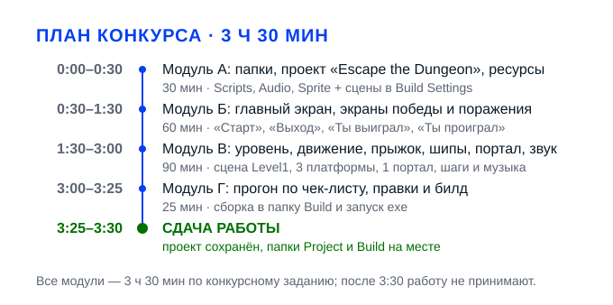
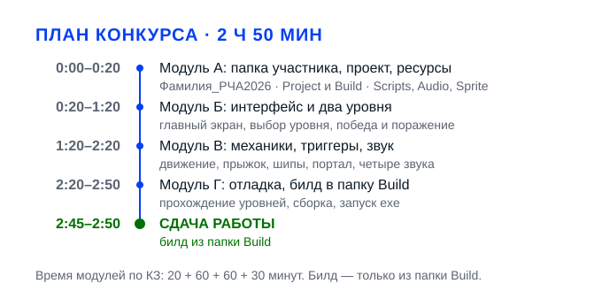
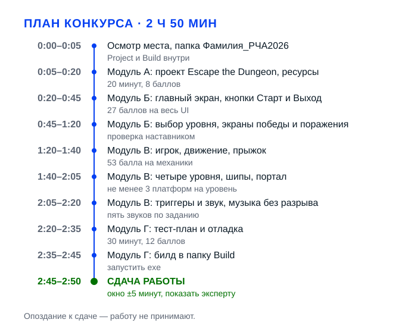

Разработка компьютерных игр (Р)
Задания ниже — официальные файлы «Абилимпикс» (источник: abilympics-russia.ru), разложенные по категориям. Решения написаны по тексту задания, регламенту и критериям оценки; в них указано, что именно проверяет эксперт.
Школьник
14–16 лет, базовый уровень заданияВыдержка из официального конкурсного задания: страницы, относящиеся к категории «Школьник» (стр. 6–10 источника).
Пошаговое решение
На этой странице — разбор конкурсного задания категории «Школьники» компетенции «Разработка компьютерных игр»: за три часа тридцать минут нужно собрать на Unity 2D-платформер «Escape the Dungeon». Задание разбито на четыре модуля по времени: тридцать минут на проект и ресурсы, час на интерфейс, девяносто минут на механики и тридцать минут на тестирование и сборку. Внутри — главный экран с кнопками «Старт» и «Выход», уровень не менее чем из трёх платформ с порталом и шипами, движение на A/D и стрелках, прыжок на пробел и W, экраны «Ты выиграл» и «Ты проиграл» с кнопками «Повторить?», «Меню» и стрелкой в левом верхнем углу, а также музыка меню, шаги, звуки победы и поражения. Разбор идёт в порядке модулей: папки, вёрстка, скрипты, отладка и билд. Чаще всего баллы теряются на двух вещах: сцены не добавлены в список сборки, а панели победы и поражения не снимают паузу при перезапуске уровня.

Задача 1. Собрать проект и разложить ресурсыМодуль А · 30 минут
Модуль А — это тридцать минут, за которые нужно получить аккуратную заготовку: папку со своей фамилией, внутри неё отдельно проект и отдельно будущая сборка, созданный в Unity проект «Escape the Dungeon» и импортированные ресурсы, разложенные по папкам Scripts, Audio и Sprite. Работы здесь немного, но именно она определяет, сколько времени останется на интерфейс и механику: неправильный путь, кириллица в адресе или ресурсы, сваленные в корень Assets, отнимают потом по десять-пятнадцать минут на переделку.
Действие 1.1. Создать папки по требованиям задания
Шаг 1.1.1
Открываем рабочий стол и создаём папку с именем «Фамилия_РЧА2026», подставляя свою фамилию латиницей: Ivanov_RCHA2026. Внутри неё создаём ровно две папки — «Project» для проекта Unity и «Build» для готовой сборки. Проверяем, что обе лежат именно внутри папки с фамилией, а не рядом с ней, и что в адресе нет пробелов и русских букв. Папку с фамилией создаём на локальном диске, а не внутри архива и не на сетевом ресурсе: тогда путь будет коротким и Unity примет его без вопросов.
Результат модуля А по конкурсному заданию — «создана папка проекта», и это первое, что проверяет эксперт: папка с фамилией и две вложенные папки с точными именами. Латинская запись фамилии — не прихоть: Unity и сборщик Windows спотыкаются на кириллице в пути, и билд может собраться, но не запуститься на другой машине.
На рабочем столе видна папка Ivanov_RCHA2026, внутри неё ровно две вложенные папки. Щёлкните по адресной строке проводника и прочитайте путь целиком: в нём должны быть только латинские буквы, цифры и подчёркивания.
Самая частая ошибка — создать «Project» и «Build» на рабочем столе рядом с папкой фамилии. Эксперт ищет их внутри, не находит и снимает балл за структуру, а вы в конце конкурса ищете билд не там, где его ждут.
Эксперт смотрит структуру папок в первые же минуты модуля А, ещё до того как вы откроете Unity: имена папок, вложенность и отсутствие лишних файлов на рабочем столе.
Шаг 1.1.2
Убеждаемся, что рабочий стол — это локальный диск, а не папка OneDrive, Dropbox или сетевой диск площадки. Проверяем свободное место: для проекта Unity с ресурсами и сборкой нужно не меньше трёх-четырёх гигабайт, потому что одна папка Library после первого открытия проекта вырастает до гигабайта и больше. Проверить это можно до открытия Unity: правый клик по папке, пункт «Свойства», строка «Расположение».
Синхронизируемая папка — главная причина «битого» проекта на чемпионате: файлы .meta перезаписываются во время импорта, Unity теряет связи со спрайтами, и сцена открывается с розовыми квадратами. Свободное место нужно и для сборки: если диск заполнится в модуле Г, билд упадёт с ошибкой, которую уже некогда разбирать.
В свойствах папки видно, что она на локальном диске C: или D:, а не в OneDrive. Свободного места — больше четырёх гигабайт. Проверить это можно в «Мой компьютер» за пару секунд, до открытия Unity. Если адрес длиннее двухсот символов, перенесите папку ближе к корню диска — это минута работы.
Работать прямо в OneDrive удобно, пока всё идёт хорошо, но при первом же конфликте синхронизации пропадают метаданные импорта. Вторая ошибка — оставить проект на флешке: скорость записи не даст нормально собрать билд.
Эксперт редко проверяет диск специально, но если проект не открывается или билд не собирается, первый вопрос будет именно про путь и место. Отдельно он отмечает, не лежит ли проект в облачной папке: это частая причина сбоев импорта.
Шаг 1.1.3
Сразу договоримся о правиле, которое сэкономит время дальше: все ресурсы, скрипты и сцены живут только внутри папки Project/Assets, а папка Build остаётся пустой до самого конца конкурса. Ничего не сохраняем на рабочий стол «на всякий случай» и не держим копии ресурсов рядом с проектом. Проверяем это сразу, пока проект пустой: позже, когда в Assets появятся сцены и скрипты, переносить папку придётся вместе со всеми настройками.
Разделение проекта и сборки — требование задания, и оно же защищает от путаницы: если начать складывать в Build промежуточные файлы, к модулю Г там окажется несколько версий exe, и вы не будете знать, какая рабочая. Чистая папка Build к моменту сдачи читается экспертом как признак того, что участник понимает разницу между исходником и продуктом.
Папка Build пуста, в Project лежит только проект Unity. Никаких «копия_ресурсов», «финал» и «новый проект» на рабочем столе нет. Убедитесь, что в Build нет ни одного файла: пустая папка — нормальное состояние до модуля Г.
Сложить в Build скриншоты, архивы ресурсов или старую сборку «чтобы не потерять» — к сдаче там будет каша, а эксперт попросит показать конкретный файл запуска. Третья ошибка — оставить на рабочем столе архив с ресурсами, который потом путается с проектом.
Эксперт проверяет Build в самом конце, но оценивает и то, насколько аккуратно велась работа: лишние файлы в папке сдачи он отмечает отдельно. Если в Build уже что-то лежит, он спросит, что это, и лишние файлы придётся объяснять.
Действие 1.2. Создать проект Unity с нужными настройками
Шаг 1.2.1
Запускаем Unity Hub, нажимаем «New project», выбираем шаблон «2D (Built-In Render Pipeline)» или «Universal 2D» — тот, что стоит на площадке. В поле Project name пишем «Escape the Dungeon» строго так, с заглавными буквами и пробелами, а в Location указываем путь до папки Project внутри своей папки с фамилией. Версию движка берём ту, что установлена, и не меняем.
Имя проекта и место — два пункта результата модуля А: «создан проект» и «создана папка проекта». Шаблон 2D важен потому, что в нём камера уже ортографическая, а спрайты по умолчанию импортируются как Sprite, а не как текстуры: в 3D-шаблоне половина ресурсов приедет «плоской картинкой на кваде» и придётся править импорт вручную.
Unity Hub показывает созданный проект в списке, а в проводнике внутри Project появились папки Assets, Packages, ProjectSettings. Название в заголовке окна Unity — «Escape the Dungeon». Проверьте также, что в Assets нет папки с тем же именем от предыдущей попытки.
Создать проект в корне диска или прямо на рабочем столе: тогда путь до Assets будет длинным и с кириллицей, а часть инструментов Unity не любит адреса длиннее двухсот символов. Вторая ошибка — выбрать 3D-шаблон и потом искать, почему камера смотрит в перспективу.
Эксперт сверяет имя проекта с заданием буквально, включая регистр: «escape the dungeon» с маленькой буквы он отметит как несоответствие. Отдельно смотрит на версию Unity: проект должен открываться на машине площадки без обновления.
Шаг 1.2.2
Открываем Edit → Project Settings и проверяем три вещи: в Player указано имя компании и продукта, в Quality оставлены уровни по умолчанию, в Graphics нет лишних постэффектов. Дальше в окне Game переключаем разрешение на 1920×1080 и соотношение 16:9 — под него удобно верстать интерфейс, и оно же будет у экспертa на мониторе. Если на площадке стоит несколько версий движка, берём ту, которую назвал технический эксперт на брифинге.
Настройки проекта — это фундамент вёрстки: если верстать под произвольное разрешение, а потом переключить на 16:9, кнопки уедут за край и придётся переставлять всё заново. Единое соотношение сторон ещё и делает скриншоты сопоставимыми с образцом из задания, по которому эксперт сверяет внешний вид главного экрана.
В Game view стоит 1920×1080, картинка не растянута, сцена пустая с серо-синим фоном камеры. В Project Settings → Player заполнены Product Name и Company Name. Проверьте это до вёрстки: менять соотношение сторон после расстановки кнопок придётся вместе с ними.
Оставить разрешение «Free Aspect»: при проверке на другом мониторе композиция разъедется, а на скриншоте будут чёрные полосы. Вторая ошибка — включать постэффекты вроде Bloom, из-за которых пиксельные спрайты выглядят размытыми.
Эксперт открывает игру на своём мониторе: интерфейс, свёрстанный под 16:9, у него садится ровно, и это заметно сразу. Если интерфейс съезжает при смене разрешения, он относит это к ошибкам вёрстки, а не к настройкам.
Шаг 1.2.3
Сохраняем первую сцену через Ctrl+S в папку Assets/Scenes под именем «Menu» и тут же открываем File → Build Settings (в Unity 6 — File → Build Profiles), добавляем Menu в список сцен кнопкой «Add Open Scenes». Сцена должна стоять первой, с индексом 0, потому что именно её грузит игра при запуске. Имя сцены пишем латиницей без пробелов — «Menu», — потому что по этому имени её будет искать скрипт перехода.
Список сцен в билде — самая незаметная и самая дорогая ошибка новичка: сцены, которых нет в списке, в собранной игре не существуют, и переход на уровень даёт чёрный экран вместо игры. Индекс 0 важен потому, что кнопка «Меню» будет грузить сцену по номеру, а не по имени.
В Build Settings первая строка — Menu с галочкой, рядом виден индекс 0. Сцена сохранена: в заголовке окна Unity нет звёздочки, а файл Menu.unity лежит в Assets/Scenes. Откройте список сцен ещё раз после сохранения уровня: новые сцены туда сами не попадают.
Забыть добавить сцену в список и потом искать, почему в редакторе всё работает, а в билде кнопка «Старт» ничего не делает. Вторая ошибка — сохранить сцену в корень Assets, где она теряется среди ресурсов.
Эксперт проверяет билд запуском: если стартовая сцена не в списке, игра открывается пустой, и это минус за весь модуль. Он проверяет список сцен до сборки билда, а не после: исправлять там уже поздно.
Действие 1.3. Импортировать и разложить ресурсы
Шаг 1.3.1
Открываем папку с выданными ресурсами, выделяем всё содержимое и перетаскиваем его в окно Project прямо на папку Assets, либо копируем через проводник в Project/Assets и возвращаемся в Unity, чтобы она импортировала файлы. Ждём, пока в правом нижнем углу закончится полоса импорта, и только потом что-то делаем. Если ресурсы выданы архивом, распаковываем его в папку вне проекта, а в Assets копируем только содержимое.
Пока импорт не закончился, файлы в Project выглядят серыми, а ссылки на них не создаются — если начать сразу расставлять спрайты, половина слотов останется пустой. Загрузка всех ресурсов в проект — прямое требование модуля А, и проверяется она по содержимому папки Assets.
В окне Project видны все файлы из выданного набора, у каждого спрайта есть стрелка раскрытия, у звука — значок динамика. Полоса импорта исчезла, в консоли нет красных ошибок. Сверьте количество файлов в Assets с выданным набором: если чего-то не хватает, скажите эксперту сразу.
Перетащить ресурсы в окно Scene вместо Project: Unity создаст объекты на сцене, а файлы останутся вне проекта, и после перезапуска всё пропадёт. Вторая ошибка — копировать папку целиком, если внутри лежат лишние файлы вроде thumbs.db.
Эксперт заглядывает в Assets и смотрит, что все выданные ресурсы на месте: не хватает фона или звука шагов — значит, модуль закрыт не полностью. Пропавший фон или звук он замечает на первом же прогоне игры.
Шаг 1.3.2
Внутри Assets создаём три папки с точными именами: «Scripts», «Audio» и «Sprite». Дальше раскладываем: все .cs-файлы в Scripts, все .wav, .mp3 и .ogg в Audio, все .png и .jpg в Sprite. Если в наборе есть готовые префабы или шрифты, для них заводим отдельные папки Prefabs и Fonts, но три обязательные остаются на верхнем уровне. Папку Scenes создаём отдельно от Scripts: сцены не относятся ни к одной из трёх обязательных групп.
Группировка по категориям — отдельный пункт задания, и он экономит время в модуле В: когда спрайт игрока, шипов и портала лежат в одной папке, вы находите их за секунду, а не листаете двадцать файлов. Порядок в проекте эксперт читает как показатель культуры работы, а не как формальность.
В Assets ровно три папки с ресурсами, в корне Assets нет ни одного файла, и в каждой папке лежат файлы только своего типа. Проверить легко: щёлкните по Assets и посмотрите на список — он должен быть коротким.
Сложить всё в одну папку «Res» и пообещать разложить потом: к модулю В найти нужный звук среди тридцати файлов уже некогда, а балл за структуру потерян сразу. Третья ошибка — назвать папку «Sprites» во множественном числе, тогда проверка по имени не совпадёт.
Эксперт открывает окно Project и оценивает структуру до начала работы над интерфейсом — это самый быстрый способ понять, аккуратен ли участник. Он смотрит и на имена папок: «Sprite», а не «sprites» и не «Картинки».
Шаг 1.3.3
Проходим по спрайтам и проверяем настройки импорта: Texture Type — Sprite (2D and UI), Sprite Mode — Single, Pixels Per Unit — 100, Filter Mode — Point (no filter), Compression — None. Для фона и логотипа, если они крупные и не пиксельные, фильтрацию можно оставить Bilinear, а сжатие — Normal Quality. Если спрайт уже стоит на сцене, после смены настроек импорта его нужно перетащить в слот заново, иначе изменения не применятся.
Неверный тип текстуры — причина, по которой спрайт не перетаскивается в слот Image или выглядит мыльным. Point-фильтрация нужна пиксельной графике: при Bilinear края размываются, и на экране эксперта игра выглядит неаккуратно, хотя формально всё работает.
Выделите спрайт и посмотрите в инспекторе: Texture Type — Sprite, внизу окна превью показывает картинку с прозрачным фоном. У звуков в инспекторе Load Type — Decompress On Load. Проверьте один крупный спрайт и один мелкий: у мелкого сжатие заметно сильнее.
Оставить у спрайтов Texture Type = Default: тогда в слоте Image их просто не будет в списке, и вы потратите десять минут на поиск «пропавшей» картинки. Третья ошибка — включить у всех спрайтов Mesh Type Tight, из-за чего у платформ появляются дырки в коллайдере.
Эксперт смотрит на качество картинки на экране: мыльные или рваные края спрайтов он относит к ошибкам импорта. Отдельно он смотрит на прозрачность: чёрный фон вокруг спрайта читается как ошибка импорта.
Задача 2. Сверстать главный экран, экраны победы и пораженияМодуль Б · 60 минут
Модуль Б — час на весь интерфейс: главный экран на отдельной сцене с фоном из ресурсов, картинкой названия и двумя кнопками, а также экран победы с текстом «Ты выиграл» и экран поражения с текстом «Ты проиграл», где на каждом есть «Повторить?», «Меню» и стрелка в левом верхнем углу. Здесь важно не украшательство, а точное соответствие образцу: расположение, подписи и работающие кнопки — это то, что эксперт проверяет нажатием.
Действие 2.1. Развернуть Canvas и фон главного экрана
Шаг 2.1.1
В сцене Menu создаём Canvas: GameObject → UI → Canvas. В его компоненте Canvas ставим Render Mode — Screen Space Overlay, а в Canvas Scaler — Scale With Screen Size, Reference Resolution 1920×1080, Match 0.5. Рядом автоматически появится EventSystem — если его нет, создаём отдельно, без него кнопки не нажимаются. Сразу переименуйте Canvas в MenuCanvas, чтобы не путать его с Canvas уровня при переходе между сценами.
Screen Space Overlay рисует интерфейс поверх всего и не зависит от камеры, поэтому кнопки не уедут при смене размера окна. Canvas Scaler с фиксированным референсом — единственный способ сохранить пропорции: без него на другом мониторе кнопки «Старт» и «Выход» окажутся разного размера и в разных местах.
В окне Game при переключении между 16:9 и 4:3 интерфейс масштабируется целиком, не разъезжаясь. В иерархии есть Canvas и EventSystem, у Canvas Scaler стоит Scale With Screen Size. Отдельно проверьте, что EventSystem в иерархии один: второй ломает нажатия и путает обработчики.
Оставить Constant Pixel Size: на мониторе с другим разрешением кнопки станут крошечными или огромными. Вторая ошибка — удалить EventSystem, решив, что это лишний объект: кнопки перестают реагировать на клики.
Эксперт меняет размер окна и смотрит, держится ли композиция: это первая проверка качества вёрстки. Он смотрит на главный экран в полноэкранном режиме: масштаб интерфейса должен остаться читаемым.
Шаг 2.1.2
Внутри Canvas создаём Image для фона: правый клик по Canvas → UI → Image, перетаскиваем в поле Source Image фон из папки Sprite. Растягиваем его на весь экран: в Rect Transform нажимаем Alt+Shift и выбираем привязку stretch-stretch, а Left, Right, Top, Bottom ставим в ноль. Слой фона оставляем первым в списке дочерних объектов, чтобы он рисовался под кнопками.
Фон из ресурсов — обязательный элемент главного экрана по заданию, и именно он задаёт впечатление от игры. Растяжка по всем четырём сторонам нужна, чтобы не было белых полос по краям при другом соотношении сторон, а порядок в иерархии определяет, что окажется сверху: фон, добавленный последним, закроет кнопки.
В окне Game фон занимает весь экран без полос, кнопок пока нет, и в иерархии Image стоит выше остальных будущих элементов. При смене разрешения фон не съезжает. Проверьте края: полосы цвета камеры по периметру — признак того, что фон не растянут по всем сторонам.
Поставить фон по центру с фиксированным размером: по краям появятся полосы цвета камеры, и эксперт увидит незакрытую область. Вторая ошибка — перетащить фон в сцену как Sprite Renderer, а не в Canvas: он окажется под интерфейсом или не в том масштабе.
Эксперт смотрит на главный экран как на картинку из задания: фон, название, две кнопки — ничего лишнего и ничего не обрезано. Отдельно он отмечает, совпадает ли фон с образцом из задания: подменённая картинка видна сразу.
Шаг 2.1.3
Проверяем камеру сцены Menu: она должна быть Orthographic, стоять в точке (0, 0, −10), а Background Color — тёмный, в тон фону, чтобы случайная щель по краю не выглядела белой. Тут же выключаем у камеры Audio Listener только в том случае, если позже добавите свой — по умолчанию он нужен и должен остаться один. Если в ресурсах есть рамка или виньетка, её ставим поверх фона, но под логотип, чтобы она не перекрывала кнопки.
Тёмный цвет камеры — страховка: если фон при каком-то разрешении не дотянется до края, зритель увидит тёмную полосу, а не ярко-голубую, и композиция не развалится. Один Audio Listener на сцену — техническое требование Unity: два источника дают предупреждение и глухой звук.
В окне Game нет ярких полос по краям, в консоли нет предупреждения «There are 2 audio listeners in the scene». Камера стоит в (0, 0, −10). Проверьте это на двух разрешениях подряд — 1920×1080 и 1280×720, переключая список в окне Game.
Оставить цвет камеры по умолчанию, серо-синий: на тёмном фоне он читается как дыра по краю экрана. Вторая ошибка — добавить второй Audio Listener вместе с музыкальным объектом. Третья ошибка — оставить у камеры Skybox, который в 2D перекрывает фон и даёт синеву по краям.
Эксперт замечает такие щели сразу, потому что смотрит на экран целиком, а не на отдельные кнопки. Он обращает внимание на цвет фона камеры: яркая полоса по краю экрана сразу выдаёт недосмотр.
Действие 2.2. Поставить название игры и кнопки «Старт» и «Выход»
Шаг 2.2.1
Добавляем картинку с названием: снова UI → Image, в Source Image кладём логотип из ресурсов, в Rect Transform ставим привязку по центру и размер по пропорциям исходника — например, 900 на 300 пикселей, — а позицию по Y поднимаем примерно на 150, чтобы под логотипом осталось место для кнопок. Если картинка мыльная, включаем Set Native Size и уменьшаем только через Scale.
Название игры — часть композиции главного экрана по образцу: оно должно читаться первым, до кнопок. Ручной размер по пропорциям нужен, чтобы логотип не сплющился: если тянуть рамку за угол без Shift, картинка искажается, и это видно на любом скриншоте.
Логотип по центру, не искажён, не наезжает на будущие кнопки и не обрезан краем экрана. Проверьте на разрешении 1920×1080 и на 1280×720 — соотношение должно сохраниться. Проверьте, что логотип не перекрывает область будущих кнопок и не заходит на самый край.
Растянуть логотип на всю ширину: он становится плоским и нечитаемым. Вторая ошибка — оставить у Image включённым Raycast Target, из-за чего логотип перехватывает клики по кнопкам, которые под ним. Третья ошибка — положить логотип под фон, и тогда его не видно совсем.
Эксперт смотрит на главный экран целиком и сравнивает с образцом: название сверху, кнопки под ним, ничего не перекрывается. Он сравнивает положение логотипа с рисунком из задания: название сверху, по центру.
Шаг 2.2.2
Под логотипом создаём кнопку «Старт»: UI → Button - TextMeshPro (если TMP не установлен, Unity предложит импортировать базовые ресурсы — соглашаемся). Размер задаём 420 на 110, позицию — по центру, ниже логотипа примерно на 120. В тексте кнопки пишем «Старт», шрифт увеличиваем до 44–48, цвет текста — контрастный фону кнопки. Кнопку называем «StartButton»: по имени её проще найти в списке OnClick и в иерархии.
Кнопка «Старт» запускает уровень, и это одна из двух обязательных кнопок главного экрана. Крупный шрифт и заметный размер — не про красоту: эксперт и зритель должны понимать, куда нажимать, без прищуривания, а мелкая подпись читается как недоделанный интерфейс.
Кнопка видна, текст не обрезан по краям, при наведении мыши подсвечивается. Расстояние между логотипом и кнопкой — не меньше сорока пикселей, чтобы элементы не слипались. Проверьте, что текст не переносится на вторую строку и не обрезается по краям кнопки.
Оставить у кнопки текст «Button» или «Text (TMP)»: эксперт проверяет подпись буквально по заданию, и «Button» — это минус за весь экран. Вторая ошибка — сделать кнопку слишком маленькой, 100 на 40. Третья ошибка — оставить у кнопки полностью прозрачный цвет, и её не видно на фоне.
Эксперт нажимает «Старт» в первую очередь — от этого зависит, увидит ли он уровень вообще. Он также смотрит на размер кнопки: она должна быть заметной, но не закрывать название игры.
Шаг 2.2.3
Вторую кнопку создаём копированием первой: Ctrl+D, переименовываем в «Exit», меняем текст на «Выход» и опускаем на 140 пикселей ниже, сохраняя тот же размер и выравнивание по центру. Проверяем, что обе кнопки стоят в одной вертикальной оси и с одинаковым отступом. Копию переименовываем сразу, до правки текста: так проще не перепутать, какая кнопка за что отвечает.
Две кнопки с одинаковым размером и шагом — это то, что делает экран аккуратным: разъехавшиеся по ширине кнопки читаются как небрежность, даже если всё работает. Копирование вместо создания заново гарантирует одинаковый шрифт, цвет и скругления, что экономит минуты в модуле Б.
Кнопки «Старт» и «Выход» одинаковой ширины, стоят по центру одна под другой, отступ между ними ровный. В иерархии они обе внутри Canvas и не перекрывают друг друга. Проверьте отступы по Rect Transform: разница по Y между кнопками должна быть одинаковой.
Создать вторую кнопку с нуля и получить другой шрифт и другой цвет. Или поставить «Выход» рядом с «Старт» по горизонтали, хотя в образце они стоят столбиком. Третья ошибка — оставить у копии текст «Старт», и на экране появляются две одинаковые кнопки.
Эксперт сверяет расположение с рисунком из задания: вертикальный столбик кнопок под названием игры. Он также проверяет, что кнопки одинаковой ширины и стоят с ровным отступом.
Шаг 2.2.4
Создаём в папке Scripts скрипт MenuController и вешаем его на пустой объект GameManager в сцене Menu. В нём два публичных метода: StartGame, который вызывает SceneManager.LoadScene(«Level1»), и QuitGame, который вызывает Application.Quit() и в редакторе дополнительно останавливает игру через #if UNITY_EDITOR UnityEditor.EditorApplication.isPlaying = false. Дальше в инспекторе кнопки «Старт» в списке OnClick добавляем объект GameManager и выбираем MenuController → StartGame, то же для «Выход» с QuitGame.
Без привязки обработчика кнопка выглядит рабочей, но не делает ничего — и это самая частая потеря баллов в модуле Б, потому что внешне экран полностью соответствует заданию. Ветка для редактора нужна потому, что Application.Quit в Unity Editor не срабатывает, и проверить кнопку «Выход» иначе невозможно.
Нажимаем «Старт» в режиме Play: происходит переход на сцену уровня, если она уже создана, или появляется ошибка о ненайденной сцене, что тоже подтверждает работоспособность обработчика. «Выход» в редакторе останавливает Play, в билде закрывает игру.
Перетащить в OnClick сам объект кнопки вместо GameManager: в списке методов не будет StartGame, и участник решает, что «Unity глючит». Вторая ошибка — написать SceneManager.LoadScene(1), не добавив уровень в Build Settings.
Эксперт нажимает обе кнопки: молчащая кнопка — прямой минус за интерфейс и за механики одновременно. Он нажимает «Выход» в собранной игре: в редакторе эта кнопка ведёт себя иначе.
Действие 2.3. Сверстать экран победы
Шаг 2.3.1
Переходим на сцену уровня (или пока на Menu, если уровня ещё нет) и внутри Canvas создаём Panel — это будет экран победы. Растягиваем панель на весь экран, цвет ставим тёмно-синий с прозрачностью около 200, чтобы за ней угадывался уровень. Поверх панели добавляем TextMeshPro — Text с надписью «Ты выиграл», размер 90, по центру, выше середины на 120 пикселей.
Полупрозрачная панель на весь экран — самый надёжный способ показать победу: игрок видит, что уровень закончился, но не теряет контекст. Текст «Ты выиграл» требуется заданием дословно, и эксперт читает именно эту формулировку, а не «Победа!» или «You win».
Панель закрывает весь экран, текст по центру читается на любом фоне, в иерархии панель стоит последней, то есть поверх игрового поля. Проверьте, что панель появляется только по событию: при запуске уровня её не должно быть видно.
Сделать панель непрозрачной и маленькой: тогда она выглядит как случайное окно посреди игры. Вторая ошибка — написать текст латиницей или с другой формулировкой, что эксперт отметит как несоответствие заданию.
Эксперт доходит до портала и смотрит, что появилось: панель с точным текстом и двумя кнопками. Он читает текст на панели и сверяет его с заданием посимвольно.
Шаг 2.3.2
Внутри панели победы создаём две кнопки: «Повторить?» с вопросительным знаком строго как в задании и «Меню». Размер 360 на 100, стоят по центру ниже текста с шагом 130. Отдельно в левом верхнем углу экрана, но внутри той же панели, ставим третью кнопку-стрелку: Button с картинкой стрелки вместо текста, размер 90 на 90, привязка к левому верхнему углу, отступ 40 от краёв.
Три элемента управления на экране победы — требование задания, включая стрелку, которая дублирует «Меню». Стрелку удобнее делать отдельной кнопкой с Image, а не рисовать символом «←» в тексте: символ в разных шрифтах выглядит по-разному и может не отобразиться вовсе.
На панели три кликабельных элемента: «Повторить?», «Меню» и стрелка в левом верхнем углу. Кнопки не наезжают друг на друга и не выходят за край при 1280×720. Проверьте стрелку при 1280×720: у края она не должна обрезаться.
Сделать стрелку текстом и получить пустой квадрат вместо символа. Вторая ошибка — поставить стрелку в правый верхний угол, хотя задание требует левый. Третья ошибка — сделать стрелку 40 на 40, в неё трудно попасть мышью.
Эксперт специально ищет стрелку в левом верхнем углу: это отдельный пункт критериев, который легко пропустить. Он проверяет, что стрелка действительно ведёт в меню, а не просто нарисована.
Шаг 2.3.3
Назначаем обработчики: «Повторить?» вызывает метод RestartLevel, который сначала возвращает Time.timeScale = 1, а затем SceneManager.LoadScene с активной сценой по индексу; «Меню» и стрелка вызывают GoToMenu — тоже Time.timeScale = 1, затем LoadScene(0). После настройки выключаем панель целиком через галочку в инспекторе, чтобы при старте уровня её не было видно.
Возврат timeScale — обязательный шаг: если паузу не снять, следующий уровень загрузится с замороженным временем, игрок не сдвинется с места, и это выглядит как поломка игры. Выключенная по умолчанию панель нужна, чтобы победа показывалась только по событию, а не сразу при запуске уровня.
В режиме Play при старте уровня панели не видно, в консоли нет ошибок. Если включить панель вручную в инспекторе и нажать «Меню», происходит переход на главный экран, и там сразу работают кнопки. Проверьте это дважды подряд: пауза должна сниматься и после второго поражения.
Забыть про timeScale: после первого выигрыша игра «зависает», потому что время стоит на нуле. Вторая ошибка — оставить панель включённой, и уровень начинается с экрана победы. Третья ошибка — вызывать LoadScene без индекса и получить в консоли ошибку загрузки.
Эксперт проходит уровень дважды: второй запуск после «Повторить?» показывает, работает ли сброс времени. Он также смотрит, что при возврате в меню музыка меню начинается заново.
Действие 2.4. Сверстать экран поражения
Шаг 2.4.1
Копируем панель победы целиком через Ctrl+D, переименовываем в LosePanel и меняем текст на «Ты проиграл». Цвет панели делаем чуть темнее и с красноватым оттенком, чтобы поражение отличалось от победы с первого взгляда. Кнопки и стрелку оставляем на месте — их расположение по заданию одинаковое. Кнопки внутри копии остаются на своих местах, поэтому переставлять их не нужно: меняем только текст и оттенок панели.
Копирование гарантирует, что оба экрана выглядят как одна система, а не как две разные игры: одинаковые отступы, шрифты и размеры кнопок. Текст «Ты проиграл» требуется дословно, и его легко случайно оставить от копии — это одна из самых обидных ошибок модуля.
Панель поражения включает текст «Ты проиграл», две кнопки и стрелку. При включении она перекрывает уровень так же, как панель победы, и не просвечивает игровым полем. Проверьте оба экрана подряд: подписи не должны совпадать.
Скопировать панель и забыть поменять текст: на экране поражения написано «Ты выиграл», и эксперт фиксирует несоответствие сразу. Вторая ошибка — сделать панель поражения без стрелки, «потому что и так есть меню».
Эксперт специально проверяет оба экрана подряд и сравнивает подписи с заданием. Он также отмечает, различимы ли экраны победы и поражения с первого взгляда.
Шаг 2.4.2
Проверяем обработчики у скопированных кнопок: они должны ссылаться на те же методы RestartLevel и GoToMenu, но уже с этой панелью в качестве источника события. Если скрипт управления панелями лежит на объекте GameManager, ссылки в OnClick после копирования сохраняются, и достаточно убедиться, что объект не потерялся. Панель по умолчанию выключаем. После копирования панели ссылки на объект-получатель иногда слетают, поэтому список OnClick проверяем у всех трёх кнопок.
Копирование иногда рвёт ссылки, если объект-получатель был в другой сцене или удалён, — тогда кнопка молчит, а внешне всё правильно. Проверка ссылок занимает полминуты и снимает риск потерять баллы за работающий интерфейс на самом проверяемом экране.
У каждой из трёх кнопок в OnClick виден объект и имя метода, список не пустой. Нажатие в Play включает переход, а не ошибку в консоли. Проверьте каждую кнопку в Play: одно нажатие — один переход, без двойных загрузок.
Оставить в OnClick пустой список после копирования и не заметить: на экране поражения кнопки не работают, и участник застревает на нём при тестировании. Третья ошибка — оставить в копии ссылку на панель победы, и тогда поражение показывает не тот экран.
Эксперт нажимает кнопки на экране поражения в первую очередь, потому что попасть на шипы проще всего. Он проверяет, что после «Меню» с главного экрана снова можно начать игру.
Шаг 2.4.3
Финальная вычитка интерфейса: проходим по всем трём экранам и сверяем подписи с заданием посимвольно — «Старт», «Выход», «Ты выиграл», «Ты проиграл», «Повторить?», «Меню». Проверяем, что ни один текст не обрезан рамкой, не выходит за экран и читается на фоне. Тут же выставляем у всех декоративных картинок Raycast Target = false. Отдельно проверяем кнопку выхода: в собранной игре она должна закрывать окно, а не просто останавливать сцену.
Дословные подписи — это то, что эксперт проверяет механически, и любая перестановка букв стоит балла. Отключённый Raycast Target у фона и логотипа снимает классическую проблему «кнопка не нажимается»: невидимый Image поверх кнопки перехватывает клик, и найти причину бывает сложно.
Все шесть подписей совпадают с заданием, ни один текст не обрезан, кнопки нажимаются во всех местах, включая края. Пройдите по экрану мышью и нажмите каждую кнопку. Сделайте скриншот каждого экрана и сравните с рисунками из задания.
Пропустить вопросительный знак в «Повторить?» или поставить «Выход» вместо «Меню» — мелочь, которая читается как невнимательность ко всему заданию. Третья ошибка — оставить подписи на английском, потому что так было в шаблоне кнопки.
Эксперт сверяет подписи по чек-листу, и это одна из немногих проверок, где нет субъективности. Он также проверяет, что ни один текст не выходит за пределы экрана.
Задача 3. Собрать уровень и оживить его механикамиМодуль В · 90 минут
Модуль В — полтора часа, за которые уровень должен стать играбельным: отдельная сцена, не меньше трёх платформ, один портал для победы и несколько шипов для поражения, движение по A/D и стрелкам, прыжок на пробел и W, а также четыре звука — музыка меню, шаги, поражение и победа. Здесь же лежит вариативная часть: выбор уровня после «Старта». Порядок работы лучше держать такой: сначала геометрия и коллайдеры, потом управление, потом события победы и поражения, в самом конце звук — так каждая следующая часть проверяется на уже работающей предыдущей.
Действие 3.1. Создать сцену уровня и расставить геометрию
Шаг 3.1.1
Создаём новую сцену через File → New Scene, сохраняем её в Assets/Scenes под именем «Level1» и сразу добавляем в Build Settings второй строкой, чтобы индекс был 1. Камеру оставляем Orthographic, Size ставим 5 или 6 — так на экране видно примерно десять-двенадцать юнитов по высоте, что удобно для платформера с прыжком средней высоты. Цвет фона подбираем в тон фону меню, но темнее.
Отдельная сцена для уровня — прямое требование модуля В, и она же спасает от главной ошибки новичков: когда меню и уровень живут в одной сцене, после перезапуска уровня интерфейс меню остаётся висеть поверх игры. Размер ортографической камеры определяет масштаб всей игры, поэтому его выбирают до расстановки платформ, а не после.
Сцена Level1 сохранена, в Build Settings стоит второй с индексом 1, в окне Game видна пустая сцена с ровным фоном. Соотношение сторон 16:9, картинка не растянута. Проверьте индекс сцены в списке: у Menu он 0, у Level1 — 1.
Забыть добавить сцену в Build Settings: в редакторе переход работает, а в собранной игре кнопка «Старт» выдаёт ошибку. Вторая ошибка — менять размер камеры уже после расстановки платформ, из-за чего уровень приходится перестраивать.
Эксперт запускает билд и первым делом проверяет, что уровень открывается отдельной сценой, а не подгружается внутрь меню. Он открывает билд и смотрит, что уровень — отдельная сцена, а не часть меню.
Шаг 3.1.2
Расставляем платформы: минимум три штуки, разной длины и на разной высоте. Каждую делаем из спрайта платформы, добавляем BoxCollider2D и подгоняем размер коллайдера по видимой части картинки, без зазоров и без выступов. Платформы не должны пересекаться друг с другом: между ними оставляем просвет минимум в один юнит, а по высоте — не больше трёх юнитов, иначе прыжок до верхней не достанет.
Три платформы и отсутствие наложений — формальные критерии уровня из задания, и проверяются они визуально за пять секунд. Просвет между платформами нужен технически: два соприкасающихся коллайдера дают игроку «зацеп» на стыке, персонаж останавливается или подпрыгивает, и уровень кажется сломанным.
В Scene view видно три отдельные платформы, между ними чистые просветы, коллайдеры совпадают с картинками. Прыжок с нижней платформы достаёт до верхней: проверьте это в Play, а не на глаз. Проверьте крайние платформы: коллайдер не должен выходить за картинку больше чем на пару пикселей.
Сделать все платформы на одной высоте — уровень превращается в прямую линию, и прыжок оказывается не нужен. Вторая ошибка — оставить у платформы коллайдер по умолчанию, который больше картинки, из-за чего игрок «висит» в воздухе над краем.
Эксперт считает платформы и смотрит на просветы: наложение коллайдеров он отмечает как дефект уровня. Он также смотрит, нет ли на уровне платформы, до которой нельзя добраться.
Шаг 3.1.3
Ставим шипы: несколько штук, каждый — спрайт шипов с BoxCollider2D, у которого включена галочка Is Trigger. Задаём тег «Spike» (создаём его в Tag Manager, если такого нет) и ставим шипы на поверхность платформы так, чтобы коллайдер выступал над ней на десять-пятнадцать пикселей. Один-два шипа ставим на пути игрока, но так, чтобы их можно было перепрыгнуть.
Несколько шипов и проигрыш при контакте — основная механика поражения по заданию. Is Trigger обязателен: обычный коллайдер оттолкнёт персонажа, и он будет отскакивать от шипов вместо того, чтобы проигрывать. Тег нужен, чтобы скрипт игрока отличал шипы от платформы и портала без сравнения имён объектов.
В инспекторе у шипов стоит Is Trigger и тег Spike. В Play персонаж, коснувшись шипов, вызывает событие поражения, а не отскакивает и не проваливается сквозь платформу. Проверьте шипы у края платформы: коллайдер должен выступать, но не висеть в воздухе.
Оставить шипы с обычным коллайдером: игрок на них стоит, как на камне, и уровень непроходим по смыслу. Вторая ошибка — утопить шипы в платформу, из-за чего коллайдер игрока не достаёт до триггера. Третья ошибка — поставить шипы вровень с платформой, и тогда их просто не видно.
Эксперт специально наступает на шипы: если ничего не произошло, механика поражения считается невыполненной. Он проверяет, что шипов несколько, а не один: задание требует множественное число.
Шаг 3.1.4
Ставим один портал на последней платформе: спрайт портала с BoxCollider2D и включённым Is Trigger, тег «Portal». Портал делаем заметно больше персонажа — примерно два на три юнита, — чтобы в него было легко попасть, и ставим его на таком расстоянии от края, чтобы игрок не проваливался вниз, пытаясь до него дотянуться. Проверяем, что путь до портала проходим: все разрывы перепрыгиваются с запасом.
Один портал для победы — требование задания, и второй такой же сбивает игрока с толку: непонятно, какой из них настоящий. Проходимость уровня — отдельный критерий: непроходимый уровень обнуляет впечатление от всей работы, даже если скрипты написаны правильно, потому что эксперт не сможет дойти до победы.
Портал один, в него можно войти, прыгнув с последней платформы. Пройдите уровень целиком от старта до портала, не используя никаких обходов: если пришлось прыгать «на пределе», разрыв слишком широкий.
Поставить портал в воздухе без платформы под ним: до него нельзя дойти, и победа недостижима. Вторая ошибка — сделать портал размером с персонажа, из-за чего в него попадаешь только случайно. Третья ошибка — оставить у портала обычный коллайдер, и игрок отскакивает от него.
Эксперт проходит уровень сам: если он не смог дойти до портала за две попытки, это фиксируется как непроходимость. Он также проверяет, что портал один: второй он считает ошибкой композиции уровня.
Действие 3.2. Настроить персонажа, движение и прыжок
Шаг 3.2.1
Создаём объект Player: спрайт персонажа, поверх Rigidbody2D и BoxCollider2D. В Rigidbody2D ставим Gravity Scale 3, Collision Detection — Continuous, Interpolate — Interpolate, а Constraints — Freeze Rotation Z, чтобы персонаж не кувыркался при столкновениях. Массу оставляем 1, Linear Drag — 0. Тег объекта — «Player», слой — тоже Player, если он есть в списке.
Freeze Rotation Z — обязательная настройка для платформера: без неё персонаж при ударе о край платформы заваливается набок и перестаёт управляться, а эксперт видит «сломанную физику». Continuous нужен, чтобы на скорости персонаж не проскакивал сквозь тонкие платформы и не проваливался в шипы без срабатывания триггера.
В Play персонаж падает вниз, не вращается, не проваливается сквозь платформу. В инспекторе Rigidbody2D стоит Continuous и заморожено вращение по Z. Проверьте это на краю платформы: персонаж должен падать, а не висеть на коллайдере.
Оставить Freeze Rotation выключенным: на первом же прыжке персонаж кувыркается и застревает. Вторая ошибка — Collision Detection Discrete при высокой скорости, из-за чего он проскакивает сквозь шипы и не проигрывает.
Эксперт смотрит на поведение персонажа при столкновениях: вращение и провалы он замечает мгновенно. Он также проверяет, что персонаж не проваливается сквозь тонкие платформы при быстром падении.
Шаг 3.2.2
Создаём в Scripts скрипт PlayerController, вешаем на Player и пишем движение: в Update читаем горизонтальную ось через Input.GetAxisRaw(«Horizontal»), умножаем на скорость 5 и присваиваем Rigidbody2D.linearVelocity по X, сохраняя текущую скорость по Y. В Unity более старых версий то же поле называется velocity. Ось Horizontal по умолчанию включает и A/D, и стрелки влево-вправо, поэтому отдельные проверки клавиш писать не нужно.
Движение на A/D и на стрелки — требование задания, и стандартная ось Horizontal закрывает его одним выражением, без шести условий на каждую клавишу. Сохранение скорости по Y обязательно: если присвоить вектор целиком, персонаж перестанет падать и будет «плыть» по воздуху, а прыжок сломается.
В Play персонаж едет влево и вправо и от A/D, и от стрелок, при этом падает вниз под действием гравитации. Скорость на глаз ровная, без рывков и без ускорения до бесконечности. Проверьте обе раскладки по отдельности, а не только A и D.
Использовать GetAxis вместо GetAxisRaw: появляется плавный разгон и торможение, из-за чего персонаж «скользит» и плохо слушается. Вторая ошибка — присвоить вектор скорости целиком, обнулив Y, и получить летающего персонажа.
Эксперт пробует обе раскладки по очереди: и A/D, и стрелки должны работать одинаково. Он смотрит на скорость: персонаж не должен разгоняться до неуправляемой.
Шаг 3.2.3
Пишем прыжок: проверяем Input.GetKeyDown(KeyCode.Space) или Input.GetKeyDown(KeyCode.W), и только если персонаж на земле — задаём Rigidbody2D.linearVelocity по Y равным 8. На земле проверяем через Physics2D.OverlapCircle от точки под ногами радиусом 0.15 по маске слоя Ground, либо через OnCollisionEnter2D с платформой и сброс флага при выходе. Точку проверки земли выносим отдельным пустым объектом GroundCheck.
Прыжок на пробел и W — требование задания, а проверка земли нужна, чтобы персонаж не летал вверх по нажатию в воздухе: без неё он забирается на любую платформу, и весь смысл препятствий исчезает. OverlapCircle надёжнее проверки по тегу, потому что не зависит от того, с какой стороны произошло касание.
Персонаж прыгает один раз, во втором нажатии в воздухе не прыгает, после приземления снова прыгает. Высота прыжка позволяет перепрыгнуть шипы и достать до верхней платформы. Проверьте прыжок у самого края платформы: персонаж не должен «прилипать» к стене.
Прыгать через AddForce без сброса скорости: при повторных нажатиях персонаж разгоняется вверх и улетает за пределы экрана. Вторая ошибка — проверять землю по OnTriggerEnter, который не срабатывает на обычных коллайдерах платформ.
Эксперт проверяет именно двойной прыжок в воздухе: это самая заметная ошибка в платформере. Он также пробует прыжок с края платформы: персонаж не должен цепляться за стену.
Шаг 3.2.4
Разворачиваем спрайт по направлению движения: при отрицательной горизонтальной оси ставим localScale.x = −1, при положительной — 1, а не переключаем flipX у Sprite Renderer, чтобы коллайдер оставался на месте. Заодно настраиваем анимацию покоя и бега, если в ресурсах есть кадры: создаём Animator с двумя состояниями и переключаем параметром Speed. Если анимаций нет, оставляем один кадр и не тратим на это время.
Разворот по направлению — мелочь, которая отличает аккуратную работу от заготовки: персонаж, бегущий спиной вперёд, читается как недоделка. Через localScale это делается в одну строку, а коллайдер при таком развороте остаётся симметричным и не даёт смещений при повороте у стены.
В Play персонаж смотрит в сторону движения, при остановке остаётся в последнем направлении. Коллайдер не смещается: проверьте, что у стены персонаж не застревает после разворота. Проверьте разворот у стены: после него персонаж не должен застревать.
Разворачивать через поворот объекта на 180 градусов по Y: коллайдер уезжает в сторону, и персонаж застревает в платформах. Вторая ошибка — потратить двадцать минут на аниматор, оставив без внимания победу и поражение.
Эксперт смотрит на персонажа в движении: разворот и отсутствие рывков он отмечает как качество исполнения. Он также проверяет, что коллайдер не смещается после разворота у стены.
Действие 3.3. Связать шипы и портал с экранами победы и поражения
Шаг 3.3.1
Дописываем в PlayerController метод OnTriggerEnter2D: если у вошедшего объекта тег «Spike», вызываем Lose(). Перед этим убеждаемся, что у игрока включён хотя бы один коллайдер без Is Trigger, а у шипов — Is Trigger, иначе событие не придёт вовсе. В метод добавляем защиту: если экран уже показан, второй вызов игнорируем, чтобы звук поражения не накладывался сам на себя.
Поражение при контакте с шипами — основная механика, и проверяется она экспертом буквально: он наступает на шипы и ждёт экрана «Ты проиграл». Защита от повторного вызова нужна потому, что триггер может сработать несколько раз за кадр при быстром движении, и тогда звук поражения превращается в треск.
В Play при касании шипов появляется экран поражения, персонаж останавливается. В консоли нет ошибок о ненайденном теге или компоненте. Повторное касание не вызывает второго срабатывания. Проверьте касание шипов на бегу и с прыжка: событие должно срабатывать в обоих случаях.
Проверять тег по имени объекта или через GetComponent вместо CompareTag: при переименовании спрайта механика молча перестаёт работать. Вторая ошибка — сделать шипы обычными коллайдерами, и тогда персонаж просто стоит на них.
Эксперт наступает на шипы в самом начале проверки: это быстрый способ увидеть, работает ли вообще система событий. Отдельно он смотрит, что шипы стоят на пути, а не в стороне от него.
Шаг 3.3.2
Аналогично обрабатываем портал: если тег «Portal», вызываем Win(). Портал не должен срабатывать от касания платформы или декоративных объектов, поэтому проверяем тег строго, а сам портал ставим на отдельный слой, чтобы случайные коллайдеры его не задевали. В методе Win() первым делом отключаем управление, чтобы персонаж не убежал за экран победы. Отключение делаем через SetActive(false) у компонента управления или флагом, который проверяется в Update.
Победа при контакте с порталом — вторая основная механика модуля В, и она замыкает игровой цикл: без неё уровень нельзя пройти, а значит, эксперт не увидит ни одного из требуемых результатов. Отключение управления нужно, чтобы после победы персонаж не продолжал двигаться под панелью и не улетал вниз с платформы.
В Play при входе в портал появляется экран «Ты выиграл», персонаж стоит на месте. Срабатывание происходит именно при входе в портал, а не при приближении к нему на расстоянии. Проверьте, что портал не срабатывает от прыжка рядом с ним.
Оставить у портала коллайдер размером с целую платформу: победа срабатывает заранее, и уровень проходится случайно. Вторая ошибка — забыть про тег, и портал не реагирует вообще. Третья ошибка — сделать портал дочерним объектом платформы, и тогда тег наследуется неверно.
Эксперт доходит до портала и проверяет, что победа наступает именно в нём, а не за несколько шагов до. Он также смотрит, что портал видно издалека: спрайт должен читаться на фоне уровня.
Шаг 3.3.3
Пишем методы Win() и Lose(): включаем соответствующую панель через SetActive(true), обнуляем скорость персонажа, ставим Time.timeScale = 0 и проигрываем нужный звук через AudioSource.PlayOneShot. Дополнительно запоминаем в bool-флаге, что уровень завершён, и по этому флагу выходим из Update, чтобы управление не читалось вовсе. Панели держим в ссылках на объекты, назначенных в инспекторе.
Time.timeScale = 0 — самый простой способ остановить игру: физика и анимации замирают, а интерфейс продолжает работать, потому что UI обновляется в независимом режиме. Ссылки на панели в инспекторе нужны, чтобы скрипт игрока не искал объекты по имени в момент события: Find в момент победы может вернуть null, если объект выключен.
В Play после победы и после поражения уровень замирает, панель видна, кнопки на ней нажимаются. Персонаж не двигается под панелью, время в игре стоит на нуле (видно по инспектору Time.timeScale). Проверьте, что после панели персонаж не продолжает падать вниз.
Забыть про timeScale: после победы персонаж продолжает падать, а анимации крутятся под панелью. Вторая ошибка — искать панель через GameObject.Find, который не находит выключенные объекты. Третья ошибка — ставить timeScale в Update, из-за чего игра замирает сразу при запуске.
Эксперт проверяет, что после появления панели игра действительно остановлена, а не просто закрыта картинкой. Он смотрит на анимации под панелью: они должны остановиться вместе с физикой.
Шаг 3.3.4
Доделываем кнопки панелей: RestartLevel вызывает Time.timeScale = 1 и SceneManager.LoadScene(SceneManager.GetActiveScene().buildIndex), GoToMenu — Time.timeScale = 1 и SceneManager.LoadScene(0). Методы вешаем на «Повторить?», «Меню» и стрелку на обеих панелях, а сами панели оставляем выключенными по умолчанию. Проверяем, что после перезапуска панели снова скрыты и уровень начинается заново.
Перезапуск по индексу активной сцены работает на любом уровне, включая второй и третий, поэтому его удобно использовать при вариативной части с несколькими уровнями. Возврат timeScale до загрузки сцены обязателен: иначе новая сцена загрузится уже с остановленным временем и будет выглядеть зависшей.
В Play: нажать «Повторить?» — уровень начинается с начала, персонаж управляется, панель скрыта. Нажать «Меню» — открывается главный экран, кнопки на нём работают. Проверьте «Меню» после второго поражения: сцена должна открываться без задержки.
Забыть вернуть timeScale и решить, что «Unity сломался»: игра после перезапуска не двигается. Вторая ошибка — грузить сцену по имени, опечатавшись в строке, и получить ошибку Scene not found. Третья ошибка — сбрасывать timeScale только в кнопке «Повторить?», а в стрелке забыть.
Эксперт нажимает «Повторить?» и играет второй раз: именно так видно, правильно ли снимается пауза. Он также проверяет стрелку: она должна вести в меню так же, как кнопка.
Действие 3.4. Добавить музыку и звуки
Шаг 3.4.1
На сцене Menu создаём пустой объект MenuMusic, добавляем AudioSource: в AudioClip кладём музыку меню, ставим Loop = true, Play On Awake = true, Volume 0.4. Если музыка должна продолжаться при переходе на уровень — добавляем DontDestroyOnLoad, но для школьной категории достаточно, чтобы она играла в меню. Проверяем, что в сцене ровно один Audio Listener — на камере.
Музыка главного меню — обязательный звук по заданию, и Loop нужен, чтобы трек не заканчивался через сорок секунд и не оставлял игру в тишине. Volume 0.4 — практическая настройка: на полной громкости музыка перекрывает звуки шагов и победы, и эксперт не слышит остальные звуки вообще.
В Play музыка играет сразу после запуска сцены, зацикливается, не прерывается при нажатии кнопок. В консоли нет предупреждения о двух Audio Listener. Проверьте зацикливание: подождите конец трека, он должен начаться снова без паузы.
Поставить Play On Awake = false и не вызвать Play(): музыка не звучит, и обязательный пункт оказывается невыполненным. Вторая ошибка — добавить второй Audio Listener на объект с музыкой и получить глухой звук.
Эксперт слушает меню: наличие музыки проверяется на слух за секунду, а её отсутствие — сразу минус за звуковую часть. Он также проверяет, что музыка не обрывается при нажатии кнопок.
Шаг 3.4.2
На объекте Player создаём AudioSource с выключенным Play On Awake и в скрипте добавляем звук шагов: если персонаж на земле и модуль горизонтальной скорости больше 0.1, раз в 0.35 секунды вызываем PlayOneShot(clipStep). Таймер держим в поле float, вычитая Time.deltaTime, и сбрасываем при остановке, чтобы после паузы шаги не начинались с середины интервала.
Озвучка шагов — отдельный звук в задании, и он должен звучать именно при движении по земле, а не постоянно: иначе получается шум, который раздражает и мешает слушать музыку. PlayOneShot удобнее Play, потому что не обрывает предыдущий звук и не требует остановки.
В Play при движении слышны шаги с ровным интервалом, в прыжке шагов нет, при остановке звук прекращается. Интервал не «пулемётный» и не слишком редкий — примерно три шага в секунду. Проверьте шаги на разных скоростях: интервал не должен зависеть от скорости персонажа.
Вызывать Play() каждый кадр: звук обрывается и превращается в треск. Вторая ошибка — проигрывать шаги и в воздухе, из-за чего персонаж «топает» во время прыжка. Третья ошибка — сбрасывать таймер только при остановке, и тогда после прыжка шаги начинаются рывком.
Эксперт слушает движение персонажа: ровный ритм шагов он отличает от треска и от полной тишины. Он также проверяет, что шаги не звучат в прыжке и при остановке.
Шаг 3.4.3
Звуки победы и поражения вешаем на объекты панелей: у каждой панели свой AudioSource, Play On Awake выключен, клип назначается в инспекторе. В методах Win() и Lose() вызываем PlayOneShot до включения панели, чтобы звук начинался в момент события. Громкость ставим 0.8, чтобы короткий звук был слышен на фоне музыки. Клипы берём из папки Audio: короткий победный аккорд и низкий звук поражения, они не должны быть похожи.
Два разных звука для победы и поражения — требование задания, и они не должны совпадать: одинаковый клип на оба исхода читается как недоделанная работа. PlayOneShot до SetActive важен потому, что звук на выключенном объекте не проигрывается. Кроме того, разные звуки помогают игроку понять исход, не глядя на экран.
В Play при входе в портал слышен звук победы, при касании шипов — звук поражения, они не похожи друг на друга. Звук не обрывается при появлении панели. Проверьте громкость: звук победы должен быть слышен на фоне музыки меню, если она продолжает играть.
Повесить оба звука на один AudioSource и перезаписывать клип: один из звуков пропадает. Вторая ошибка — включать панель раньше, чем запускать звук, и не слышать ничего. Третья ошибка — назначить клип на выключенный объект, и тогда звука нет вовсе.
Эксперт проверяет оба исхода и слушает, разные ли звуки: это отдельный пункт звуковой части. Он также смотрит, что звук не обрывается при появлении панели.
Шаг 3.4.4
Последняя проверка звука: проходим меню, уровень, поражение и победу подряд и слушаем, не накладываются ли треки. Если музыка меню остаётся играть на уровне (через DontDestroyOnLoad), убеждаемся, что она не заглушает шаги, и при необходимости снижаем её громкость до 0.3. Проверяем громкость системного микшера площадки — она часто стоит на нуле. Если музыки на уровне нет вовсе, это нормально: задание требует её только в главном меню.
Наложение музыки и звуков — самая частая жалоба на слух: два трека одновременно делают игру неразборчивой, и эксперт не может оценить отдельные звуки. Проверка системной громкости спасает от ситуации, когда всё сделано правильно, но на площадке ничего не слышно по вине оборудования.
На каждом этапе слышен ровно один музыкальный слой плюс эффекты, ничего не хрипит и не перекрывает речь. Ползунок громкости Windows не на нуле, наушники или колонки подключены. Проверьте звук в наушниках и через колонки: на встроенных динамиках часть эффектов не слышна.
Оставить музыку меню играть поверх уровня на полной громкости: шаги и звук победы теряются, и часть звуковых критериев не засчитывается. Третья ошибка — оставить музыку на громкости 1.0, из-за чего шаги и победа теряются.
Эксперт слушает игру целиком: чистота звуковой сцены — часть впечатления от работы. Он также проверяет громкость: эффекты должны быть слышны на фоне музыки.
Задача 4. Проверить игру, убрать дефекты и собрать билдМодуль Г · 30 минут
Модуль Г — последние тридцать минут: пройти игру целиком, найти дефекты, исправить их и собрать рабочую сборку в папку Build. Это не формальность в конце, а отдельный блок оценки: результат модуля — «выполнено тестирование игры и устранены ошибки, создан билд». Порядок здесь обратный привычному: сначала прогон по чек-листу из задания, потом исправления, и только потом сборка, потому что билд, собранный до исправлений, придётся пересобирать, а времени на второй прогон уже не будет.
Действие 4.1. Прогнать игру по чек-листу задания
Шаг 4.1.1
Запускаем игру в Play со сцены Menu и проходим полный цикл: главный экран, «Старт», уровень, касание шипов, экран поражения, «Повторить?», снова уровень, портал, экран победы, «Меню», возврат на главный экран. Второй раз проходим уровень, не касаясь шипов, чтобы проверить победу «с чистого листа». Каждый переход отмечаем для себя: где задержка, где панель не появилась, где кнопка не сработала.
Полный цикл — это единственный способ увидеть ошибки, которые не видны при разработке по частям: например, после перезапуска уровня панель поражения остаётся включённой или время не снимается с паузы. Результат модуля Г прямо требует, чтобы игру можно было пройти до конца, поэтому прогон идёт первым делом, а не после сборки.
Все шесть переходов отработали: меню → уровень, шипы → поражение, поражение → уровень, портал → победа, победа → меню, повторный проход без ошибок. В консоли за это время не появилось ни одной красной строки.
Проверять только первый проход и не проверять второй: ошибка со сбросом Time.timeScale проявляется именно на повторном запуске. Вторая ошибка — тестировать из сцены уровня, минуя меню, и не увидеть, что «Старт» грузит не ту сцену.
Эксперт делает ровно такой прогон при приёмке: последовательность его действий совпадает с чек-листом задания. Он отмечает, сколько времени занимает каждый переход: заметные задержки он считает дефектом.
Шаг 4.1.2
Проходим по пунктам уровня из задания и проверяем каждый: платформ не меньше трёх, портал ровно один, шипов несколько, платформы не накладываются друг на друга, уровень проходим без обходов. Отдельно смотрим на игровое поле сверху через Scene view: наложения коллайдеров и «висящие» в воздухе спрайты видны именно в этом ракурсе, а в Game их не заметно.
Перечисленные требования — формальные критерии, по которым оценивают уровень, и каждый пункт считается отдельно: три платформы, один портал, несколько шипов, проходимость, отсутствие наложений. Проверка в Scene view нужна потому, что в игре наложение двух платформ выглядит просто как одна, а на разборе это фиксируется как дефект.
В Scene view видно ровно три (или больше) отдельные платформы с зазорами, один портал, несколько шипов на поверхности. Уровень пройден дважды подряд без использования краёв экрана и «зацепов». Проверьте также, что ни одна платформа не висит без опоры на виду у игрока.
Оставить две платформы, посчитав, что «земля тоже платформа»: формально пункт не выполнен, и балл уходит. Вторая ошибка — поставить два портала для надёжности, хотя задание требует один. Третья ошибка — оставить платформы внахлёст и не заметить, что персонаж застревает на стыке.
Эксперт считает объекты на сцене: количество платформ, шипов и порталов он проверяет по иерархии, а не на глаз. Он также пробует пройти уровень с первого раза, без подсказок и разведки.
Шаг 4.1.3
Открываем окно Console, очищаем его кнопкой Clear и проходим игру ещё раз, не закрывая консоль. Любая красная строка — это дефект, который нужно разобрать: NullReferenceException обычно означает потерянную ссылку в инспекторе, MissingReference — удалённый объект, а предупреждения об Audio Listener указывают на лишний компонент. Жёлтые предупреждения тоже читаем: часть из них говорит о несобранных ресурсах.
Ошибки в консоли не всегда ломают игру сразу, но они замедляют её и приводят к странному поведению на других машинах: например, NullReference в методе победы оставляет панель выключенной, и уровень невозможно закончить. Чистая консоль — простой признак того, что все ссылки на месте, и это видит эксперт, если попросить показать проект.
После полного прохода в консоли нет красных строк, жёлтых предупреждений не больше двух-трёх и они не связаны с игровыми объектами. Окно Console не мигает новыми записями во время игры. Проверьте консоль и после выхода из Play: часть ошибок появляется при выгрузке сцены.
Игнорировать ошибки, потому что «игра же работает»: на защите достаточно одного NullReference в нужный момент, чтобы победа не сработала. Вторая ошибка — чистить консоль перед показом, не исправив причину.
Эксперт может открыть консоль при разборе проекта: красные строки читаются как незавершённая отладка. Он также смотрит, нет ли в консоли предупреждений о несобранных ресурсах.
Действие 4.2. Исправить типичные дефекты
Шаг 4.2.1
Разбираем дефекты физики: персонаж застревает на стыке платформ — значит, нужно развести коллайдеры на десять-пятнадцать пикселей или объединить платформы одним Composite Collider. Проваливается сквозь платформу — включаем Continuous и проверяем толщину коллайдера. Прыгает дважды — смотрим проверку земли: радиус OverlapCircle слишком велик и «видит» платформу сбоку, уменьшаем до 0.12 и сдвигаем точку под ноги.
Физические дефекты — самые заметные: застревание и провал ломают прохождение, а двойной прыжок обесценивает препятствия, и уровень проходится по воздуху. Почти все они лечатся настройками, а не переписыванием кода, поэтому на разбор уходит две-три минуты вместо десяти.
После правок персонаж проходит все стыки без остановок, не проваливается при падении с высоты, прыгает ровно один раз. Проверьте стык между платформами отдельно: пробегите по нему туда и обратно. Проверьте падение с верхней платформы на нижнюю: персонаж не должен проваливаться.
Увеличивать силу прыжка, чтобы «перепрыгивать» проблемный стык: уровень становится слишком лёгким, а причина остаётся. Вторая ошибка — уменьшать гравитацию вместо проверки земли и получить «лунный» прыжок.
Эксперт играет не спеша и пробует края платформ: застревание на стыке он воспроизводит почти всегда. Отдельно он проверяет стык между платформами и падение с верхней на нижнюю.
Шаг 4.2.2
Проверяем интерфейсные дефекты: кнопки не нажимаются — смотрим Event System в сцене, Graphic Raycaster на Canvas и Raycast Target у декоративных картинок; кнопка нажимается, но ничего не делает — проверяем список OnClick; панель перекрывает кнопки — меняем порядок в иерархии так, чтобы панель стояла последней. Отдельно проверяем размер шрифта: подпись не должна обрезаться рамкой кнопки.
Интерфейсные ошибки стоят дорого, потому что проверяются первыми: эксперт нажимает «Старт» ещё до того, как увидит уровень. Порядок в иерархии определяет, что рисуется сверху, и это самая частая причина «невидимых» кнопок, когда они есть, но перекрыты панелью или фоном.
Все кнопки нажимаются в Play и в билде, каждая выполняет своё действие, подписи целиком влезают в кнопки при 1280×720 и 1920×1080. Курсор над кнопкой меняет её цвет. Проверьте нажатие в самом углу кнопки: область попадания должна совпадать с видимой.
Оставить у фона Raycast Target включённым: фон ловит клики, и кнопки кажутся нерабочими. Вторая ошибка — увеличивать шрифт, не проверяя, что слово «Повторить?» влезает в кнопку. Третья ошибка — увеличить кнопку, но оставить мелкий шрифт, и подпись теряется.
Эксперт кликает по кнопкам на всех трёх экранах: молчащая кнопка — прямая потеря баллов за UI. Он также проверяет, что подписи не обрезаны при другом разрешении.
Шаг 4.2.3
Разбираем ссылочные дефекты: в инспекторе ищем поля с надписью None (Missing) — это потерянные ссылки на панели, звуки или сцены. Проверяем, что все сцены есть в Build Settings и стоят в правильном порядке, а имена в LoadScene совпадают с именами файлов сцен. Если после перезапуска игра замирает, ищем забытый Time.timeScale = 0 без обратного сброса.
Потерянная ссылка не выдаёт ошибку до момента события: игра работает, пока не дойдёшь до победы, и только там панель не появляется. Это самый неприятный класс дефектов, потому что он проявляется ровно в тот момент, когда эксперт оценивает результат модуля.
В инспекторах нет полей None (Missing), список сцен в Build Settings полный и в нужном порядке, все переходы работают и в редакторе, и в собранной игре. После победы и перезапуска игра снова подвижна.
Искать дефект в коде, когда причина в незаполненном поле инспектора: на это уходит по десять минут. Вторая ошибка — оставить сцену уровня вне списка сцен и не проверить билд. Третья ошибка — проверять переходы только из редактора и не увидеть, что сцена не попала в билд.
Эксперт запускает именно собранную игру: ошибки, которых не видно в редакторе, проявляются там. Он также смотрит, открывается ли проект заново: битый проект он отмечает отдельно.
Действие 4.3. Собрать билд и сдать работу
Шаг 4.3.1
Открываем File → Build Settings (в Unity 6 — Build Profiles), выбираем платформу Windows, Architecture x86_64, в списке сцен проверяем порядок: Menu первая, Level1 вторая. В Player Settings выключаем запуск в полноэкранном режиме или ставим Fullscreen Window, чтобы игра открывалась предсказуемо. Нажимаем Build, выбираем папку Build внутри своей папки с фамилией и ждём окончания сборки.
Порядок сцен в билде определяет индексы, а на индексы опираются переходы: если Menu окажется второй, кнопка «Меню» приведёт на уровень. Папка Build внутри папки с фамилией — требование задания, и путь сборки лучше выбирать через кнопку обзора, а не вписывать руками, чтобы не создать вложенную папку Build/Build.
Сборка завершилась без красных ошибок, в папке Build лежат exe-файл, папка с данными и UnityPlayer.dll. Размер сборки — десятки мегабайт, а не два килобайта. Проверьте, что в папке нет вложенной папки Build: путь сборки выбирается через обзор.
Собрать билд в корень диска или на рабочий стол: папка с фамилией останется пустой, и эксперт не найдёт сборку там, где требует задание. Вторая ошибка — выбрать Architecture ARM64 на обычном ноутбуке, и игра не запустится.
Эксперт открывает папку Build и запускает exe: наличие файлов и работающая игра — это и есть результат модуля Г. Он смотрит и на имя папки: сборка должна лежать внутри папки с фамилией, а не рядом с ней.
Шаг 4.3.2
Запускаем собранный exe и проходим игру целиком уже вне редактора: меню, старт, поражение, повтор, победа, возврат в меню. Проверяем, что звук слышен, кнопки работают, разрешение не ломает вёрстку, а выход из игры действительно закрывает окно. Если в билде что-то не так, возвращаемся в проект, исправляем и пересобираем — но уже зная, что именно. Отдельно проверяем запуск двойным щелчком из проводника, а не из редактора.
Собранная игра ведёт себя иначе, чем редактор: в ней нет части отладочных удобств, иначе грузятся ресурсы, а кнопка выхода работает по-настоящему. Проверка билда — единственный способ убедиться, что работа сдана в том виде, в котором её будут смотреть, а не в виде проекта, который «у меня запускается».
Игра из папки Build открывается, все экраны на месте, звук есть, выход закрывает приложение. Ни одного чёрного экрана и ни одной ошибки в логе сборки. Проверьте, что игра открывается в окне и не уходит в полноэкранный режим с чёрными полосами.
Отдать билд, не запустив его: типичный результат — чёрный экран из-за отсутствующей в списке сцены. Вторая ошибка — запускать exe, оставив редактор в Play, и получить конфликт за файлы проекта. Третья ошибка — собирать билд, не закрыв редактор, и получить конфликт за файлы проекта.
Эксперт оценивает именно билд: если он не запускается, остальные баллы теряют смысл. Он запускает exe двойным щелчком и проходит уровень до конца, отмечая каждый экран.
Шаг 4.3.3
Финальная сдача: останавливаем Play, сохраняем сцены и скрипты через Ctrl+S, закрываем Unity и проверяем структуру: папка с фамилией, внутри Project с полным проектом и Build с рабочей сборкой. Убеждаемся, что ничего не осталось на рабочем столе вне папки, и поднимаем руку, сообщая эксперту о готовности. Перед закрытием проверяем, что в заголовке Unity нет звёздочки: она означает несохранённые изменения.
Сдача — отдельный момент конкурса: работа, лежащая не в той папке или не сохранённая, оценивается как незавершённая, даже если всё было сделано. Сохранение перед закрытием нужно потому, что Unity держит изменения сцены в памяти и теряет их при аварийном закрытии.
В папке с фамилией ровно две вложенные папки, проект открывается повторно без ошибок, билд запускается. На рабочем столе нет лишних копий и черновиков. Проверьте, что проект открывается повторно: если Unity просит обновить версию, скажите эксперту.
Закрыть Unity, не сохранив сцену: часть расстановки пропадает, и на пересборку уже нет времени. Вторая ошибка — оставить проект открытым и уйти, не сообщив о готовности. Третья ошибка — уйти с площадки, не сообщив о готовности, и работа остаётся непринятой.
Эксперт принимает работу по структуре папок и запуску билда: это последняя точка, где можно потерять или сохранить баллы. Он также смотрит, не осталось ли на рабочем столе копий проекта.
Студент
учащиеся колледжей и техникумовВыдержка из официального конкурсного задания: страницы, относящиеся к категории «Студент» (стр. 6–7, 10–13 источника).
Пошаговое решение
Задание для категории «Студенты» — 2 часа 50 минут на четыре модуля и один результат: 2D-платформер Escape the Dungeon на Unity. Двадцать минут — на папку «Фамилия_РЧА2026» с подпапками Project и Build, проект с заданным именем и ресурсы в папках Scripts, Audio и Sprite; час — на интерфейс: главный экран с кнопками «Старт» и «Выход», меню выбора уровня, экраны «Ты выиграл» и «Ты проиграл» с кнопками «Повторить?» и «Меню», стрелка возврата и два разных уровня; час — на механики: движение на A и D со стрелками, прыжок на пробел и W, проигрыш от шипов, победа в портале, четыре звука и непрерывная музыка меню; тридцать минут — на отладку, сборку в папку Build и проверку готового exe. Требования к уровням измеримые: не менее трёх платформ, один портал, несколько шипов, отсутствие наложений и проходимость. Чаще всего баллы теряются на забытой сцене в Build Settings и на музыке, обрывающейся при первом переходе.

Задача 1. Подготовить папку участника, проект Escape the Dungeon и структуру ресурсовМодуль А · 20 минут · папки Фамилия_РЧА2026 / Project / Build, проект Escape the Dungeon, ресурсы в Scripts, Audio, Sprite
Двадцать минут первого модуля кажутся запасом, но именно здесь решается, будет ли остальная работа быстрой. Нужно создать на рабочем столе папку «Фамилия_РЧА2026», внутри неё — Project для проекта и Build для готовой сборки, поднять в Unity проект с именем Escape the Dungeon и разложить выданные ресурсы по трём папкам: Scripts, Audio, Sprite. По КЗ результат модуля — созданная папка, созданный проект и все ресурсы, загруженные и распределённые по соответствующим папкам. Порядок важен: сначала файловая система, потом проект внутри неё, и только потом импорт — если сделать наоборот, проект окажется не там, где его ищет эксперт.
Действие 1.1. Создать папку участника с Project и Build
Шаг 1.1.1
Правой кнопкой по свободному месту рабочего стола, «Создать» → «Папку», и сразу переименовываем по шаблону из КЗ: своя фамилия, подчёркивание, РЧА2026. Пишем фамилию так, как она в вашем удостоверении, латиницей или кириллицей — но без пробелов, без точек и без лишних символов, потому что Unity и путь сборки спотыкаются о пробелы. Enter, затем F2 ещё раз и проверяем, что в имени нет случайно приклеившегося «— копия».
Имя папки — первое, что проверяет эксперт в модуле А, и это буквальная строка из задания: «Фамилия_РЧА2026». Если фамилия написана иначе, чем в документах, работу сложнее идентифицировать, а на апелляции спор идёт именно по именам файлов. Кроме того, весь проект и вся сборка будут лежать внутри этой папки, поэтому ошибка в имени тиражируется на десятки путей.
В адресной строке проводника видно полный путь, заканчивающийся на вашу папку; в имени нет пробелов и символов вроде решётки. Скопируйте путь в блокнот — он понадобится, когда будете выбирать место для проекта в Unity Hub.
Самая частая ошибка — назвать папку «Новая папка» и переименовать потом, уже после создания проекта: Unity запоминает абсолютный путь, и после переименования проект перестаёт открываться двойным щелчком. Вторая — поставить пробел вместо подчёркивания, из-за чего путь вида «Иванов РЧА2026» ломает некоторые скрипты сборки.
Эксперт сверяет имя папки с ведомостью участников в первые минуты модуля А, пока вы ещё только создаёте проект, и отдельно смотрит, нет ли в пути пробелов: они ломают сборку позже и всплывают уже в модуле Г.
Шаг 1.1.2
Входим внутрь папки и создаём в ней две вложенные: Project — под сам проект Unity, Build — под готовую сборку. Обе создаём через «Создать» → «Папку», названия пишем ровно так, как в КЗ: с заглавной буквы, латиницей, без окончаний вроде «Project1». Полезно сразу включить в проводнике показ расширений файлов: вкладка «Вид» → галочка «Расширения имён файлов», иначе потом легко спутать exe с одноимённым файлом без расширения.
КЗ требует именно две папки с этими именами, и разделение не формальное: папка Build должна остаться снаружи проекта, чтобы сборка не попала в Assets и Unity не попытался импортировать собственный билд как ресурс. Если собрать игру внутрь Assets, редактор начнёт индексировать exe и папку Data, время импорта вырастет, а часть ресурсов может конфликтовать по именам.
Внутри Фамилия_РЧА2026 ровно две папки — Project и Build, обе пустые. Проверьте дерево в проводнике: один уровень вложенности, никаких папок-двойников с похожими именами. Если появилась «Project (2)», удалите лишнюю сразу.
Типичная ошибка — создать Build внутри Project, потому что так «логичнее». В результате сборка оказывается в Assets, Unity тратит минуты на импорт и иногда падает с ошибкой доступа к файлу, а эксперту вы показываете билд в неожиданном месте.
Наличие обеих папок с точными именами — отдельный пункт чек-листа модуля А. Эксперт смотрит дерево целиком и проверяет, что Build не оказался внутри Project, потому что эта ошибка потом мешает сборке.
Шаг 1.1.3
Проверяем, что у вас есть права на запись: правой кнопкой по папке → «Свойства» и снимаем галочку «Только чтение», если она стоит частично. Затем создаём временный текстовый файл внутри Project, сохраняем и удаляем — так вы убеждаетесь, что Unity сможет писать туда Library и Temp. Заодно фиксируем свободное место на диске: для 2D-проекта со сборкой нужно не меньше двух-трёх гигабайт, иначе импорт встанет на середине.
Права на запись — невидимая причина половины «загадочных» ошибок Unity: редактор открывает проект и падает на создании папки Library, а сообщение выглядит как проблема с пакетами. Проверка занимает двадцать секунд и снимает риск потерять весь модуль А на пересоздании проекта в другом месте.
Файл создался и удалился без предупреждений, в свойствах папки нет частичной галочки «Только чтение», на диске больше трёх гигабайт свободно. Путь к папке не содержит кириллицы в имени пользователя — если содержит, перенесите папку в корень диска, где прав заведомо хватает.
Работать прямо с флешки или из сетевой папки: Unity пишет библиотеку тысячами мелких файлов, импорт растягивается втрое, а сборка может упасть на блокировке. Вторая ошибка — не проверить место и получить отказ записи уже на этапе сборки билда, когда время уходит.
Эксперт может попросить открыть свойства папки, если проект ведёт себя странно; аккуратно подготовленная папка экономит вам объяснения, а выставленная галочка «Только чтение» объясняет любую ошибку записи без споров.
Действие 1.2. Создать проект Escape the Dungeon
Шаг 1.2.1
Запускаем Unity Hub и смотрим список установленных редакторов слева. Выбираем версию, которая стоит на машине, и жмём «New project». В списке шаблонов берём «2D» или «2D (Built-In Render Pipeline)» — не 3D и не Universal 2D, если URP не установлен: шаблон с недостающим пакетом Hub предложит скачать его, а это минуты ожидания и риск упереться в лицензию.
Шаблон определяет, что в проекте сразу настроены ортографическая камера, спрайты и физика 2D — то есть ровно то, на чём построено задание. Выбор 3D шаблона не запрещён, но тогда камера смотрит в перспективу, спрайты встают в плоскости Z, и половину времени модуля Б вы потратите на исправление того, что должно было быть по умолчанию.
Hub показывает список шаблонов с иконками; выбранный подсвечен, справа видно поле имени проекта и путь. Убедитесь, что в шаблоне нет пометки «download» — иначе Hub начнёт качать пакеты и вы потеряете время.
Брать 3D-шаблон «потому что он первый в списке»: камера в перспективе, спрайты выглядят мелкими и размытыми, а Rigidbody2D не работает с обычным Rigidbody. Переделывать шаблон дольше, чем создать проект заново.
Эксперт оценивает результат модуля — созданный проект; по структуре Assets и настройкам камеры видно, брали ли вы 2D-шаблон, и вопрос «почему камера в перспективе» задаётся чаще, чем кажется.
Шаг 1.2.2
В поле «Project name» пишем Escape the Dungeon — ровно эти три слова, с заглавной E и заглавной D, как в КЗ. В поле «Location» указываем путь к папке Project внутри своей папки участника: нажимаем на три точки справа, в проводнике доходим до Фамилия_РЧА2026, входим в Project и выбираем «Выбор папки». Снимаем галочку подключения к Unity Cloud или организации, если Hub её предлагает: без интернета она всё равно не сработает.
Имя проекта — тоже буквальное требование задания, и оно попадает в имя exe и в заголовок окна сборки. Путь через папку Project нужен, чтобы внутри Фамилия_РЧА2026 появились Project и Build по соседству, а не проект поверх папки участника. Отключение облака экономит минуты и убирает всплывающие окна посреди импорта.
Под полем Location видно предупреждение, если Unity собирается создать вложенную папку с тем же именем: тогда в пути появится Project/Escape the Dungeon — это нормально и даже правильно. Имя в заголовке окна редактора после загрузки совпадает с заданным.
Ошибка — оставить Location по умолчанию, и проект уезжает в папку пользователя мимо папки участника: эксперт такую работу ищет дольше, а вы рискуете потерять её при очистке профиля. Вторая — назвать проект «EscapeTheDungeon» слитно, из-за чего имя сборки не совпадает с КЗ.
Эксперт сверяет имя проекта в заголовке окна и путь к нему; расхождение с КЗ трактуется как невыполненный пункт модуля А, даже если сама игра потом работает безупречно.
Шаг 1.2.3
Ждём, пока редактор откроется и закончит первичный импорт: в правом нижнем углу крутится индикатор, в консоли идут строки про пакеты. Не начинаем работать, пока индикатор не исчезнет. Затем открываем окно Console (Ctrl+Shift+C) и убеждаемся, что там ноль красных строк; жёлтые предупреждения про пакеты допустимы, но их стоит прочитать. Если импорт идёт дольше пяти минут, проверяем, не завис ли Hub на скачивании пакетов.
Импорт на первом запуске длится от минуты до пяти, и любое действие в это время — создание сцены, перетаскивание спрайта — может попасть в момент записи и привести к «битому» ассету. Красная ошибка в консоли на старте означает, что проект уже нездоров, и дальше вы будете чинить не игру, а последствия чужой поломки.
Индикатор импорта исчез, консоль открыта, в ней нет строк с иконкой ошибки. В Project видно папку Assets с Library рядом, в окне Hierarchy — SampleScene и Main Camera. Если Hierarchy пуст, нажмите на SampleScene в Project дважды.
Начать перетаскивать ресурсы в момент импорта: файлы копируются не полностью, и часть спрайтов потом не открывается. Вторая ошибка — проигнорировать красную ошибку про пакет TextMeshPro и потерять возможность писать текст в интерфейсе.
Чистая консоль — косвенный, но быстрый признак рабочего проекта; эксперт часто просит показать Console в конце модуля и смотрит, были ли ошибки с самого начала или появились позже.
Шаг 1.2.4
Сохраняем стартовую сцену под своим именем: File → Save As, имя MainMenu, и кладём её в папку Scenes внутри Assets — эту папку создаём заранее через правую кнопку в окне Project. Затем в окне Game выставляем разрешение 1920×1080 и включаем фиксированное соотношение сторон 16:9, чтобы верстка интерфейса сразу проверялась в том кадре, в котором её увидит эксперт.
Отдельная сцена главного экрана — прямое требование КЗ, и имя MainMenu понадобится в скриптах перехода: вызов загрузки сцены сломается от любой опечатки. Фиксированное разрешение Game view нужно потому, что Canvas с режимом Scale With Screen Size считает позиции относительно опорного разрешения, и верстка «на глаз» в случайном окне разъезжается в билде.
В Project есть папка Scenes, в ней файл MainMenu.unity, в заголовке окна редактора — звёздочки нет, то есть сцена сохранена. В Game view сверху стоит 1920×1080 и соотношение 16:9. Сцену уровня создаём тем же способом и сохраняем в ту же папку Scenes.
Работать в SampleScene и сохранить её как есть: тогда главный экран и уровень окажутся в одной сцене, а КЗ требует отдельных сцен. Вторая ошибка — оставить Game view в режиме Free Aspect и потом удивляться, что кнопки уехали за край в билде.
Эксперт проверяет наличие отдельной сцены главного экрана и то, что верстка держится в кадре 16:9; уровень, лежащий в той же сцене, что и меню, считается невыполненным пунктом.
Действие 1.3. Импортировать ресурсы и разложить по папкам
Шаг 1.3.1
Открываем папку с выданными ресурсами рядом с окном Unity, выделяем всё содержимое (Ctrl+A) и перетаскиваем в окно Project, целясь в папку Assets, а не в конкретную вложенную папку. Ждём полосы прогресса импорта в правом нижнем углу и только после неё смотрим результат. Спрайты не переименовываем и не перекладываем во время импорта — Unity пишет для каждого файла метаданные, и перенос в этот момент оставляет висячие ссылки.
Результат модуля А по КЗ — все ресурсы загружены в проект. Импорт целиком через Assets даёт предсказуемую структуру и сохраняет связи между спрайтами и их настройками: если тащить файлы по одному в разные папки, часть текстур приедет с настройками по умолчанию и персонаж окажется размытым.
В окне Project появились новые файлы и папки, индикатор импорта погас, в Console нет красных строк про неудачный импорт. Количество файлов совпадает с тем, что было в выданной папке: пересчитайте папки Audio и Sprite отдельно.
Перетащить ресурсы в окно Scene или Hierarchy: Unity создаст объекты в сцене, а исходные файлы останутся вне проекта. Вторая ошибка — тащить архив zip и считать, что он распаковался: внутри проекта появится бинарный файл, который нельзя использовать.
Эксперт смотрит, что ресурсы именно в проекте, а не открыты из внешней папки: путь в инспекторе начинается с Assets, и это видно за пару секунд без ваших пояснений.
Шаг 1.3.2
Создаём в Assets три папки с точными именами из КЗ: Scripts, Audio, Sprite. Затем раскладываем: все звуковые файлы (музыка меню, шаги, победа, поражение) — в Audio; все изображения персонажа, платформ, шипов, портала, фона и логотипа — в Sprite; готовые скрипты, если они выданы, — в Scripts. Перетаскиваем папками, а не по одному файлу, и после каждого переноса смотрим, что Unity не показал окно с вопросом о замене.
Три папки — буквальный пункт задания, и они же экономят время в следующих модулях: когда в окне Project сотня файлов вперемешку, поиск нужного спрайта съедает минуты, а на 60 минут модуля В это критично. Отдельная папка Audio ещё и помогает не потерять музыкальный файл, который по КЗ должен играть непрерывно через все сцены.
В Assets ровно три папки с ресурсами и Scenes; в Scripts лежат файлы с расширением cs, в Audio — wav, mp3 или ogg, в Sprite — png и psd. Ни один файл не остался в корне Assets, кроме, возможно, папки Scenes.
Оставить ресурсы в корне Assets «пока не разберусь»: к модулю В там будет каша, а часть спрайтов случайно окажется в Audio. Вторая ошибка — создать папку Sprites во множественном числе, из-за чего проверяющий не находит требуемую по заданию Sprite.
Структуру папок эксперт осматривает целиком в конце модуля А — это самый быстрый пункт для начисления баллов, и он же первое, что бросается в глаза при проверке.
Шаг 1.3.3
Проверяем настройки импорта: выделяем любой спрайт персонажа и в инспекторе смотрим Texture Type — должно быть Sprite (2D and UI), а Pixels Per Unit обычно 100. Для фона и логотипа то же самое. Затем выделяем музыкальный файл и проверяем, что галочка Force To Mono снята, если музыка стерео, а Compression стоит не хуже Vorbis. Сохраняем настройки кнопкой Apply внизу инспектора.
Если спрайт импортирован как Default вместо Sprite, его нельзя перетащить в сцену как объект — Unity предложит создать 3D-плоскость, и вся 2D-логика рассыплется. Разные Pixels Per Unit у персонажа и платформ дают разный масштаб: персонаж оказывается либо карликом, либо гигантом относительно уровня, и это видно на скриншоте.
Каждый спрайт открывается в окне Sprite Editor и имеет тип Sprite; персонаж и платформа с одинаковым Pixels Per Unit выглядят пропорционально друг другу при вставке в сцену. Музыка проигрывается кнопкой Play в инспекторе аудиофайла.
Забыть нажать Apply после смены Texture Type: настройка остаётся в инспекторе, но не применяется, и спрайт ведёт себя как текстура. Вторая ошибка — поставить Pixels Per Unit 1 для фона и получить спрайт размером в тысячу юнитов.
Эксперт может открыть инспектор любого спрайта: тип Sprite и единый Pixels Per Unit — признак того, что участник понимает пайплайн импорта, а не просто перетащил файлы.
Шаг 1.3.4
Делаем контрольный снимок структуры проекта: Win+Shift+S, выделяем окно Unity вместе с панелью Project, чтобы были видны все три папки, и сохраняем в папку участника под именем вроде ModuleA_Structure.png. Затем сохраняем проект целиком (Ctrl+S) и один раз закрываем и открываем его заново — это быстрая проверка, что путь корректен и ничего не потерялось при переоткрытии.
Скриншот структуры — доказательство выполнения модуля А, если эксперт подходит к вашему месту в момент, когда вы уже в модуле Б и окно Project прокручено. Переоткрытие проекта за две минуты выявляет проблему с путём сразу, а не в момент сборки билда, когда исправлять её некогда.
Проект открылся повторно без окна с предупреждением о несовпадении версии, все папки на месте, сцена MainMenu открывается двойным щелчком. Скриншот лежит в папке участника и читается без увеличения.
Не сохранить проект перед переоткрытием и потерять созданную сцену: Unity спросит про несохранённые изменения, и при неверном ответе сцена пропадёт. Вторая ошибка — сохранять скриншот в папку проекта, где он попадёт в Assets и будет импортирован как ресурс.
Наличие контрольных скриншотов по модулям часто требуется в отчёте; эксперт смотрит на содержимое снимка и отличает сделанный по ходу работы от снятого в самом конце.
Задача 2. Сверстать интерфейс и построить два уровняМодуль Б · 60 минут · главный экран, выбор уровня, экраны победы и поражения, два уровня
Час модуля Б уходит на всё, что видит игрок: главный экран с логотипом и кнопками «Старт» и «Выход», меню выбора уровней, экраны «Ты выиграл» и «Ты проиграл» с кнопками «Повторить?» и «Меню», стрелка возврата в левом верхнем углу и два разных уровня. По КЗ результат модуля — сверстанный и разработанный графический интерфейс игры, а к уровням предъявлены измеримые требования: не менее трёх платформ, ровно один портал для выигрыша, несколько шипов, проходимость и отсутствие наложений. Сначала собираем каркас — Canvas и якоря, потом наполнение, и только в конце уровни, потому что шипы и портал без готового интерфейса всё равно некуда выводить.
Действие 2.1. Сверстать главный экран на отдельной сцене
Шаг 2.1.1
Открываем сцену MainMenu и создаём Canvas: правой кнопкой в Hierarchy → UI → Canvas. В инспекторе Canvas ставим Render Mode — Screen Space Overlay, а в Canvas Scaler выбираем UI Scale Mode — Scale With Screen Size, Reference Resolution 1920 на 1080 и Match 0.5. Внутри Canvas появляется дочерний объект EventSystem — не удаляем его, без него кнопки не нажимаются.
Canvas в режиме Overlay рисуется поверх сцены и не требует камеры для UI, поэтому интерфейс гарантированно виден в билде при любом разрешении. Scale With Screen Size с опорным 1920 на 1080 — это тот кадр, который по КЗ считается эталонным: кнопки остаются на своих местах и в окне, и в полноэкранном режиме, а не уезжают в угол.
В Game view при 1920 на 1080 виден белый прямоугольник Canvas с рамкой по краю экрана, в Hierarchy под Canvas есть EventSystem, в инспекторе стоит Overlay и Match 0.5. Попробуйте переключить Game view на 1280 на 720 — рамка Canvas должна заполнить кадр целиком.
Оставить Canvas в режиме Screen Space Camera без указанной камеры: интерфейс не отрисуется вообще, и вы полчаса будете искать причину в скриптах кнопок. Вторая ошибка — Match 0 вместо 0.5, из-за чего при широком экране элементы съезжают влево.
Эксперт открывает Game view в разрешении 16:9 и смотрит, заполняет ли интерфейс кадр без обрезков; заодно проверяет Match в Canvas Scaler, потому что от него зависит поведение на другом мониторе.
Шаг 2.1.2
Кладём фон: правой кнопкой по Canvas → UI → Image, переименовываем в Background, в поле Source Image перетаскиваем фоновый спрайт из папки Sprite. Растягиваем на весь Canvas: в RectTransform выбираем пресет якорей stretch (Alt нажатым, чтобы сразу обнулить отступы), затем Left, Right, Top, Bottom ставим в ноль. Галочку Raycast Target снимаем, чтобы фон не перехватывал нажатия у кнопок.
Фон из выданных ресурсов — прямое требование КЗ: «должен быть фон, представленный в ресурсах». Растянутый по якорям фон не даёт белых полос по краям на другом мониторе, а снятый Raycast Target решает типичную проблему, когда кнопки «не нажимаются» — на самом деле нажатие забирает прозрачный фон, лежащий выше в иерархии.
Фон занимает весь кадр без полей при 16:9 и при 4:3, в RectTransform Left, Right, Top, Bottom равны нулю, Raycast Target снят. В окне Scene фон перекрывает рамку Canvas полностью. Проверьте на 4:3: фон должен заполнить кадр без чёрных полей по бокам.
Растягивать фон вручную мышью: на другом соотношении сторон появляются полосы, а спрайт искажается. Вторая ошибка — оставить Image в режиме Preserve Aspect и получить чёрные поля по бокам вместо фона.
Наличие фонового изображения из ресурсов — отдельный пункт модуля Б; эксперт сравнивает картинку с выданным набором и замечает, если фон заменён однотонным прямоугольником.
Шаг 2.1.3
Добавляем логотип: UI → Image, имя Title, Source Image — картинка с названием игры. Ставим якорь по центру по горизонтали, положение примерно по вертикали 65 процентов высоты, ширину подгоняем так, чтобы картинка занимала около половины экрана, и включаем Preserve Aspect. Под ней создаём две кнопки: UI → Button — TextMeshPro, имена StartButton и ExitButton, текст «Старт» и «Выход», размер шрифта 48, цвет текста белый.
Порядок «картинка с названием, под ней две кнопки» описан в КЗ вместе с внешним видом экрана, и это самая заметная часть интерфейса: эксперт сравнивает ваш экран с рисунком в задании. Preserve Aspect нужен, чтобы логотип не растянулся по ширине и не превратился в нечитаемое пятно, а одинаковый размер шрифта у обеих кнопок — чтобы пара выглядела парой.
Логотип читается, не обрезан по краям, кнопки одной ширины и высоты, отступ между ними около 30 пикселей, обе находятся в нижней половине экрана под логотипом. Проверьте, что текст не выходит за пределы кнопки.
Растянуть логотип на всю ширину: картинка искажается, а кнопки уезжают вниз за кадр. Вторая ошибка — поставить кнопкам разные размеры, из-за чего экран выглядит собранным на скорую руку и теряет баллы за вёрстку.
Эксперт сверяет компоновку главного экрана с рисунком из КЗ: логотип сверху, две кнопки под ним, ничего лишнего; смещение или лишние элементы читаются как отклонение от задания.
Шаг 2.1.4
Добавляем обработчики: выделяем StartButton, в компоненте Button находим список On Click, жмём плюс, перетаскиваем в поле объект-менеджер (пока это может быть сама сцена или пустой объект UIManager), выбираем функцию из выпадающего списка. Пока скриптов нет, достаточно убедиться, что кнопки меняют цвет при нажатии в Play: значит EventSystem и Raycast Target настроены верно.
Кнопки «Старт» и «Выход» обязаны работать по КЗ: «Старт» запускает меню выбора уровня, «Выход» закрывает игру. Нажатие проверяется до написания скриптов, потому что потом ищешь причину в коде, а дело в снятом EventSystem или в перекрывающем Image — и время модуля Б уходит впустую.
В Play при нажатии кнопка визуально реагирует, в консоли нет сообщения о том, что нет EventSystem. В инспекторе кнопки в On Click уже есть заготовленная запись, готовая принять функцию из скрипта.
Оставить у кнопок Raycast Target включённым на всех декоративных элементах: нажатия уходят в фон. Вторая ошибка — удалить EventSystem «для чистоты сцены» и потом долго искать, почему интерфейс мёртвый.
Эксперт в модуле Б проверяет, что кнопки нажимаются и что настройки Canvas не ломают вёрстку при другом разрешении; мёртвая кнопка считается отсутствующей.
Действие 2.2. Собрать меню выбора уровня
Шаг 2.2.1
Создаём новую сцену: File → New Scene, шаблон Basic 2D, сохраняем как LevelSelect в папку Scenes. Повторяем Canvas с теми же настройками Scaler, кладём тот же фон, добавляем заголовок TextMeshPro с текстом «Выбор уровня» и две кнопки: «1 уровень» и «2 уровень». Кнопки ставим в столбец по центру, одинаковой ширины 400 пикселей и высоты 90. Подписи на кнопках делаем одного размера, чтобы столбец читался как список.
Меню выбора уровня — это вариативная часть задания, которая приносит баллы именно потому, что её легко не сделать. Отдельная сцена нужна, чтобы возврат из уровня в меню и обратно не зависел от состояния уровня, а одинаковые размеры кнопок — требование аккуратности вёрстки, которое сразу видно на экране.
В Build Settings сцена LevelSelect ещё не добавлена — это проверим позже, а пока: файл LevelSelect.unity сохранён, в нём есть Canvas, заголовок и две кнопки, текст на кнопках читается без приближения.
Скопировать главный экран и переименовать сцену, забыв поменять надписи: на кнопках остаётся «Старт» и «Выход», и меню выбора неотличимо от главного. Вторая ошибка — сделать кнопки уровня разных размеров и разъезжающимся текстом.
Наличие отдельного экрана выбора уровня с кнопками уровней — пункт вариативной части; эксперт проверяет его нажатием и смотрит, что кнопки ведут на разные сцены.
Шаг 2.2.2
Добавляем кнопку возврата в меню: третья кнопка внизу экрана с текстом «Назад», либо кнопка-стрелка в левом верхнем углу — КЗ требует кнопку возврата, и лучше сделать обе. Для стрелки берём спрайт стрелки из ресурсов, ставим Image 64 на 64, якорь top-left, отступы 30 пикселей от левого и верхнего края, и вешаем на неё компонент Button с прозрачным переходом цвета.
Кнопка возврата — обязательный элемент экрана выбора уровня по КЗ, и без неё игрок оказывается в тупике: из меню выбора нет другого выхода, кроме закрытия игры. Позиция в левом верхнем углу выбрана не случайно — на экранах победы и поражения по заданию стрелка стоит именно там, и единообразие помогает не путаться.
Стрелка видна в углу, не обрезана, при наведении меняет цвет или масштаб, при нажатии возвращает на главный экран. Отступы одинаковые слева и сверху, размер кнопки не меньше 48 пикселей — иначе по ней трудно попасть.
Повесить стрелку на Canvas без якоря top-left: при смене разрешения она уезжает к центру или за край. Вторая ошибка — сделать кнопку размером 16 на 16 пикселей, в неё невозможно попасть мышью.
Эксперт проверяет, что из меню выбора можно вернуться, не закрывая игру; не работает — минус пункт интерфейса, даже если сама кнопка нарисована аккуратно.
Шаг 2.2.3
Проверяем вёрстку на разных разрешениях: в Game view по очереди ставим 1920 на 1080, 1280 на 720 и 1024 на 768 и смотрим, не наезжают ли кнопки друг на друга и не выходят ли за кадр. Заодно выравниваем отступы: выделяем обе кнопки уровней и в RectTransform сверяем левый край по X, чтобы столбец был ровным, а расстояние между кнопками было одинаковым.
Проверка на трёх разрешениях занимает минуту и закрывает целый класс ошибок вёрстки, которые в билде выглядят как «всё поехало». Ровный столбец кнопок — то, что эксперт замечает первым: даже небольшое расхождение в 5 пикселей читается как небрежность.
При всех трёх разрешениях весь интерфейс в кадре, кнопки не перекрываются, текст не обрезан, отступы между кнопками одинаковые. Сделайте скриншот экрана выбора уровня для отчёта. Отдельно проверьте, что кнопка возврата не перекрывает кнопки уровней на 1024 на 768.
Проверять только в одном разрешении: на другом кнопка возврата накладывается на кнопку второго уровня. Вторая ошибка — выравнивать кнопки мышью на глаз, из-за чего столбец выглядит кривым. Третья по частоте — кнопка возврата, привязанная к центру вместо угла.
Эксперт может переключить разрешение Game view и посмотреть, держится ли композиция; это относится к качеству UI и проверяется без предупреждения. Заодно он сравнивает отступы на этом экране с отступами главного.
Действие 2.3. Сверстать экраны победы и поражения
Шаг 2.3.1
В сцене уровня создаём Canvas, внутри него — пустой объект WinPanel на весь экран с полупрозрачной подложкой (Image, цвет чёрный, альфа около 180). Внутри панели: текст TextMeshPro «Ты выиграл» размером 72 по центру верхней трети, ниже две кнопки в ряд — «Повторить?» и «Меню», шириной по 320 и высотой 90, с отступом 40 между ними. Подложке назначаем Raycast Target, чтобы клики не проходили на уровень.
Текст «Ты выиграл» и обе кнопки — дословные требования КЗ, причём важны и надписи, и порядок: сначала повтор, потом меню. Полупрозрачная подложка нужна, чтобы текст читался поверх любого уровня: без неё белые буквы теряются на светлом фоне пещеры, и экран выглядит сломанным.
Панель перекрывает весь кадр, текст читается на любом участке уровня, кнопки не выходят за границы панели, надписи совпадают с КЗ посимвольно, включая вопросительный знак в «Повторить?». Проверьте на светлом участке уровня: текст должен читаться без напряжения.
Написать «Ты победил» вместо «Ты выиграл»: смысл тот же, но задание цитирует конкретную строку, и эксперт сверяет текст. Вторая ошибка — сделать панель меньше экрана, из-за чего по краям видно играющий уровень и персонаж продолжает двигаться.
Эксперт проверяет дословность надписей и наличие обеих кнопок на экране победы при демонстрации прохождения, поэтому текст лучше сверить с КЗ посимвольно заранее.
Шаг 2.3.2
Дублируем WinPanel сочетанием Ctrl+D, переименовываем в LosePanel и меняем текст на «Ты проиграл». Кнопки оставляем те же — «Повторить?» и «Меню», но подложку делаем темнее и с другим оттенком, чтобы поражение отличалось от победы с первого взгляда. Обе панели держим в одной сцене уровня и выключаем их в инспекторе галочкой слева от имени объекта.
КЗ требует отдельного экрана поражения с тем же набором кнопок; копирование родительской панели сохраняет якоря и размеры, поэтому экраны получаются одинаково аккуратными. Выключенные по умолчанию панели нужны, чтобы игра начиналась с уровня, а не с надписи «Ты проиграл» поверх него.
В Hierarchy обе панели есть, обе сняты галочки активности, тексты разные и соответствуют КЗ, кнопки на месте. В Play при старте уровня виден только уровень. Затем включите каждую панель вручную и убедитесь, что тексты не перепутаны.
Оставить LosePanel включённой: игрок видит экран поражения сразу при запуске, и первое впечатление от игры испорчено. Вторая ошибка — забыть поменять текст и получить две панели «Ты выиграл».
Эксперт проверяет, что поражение и победа различаются и что оба экрана появляются в нужный момент; одинаковые панели он отмечает как небрежность верстки.
Шаг 2.3.3
Добавляем на обе панели кнопку-стрелку в левом верхнем углу, повторяющую функцию «Меню»: Image со спрайтом стрелки 64 на 64, якорь top-left, отступы 30 и 30, компонент Button, в On Click — тот же метод, что у кнопки «Меню». Такой же блок ставим на сам уровень, вне панелей, чтобы игрок мог выйти в меню и во время игры, не дожидаясь победы или поражения.
Стрелка в левом верхнем углу — отдельный пункт КЗ и для экранов победы и поражения, и для уровня. Дублирование функции на две кнопки не избыточно: игрок после проигрыша часто ищет выход именно в углу, а кнопка на уровне нужна, чтобы не проходить его до конца ради возврата в меню.
Стрелка есть на обеих панелях и на самом уровне, все три ведут в главное меню, отступы от краёв одинаковые, размер не меньше 48 пикселей. Проверьте нажатием в Play каждую из трёх. Кнопка не должна перекрывать текст «Ты выиграл» при узком окне.
Сделать стрелку только на панели победы: на экране поражения её нет, и требование КЗ выполнено наполовину. Вторая ошибка — привязать стрелку к панели, из-за чего вместе с панелью она исчезает и на уровне её нет.
Эксперт нажимает стрелку сам, чтобы проверить требование КЗ; нерабочая кнопка считается отсутствующей, а стрелка только на одной панели — выполненным наполовину пунктом.
Шаг 2.3.4
Приводим иерархию в порядок: Canvas, внутри — фон, игровые панели и стрелка уровня, и только последними по списку идут WinPanel и LosePanel, чтобы рисоваться поверх всего. Порядок в Hierarchy определяет порядок отрисовки: кто ниже в списке, тот ближе к зрителю. Проверяем, что у панелей Raycast Target включён — они должны перехватывать нажатия, пока игра стоит на паузе.
Если панель окажется выше стрелки или фона, она перекроет кнопки, и игрок не сможет нажать «Повторить?». Порядок в иерархии — самая частая причина «кнопки есть, но не нажимаются» на экранах победы и поражения, и лечится она перетаскиванием одного объекта, а не переписыванием кода.
В Play после победы панель перекрывает уровень целиком, кнопки нажимаются, стрелка видна поверх подложки. В Hierarchy панели стоят последними дочерними объектами Canvas. Проверьте порядок ещё раз после добавления стрелки на уровень.
Оставить панели первыми в иерархии: они уходят под фон и становятся невидимыми, хотя активны. Вторая ошибка — включить у панели Image режим Sliced без спрайта и получить пустой прямоугольник.
Эксперт смотрит не только на картинку, но и на структуру Canvas: понятная иерархия без дублей читается как аккуратная работа, а панели в глубине списка объясняют, почему кнопки не нажимались.
Действие 2.4. Построить два разных уровня
Шаг 2.4.1
Создаём сцену Level1 (File → New Scene, Basic 2D, Save As в Scenes) и собираем уровень из тайловых спрайтов: земля — несколько объектов Ground, поставленных встык по горизонтали на разной высоте, между ними разрывы под прыжки. На каждый объект вешаем BoxCollider2D, а в Sprite Renderer выставляем Order in Layer 0, чтобы персонаж рисовался поверх. Камера — ортографическая, Size 6, привязана к стартовой области.
Требование КЗ — не менее трёх платформ на уровень, и считаются именно отдельные платформы, а не куски одного спрайта. Collider2D нужен, чтобы персонаж стоял на платформе, а не проваливался: без коллайдера вся физика прыжка рассыпается. Order in Layer решает проблему, когда персонаж уходит под землю при движении вправо.
В Scene view видны минимум три отдельные платформы на разной высоте, у каждой зелёная рамка коллайдера, персонаж при запуске стоит на нижней и не проваливается. Переходы между платформами перепрыгиваются с первого раза.
Ставить платформы вплотную друг к другу без разрывов: уровень превращается в одну длинную полосу, и прыжок не нужен. Вторая ошибка — сделать коллайдер меньше спрайта, из-за чего персонаж визуально стоит в воздухе или проваливается в щель между платформами.
Эксперт считает платформы на уровне и проверяет, что их не меньше трёх; это делается визуально за десять секунд, и спорных толкований тут не бывает. Он же смотрит, что платформы стоят на разной высоте, а не в одну линию.
Шаг 2.4.2
Расставляем шипы: спрайт шипов кладём на верхнюю грань платформ, несколько штук на разных участках, на каждый — BoxCollider2D с галочкой Is Trigger и тег Spike. Портал ставим один, в конце уровня на последней платформе, тоже с Is Trigger и тегом Portal. Шипы не должны занимать всю ширину платформы: оставляем проход не меньше двух корпусов персонажа.
КЗ требует несколько шипов для проигрыша и ровно один портал для выигрыша, а также проходимость уровня. Is Trigger нужен, чтобы шипы не были твёрдыми и персонаж не отскакивал от них, как от стены, а портал не мешал войти в него. Тег — то, за что скрипт будет узнавать объект, поэтому имя тега пишем без опечаток.
На уровне видно несколько шипов и один портал, у всех коллайдеров стоит Is Trigger, теги Spike и Portal назначены и подсвечиваются в инспекторе. Пройдите уровень в Play: до портала можно дойти, не задев шипы.
Поставить шипы так, что пройти нельзя — перекрыт весь проход: уровень непроходим, а это отдельный пункт КЗ. Вторая ошибка — сделать два портала или ни одного, хотя требуется ровно один. Третья — портал, поставленный в воздухе без платформы под ним.
Эксперт проходит уровень сам; непроходимый уровень — потеря баллов и за уровень, и за демонстрацию, поэтому проход проверяется до сдачи, а не в момент показа.
Шаг 2.4.3
Создаём сцену Level2 тем же способом, но с другой геометрией: например, лестница из четырёх платформ, идущая вверх, с шипами на нижних ступенях и порталом на верхней. Платформы ставим с шагом по высоте 2 юнита и разрывом 1,5 юнита по горизонтали — это совпадает с дальностью прыжка персонажа. Копируем с уровня Level1 стрелку возврата в меню и Canvas, чтобы интерфейс был одинаковым.
КЗ требует не менее двух разных уровней, и «разные» значит отличающиеся планировкой, а не только цветом. Шаг и разрыв подбираются под физику: если платформа выше, чем позволяет прыжок, уровень становится непроходимым, и это одна из самых обидных потерь баллов — геометрия выглядит нормально, а пройти нельзя.
Level2 визуально отличается от Level1, на нём тоже не меньше трёх платформ, несколько шипов, один портал и кнопка меню. Уровень проходится целиком за 30–40 секунд без использования читов. Второй уровень должен читаться как другая задача, а не как отражение первого.
Сделать второй уровень копией первого с другим фоном: формально два уровня, фактически один, и эксперт это видит. Вторая ошибка — поставить платформы слишком высоко, и персонаж не допрыгивает.
Эксперт проходит оба уровня подряд; различимость и проходимость проверяются именно так, а не по скриншотам, поэтому второй уровень должен отличаться планировкой.
Шаг 2.4.4
Проверяем геометрию на наложения: в Scene view включаем режим 2D, увеличиваем масштаб и смотрим стыки платформ. Если два коллайдера пересекаются, персонаж может застрять на стыке или получить рывок — сдвигаем объект на разницу координат. Для точности выделяем платформу и смотрим в инспекторе Position по X и Y: соседние платформы должны стоять с шагом, равным их ширине.
Отсутствие наложений — прямой пункт КЗ, и он же профилактика застреваний: пересекающиеся коллайдеры дают толчок в случайную сторону, персонаж дёргается и иногда вылетает за пределы уровня. Сверка по числам в инспекторе быстрее и надёжнее, чем выравнивание мышью.
Ни одна пара платформ не пересекается по площади коллайдеров, стыки ровные, между платформами есть зазоры или точное соприкосновение без нахлёста. Пройдите уровень, задерживаясь на каждом стыке.
Строить уровень мышью «на глаз»: наложения в 3–5 пикселей не видны, но коллайдеры уже пересекаются. Вторая ошибка — оставить зазор в полпикселя, в который персонаж проваливается при быстром движении.
Эксперт проверяет уровни на соответствие списку требований из КЗ, включая отсутствие наложений платформ; наложение в несколько пикселей видно при увеличении в Scene view.
Задача 3. Оживить игру: движение, прыжок, шипы, портал и звукМодуль В · 60 минут · PlayerMovement, прыжок, триггеры, сцены, четыре звука
Модуль В — сердце задания: здесь персонаж начинает ходить на A и D или на горизонтальные стрелки, прыгать на пробел и W, умирать от шипов и побеждать в портале. По КЗ результат модуля — реализованные основные и вариативные механики и написанные скрипты, а к звуку предъявлено отдельное требование: музыка главного меню, звуки шагов, победы и поражения, причём музыка из меню не должна прерываться при запуске уровня. Час на всё — это примерно пятнадцать минут на движение, пятнадцать на триггеры и переходы, двадцать на звук и десять на проверку каждой механики по отдельности.
Действие 3.1. Настроить персонажа и движение
Шаг 3.1.1
Перетаскиваем спрайт персонажа в сцену уровня, переименовываем в Player и добавляем компоненты: Sprite Renderer уже есть, дальше Rigidbody2D и CapsuleCollider2D. В Rigidbody2D ставим Gravity Scale 2.5, Collision Detection — Continuous, Constraints — Freeze Rotation по оси Z, иначе персонаж при ударе о платформу начнёт кувыркаться. В CapsuleCollider2D подгоняем размер под спрайт и ставим Direction — Vertical.
Rigidbody2D — то, что вообще позволяет физике 2D видеть персонажа: без него коллайдер есть, а падения и прыжка нет. Freeze Rotation по Z обязателен для платформера: круглая капсула на краю платформы переворачивается, и управление ломается. Gravity Scale 2.5 вместо 1 делает прыжок собранным, а не «лунным».
В инспекторе Player видны три компонента, в Constraints отмечен только Freeze Rotation Z, капсула коллайдера совпадает с силуэтом персонажа без зазоров и выступов. В Play персонаж падает вниз и остаётся стоять на платформе, не вращаясь.
Забыть Freeze Rotation: персонаж при приземлении заваливается набок и дальше едет лежа. Вторая ошибка — сделать коллайдер заметно больше спрайта, из-за чего персонаж «висит» над платформой и не пролезает в узкие места.
Эксперт смотрит настройки Rigidbody2D, когда проверяет механику движения: это часть требования «движение при помощи клавиш», и замороженное вращение по Z он отмечает отдельно.
Шаг 3.1.2
Создаём в папке Scripts скрипт PlayerMovement и открываем его в редакторе. Пишем три части: поле speed со значением 5, ссылку на Rigidbody2D, получаемую в Awake, и метод Update, где читается горизонтальная ось и задаётся скорость. В FixedUpdate или прямо в Update присваиваем velocity так: новая скорость по X равна вводу, умноженному на speed, а скорость по Y берём из текущей, чтобы не сбросить падение.
Скорость по Y обязательно сохраняется: если присвоить вектор целиком, персонаж перестанет падать и будет висеть в воздухе — классическая ошибка первых платформеров. Отдельный скрипт на движение нужен и по КЗ: результат модуля — написанные скрипты, реализующие функционал игры, и понятный файл PlayerMovement читается экспертом за минуту.
В Play персонаж едет вправо и влево с одинаковой скоростью, останавливается при отпускании клавиши, падает и стоит на платформе. В инспекторе поле speed меняется и сразу влияет на движение. Отдельно проверьте, что при отпускании клавиши персонаж останавливается без инерции.
Присвоить новый Vector2 целиком, обнулив Y: персонаж парит в воздухе и не реагирует на гравитацию. Вторая ошибка — читать ввод в FixedUpdate без сглаживания и получить рывки при низком фреймрейте.
Эксперт открывает скрипт и смотрит, есть ли отдельная обработка горизонтального ввода и сохранение вертикальной скорости; код в тридцать строк читается быстрее, чем объяснения.
Шаг 3.1.3
Дополняем ввод явными клавишами, как в КЗ: A и D, а также стрелки влево и вправо. Проще всего оставить Input.GetAxisRaw с именем Horizontal — он по умолчанию объединяет обе пары клавиш, — но если проект настроен нестандартно, читаем клавиши напрямую: проверяем Input.GetKey(KeyCode.A) или KeyCode.LeftArrow для минуса и KeyCode.D или KeyCode.RightArrow для плюса, складываем и ограничиваем результат диапазоном от минуса единицы до единицы.
КЗ перечисляет клавиши буквально: A, D и горизонтальные стрелки. Если полагаться только на оси по умолчанию, при сброшенных настройках проекта стрелки могут не работать, и требование окажется невыполненным на глазах эксперта. Явная проверка клавиш делает поведение независимым от настроек Input Manager.
В Play работают все четыре клавиши: A и D, стрелка влево и стрелка вправо. Одновременное нажатие A и D не даёт рывка — сумма гасится ограничением диапазона, персонаж стоит. Проверьте и русскую раскладку: A и D должны работать при любом языке ввода.
Проверить только A и D и не проверить стрелки: именно стрелки чаще всего оказываются не привязаны. Вторая ошибка — забыть ограничить сумму, из-за чего при двух нажатых клавишах скорость удваивается.
Эксперт нажимает клавиши по списку из КЗ, включая стрелки, и смотрит реакцию персонажа; непроверенные стрелки — самая частая потеря балла в этом пункте.
Шаг 3.1.4
Добавляем разворот спрайта: при движении влево ставим в Sprite Renderer галочку Flip X, при движении вправо снимаем. Заодно подключаем анимацию, если она есть в ресурсах: создаём Animator, добавляем параметр Speed типа Float и переключаем состояния Idle и Run по значению этого параметра, передавая туда модуль горизонтальной скорости. Флаг разворота храним в отдельном поле, чтобы не переключать его каждый кадр.
Разворот нужен, чтобы персонаж не бежал спиной вперёд — это первое, что бросается в глаза при демонстрации, и оно относится к качеству реализации механик. Анимация не обязательна по КЗ, но связка Animator и скорости делает движение читаемым, а заодно показывает, что участник умеет работать не только с физикой.
При движении влево персонаж смотрит влево, при остановке — в ту же сторону, в которой остановился. Состояние Idle включается, когда скорость по модулю меньше 0,1, Run — когда больше. В инспекторе Flip X меняется только в момент смены направления.
Менять Flip X каждый кадр без условия: спрайт начинает мерцать. Вторая ошибка — передавать в Animator сырой ввод вместо фактической скорости, из-за чего анимация бега играет у стоящего у стены персонажа.
Эксперт смотрит движение в обе стороны и оценивает, читается ли направление взгляда персонажа; перевёрнутый спрайт он замечает сразу, даже если анимации нет вовсе.
Действие 3.2. Сделать прыжок
Шаг 3.2.1
Создаём проверку земли: добавляем на Player пустой дочерний объект GroundCheck и ставим его точно под ногами, на 0,1 юнита ниже нижней точки коллайдера. В скрипте заводим поле groundCheck типа Transform, радиус проверки 0,15 и LayerMask Ground. В Update вызываем Physics2D.OverlapCircle с этими параметрами и сохраняем результат в булево поле isGrounded.
Прыжок без проверки земли превращается в бесконечный полёт: игрок жмёт пробел в воздухе и поднимается выше уровня. OverlapCircle с маленьким радиусом — самый предсказуемый способ: он не цепляет стены, если GroundCheck стоит строго под ногами, и не требует рейкаста в обе стороны. LayerMask Ground исключает ложные срабатывания о шипы и портал.
В Play при стоянии на платформе isGrounded равен true, в прыжке — false. Визуально проверьте через Debug.Log или через галочку в инспекторе: значение меняется сразу после отрыва от платформы.
Проверять землю рейкастом из центра персонажа: луч попадает в собственную капсулу и isGrounded всегда true. Вторая ошибка — не назначить слой Ground платформам, и тогда проверка не находит землю вообще.
Эксперт проверяет, что персонаж не может прыгать в воздухе; это и есть «реализовать возможность прыжка» из КЗ, и двойной прыжок читается как ошибка механики.
Шаг 3.2.2
Добавляем сам прыжок: поле jumpForce со значением 8 и в Update проверку нажатия на KeyCode.Space или KeyCode.W вместе с условием isGrounded. При срабатывании присваиваем velocity вектор, у которого X — текущая скорость, а Y — jumpForce, и сразу обнуляем счётчик шагов, чтобы звук не тянулся в полёте. Для единообразия ощущений ставим в Rigidbody2D Gravity Scale 2.5 и Linear Drag 0.
Пробел и W перечислены в КЗ как клавиши прыжка, и проверять нужно обе: часто забывают W, потому что пробел привычнее. Присвоение вектора с сохранением X не даёт персонажу остановиться в момент прыжка — иначе прыжок вбок превращается в прыжок на месте, и уровень с разрывами становится непроходимым.
Прыжок срабатывает по обеим клавишам, высота подъёма около 2,5–3 юнитов, персонаж перепрыгивает разрыв между платформами и приземляется на следующую. В прыжке сохраняется горизонтальная скорость.
Использовать Input.GetKeyDown в FixedUpdate: часть нажатий теряется, и прыжок срабатывает через раз. Вторая ошибка — обнулять X при прыжке, из-за чего невозможно перепрыгнуть разрыв с разбега.
Эксперт пробует прыжок обеими клавишами и оценивает, перепрыгиваются ли разрывы между платформами; слишком низкий прыжок делает уровень непроходимым на его глазах.
Шаг 3.2.3
Настраиваем физику под прыжок: в Project Settings → Physics 2D проверяем гравитацию по умолчанию (обычно минус 9,81) и не меняем её глобально, а регулируем только Gravity Scale персонажа. Платформам назначаем слой Ground, в матрице коллизий убеждаемся, что Ground и Player сталкиваются. Для персонажа создаём физический материал с нулевым трением и вешаем его на капсулу.
Нулевое трение на капсуле убирает эффект «прилипания» к стене: без него персонаж цепляется за вертикальную грань платформы и медленно сползает, а иногда и вовсе не падает. Матрица коллизий — место, где чаще всего теряется взаимодействие: слои назначены, но не пересекаются, и персонаж проходит сквозь платформы.
Персонаж не прилипает к стенам, не скользит по ним, при прыжке вплотную к платформе падает вниз. В матрице коллизий клетка Player и Ground отмечена галочкой. Проверьте на самом краю платформы: персонаж должен падать, а не висеть.
Оставить материал с трением 0,4 по умолчанию: персонаж «зависает» на стене на секунду, и это выглядит как баг. Вторая ошибка — снять галочку коллизии между слоями и потом искать причину проваливания в коде.
Эксперт проверяет поведение у стен и на краях платформ — это часть качества механики движения, и прилипание к стене он отмечает как ошибку настройки физики.
Шаг 3.2.4
Проверяем прыжок в неудобных местах: у самой кромки платформы, на стыке двух платформ, под низким потолком. Если персонаж застревает на стыке, добавляем на платформы Platform Effector 2D с галочкой Use One Way и поверхностью в один юнит, чтобы можно было запрыгивать снизу и не цепляться за края. Каждую правку проверяем в Play, а не после всех изменений сразу.
Стыки платформ — место, где физика 2D ведёт себя непредсказуемо: две капсулы рядом дают микротолчок, и персонаж «спотыкается». One Way Effector убирает и эту проблему, и застревание при прыжке снизу, что особенно важно на втором уровне с лестницей из платформ.
Персонаж проходит по стыку без рывков, запрыгивает на платформу снизу и не застревает в ней, спокойно спрыгивает с края. Проверьте все платформы обоих уровней по очереди. На втором уровне проверьте каждую ступень лестницы снизу и сверху.
Проверить прыжок только в середине уровня: на кромке и на стыке всё ломается, а эксперт проходит уровень именно по краям. Вторая ошибка — поставить Effector без настройки слоёв и получить платформы, сквозь которые персонаж падает вниз.
Эксперт проходит уровень целиком и проверяет именно проблемные места: края, стыки, узкие проходы; там, где персонаж спотыкается, он пробует ещё раз. Он же оценивает, не приходится ли жать прыжок дважды на одном месте.
Действие 3.3. Сделать проигрыш, выигрыш и переходы между сценами
Шаг 3.3.1
Пишем скрипт LevelTriggers или два отдельных: на шипах и на портале нужен метод OnTriggerEnter2D(Collider2D other), который проверяет other.CompareTag с тегом Player. Внутри для шипов вызываем поражение, для портала — победу. На объектах шипов и портала проверяем, что BoxCollider2D имеет галочку Is Trigger, а теги Spike и Portal назначены в инспекторе.
OnTriggerEnter2D срабатывает только при включённом Is Trigger, и это первая причина, по которой «шипы не убивают»: коллайдер твёрдый, персонаж отскакивает, метод не вызывается. Проверка тега Player нужна, чтобы шипы не реагировали на другие объекты, а в будущем — на подобранные предметы. По КЗ поражение при контакте с шипами и победа при контакте с порталом — основные механики модуля В.
При касании шипов в Play вызывается метод (проверьте через Debug.Log), при входе в портал — тоже. Теги в инспекторе совпадают посимвольно с теми, что в скрипте, Is Trigger включён у обоих типов объектов.
Сравнивать имена объектов вместо тегов: объект называется Spike (1), и проверка не срабатывает. Вторая ошибка — оставить коллайдер не триггером, из-за чего персонаж отскакивает от шипов и остаётся жив.
Эксперт намеренно касается шипов и входит в портал, проверяя обе механики из списка КЗ; отскок от шипов вместо проигрыша он трактует как неработающий триггер.
Шаг 3.3.2
Создаём скрипт GameManager с двумя методами: Win и Lose. В каждом включаем соответствующую панель через SetActive(true), останавливаем игру через Time.timeScale = 0 и включаем курсор. Скрипт вешаем на пустой объект GameManager в сцене уровня, а панели перетаскиваем в его поля в инспекторе, чтобы не искать их через Find в рантайме. Курсор включаем через Cursor.visible и Cursor.lockState, иначе на панели его не видно.
Пауза через Time.timeScale = 0 нужна, чтобы персонаж не продолжал двигаться под экраном победы и не мог повторно войти в портал. Ссылки через инспектор, а не через Find, — это и скорость, и надёжность: Find ломается при переименовании объекта, а эксперт может проверить работу после любых ваших правок.
При касании шипов появляется LosePanel, время останавливается, персонаж замирает на месте. При входе в портал появляется WinPanel, и то же самое с паузой. В инспекторе GameManager оба поля заполнены ссылками.
Забыть про Time.timeScale: персонаж продолжает бежать под панелью, и при нажатии «Повторить?» оказывается в другой точке уровня. Вторая ошибка — вызывать SetActive на объекте, который уже выключен, и не понимать, почему панель не появляется.
Эксперт проверяет, что после победы и поражения игра останавливается, а не продолжается под интерфейсом; движущийся персонаж за панелью — заметная ошибка.
Шаг 3.3.3
Привязываем кнопки: «Повторить?» вызывает SceneManager.LoadScene с именем текущей сцены, «Меню» — LoadScene с именем MainMenu. Для этого в начале скрипта подключаем UnityEngine.SceneManagement, а время перед загрузкой возвращаем в норму: Time.timeScale = 1. Стрелка в углу вызывает тот же метод, что и «Меню», — один метод на две кнопки, чтобы поведение не разъезжалось.
Без сброса timeScale новая сцена загрузится с остановленным временем, и игра будет стоять намертво — самая частая ошибка после добавления паузы. Один метод на кнопку «Меню» и на стрелку гарантирует, что оба элемента работают одинаково, а КЗ требует именно повторения функционала.
Нажатие «Повторить?» перезапускает уровень с начала, персонаж снова управляется, счётчиков и остатков от прошлой попытки нет. «Меню» и стрелка ведут на главный экран, где музыка продолжает играть.
Загружать сцену по индексу, перепутав порядок в Build Settings: «Меню» приводит на уровень. Вторая ошибка — не сбросить timeScale, и после первого проигрыша игра выглядит зависшей. Третья — кнопка «Повторить?», привязанная к главному меню вместо текущей сцены.
Эксперт нажимает все кнопки на обоих экранах — это проверка требования «Повторить?» и «Меню» из КЗ, и зависшая после проигрыша игра сразу бросается в глаза.
Шаг 3.3.4
Открываем File → Build Settings и добавляем все четыре сцены в список Scenes In Build: MainMenu, LevelSelect, Level1, Level2. Порядок важен: MainMenu должен стоять первой с индексом 0, потому что именно она загружается при старте игры. Перетаскиваем сцены из окна Project в список, проверяем, что у каждой стоит галочка, и сохраняем проект. После правки списка сцен сохраняем проект, иначе порядок откатится.
Сцена, не добавленная в Build Settings, не существует для сборки: LoadScene по её имени вернёт ошибку, и в билде переход в уровень просто не произойдёт, хотя в редакторе всё работало. Это классическая ловушка перехода из редактора в билд, и она стоит сразу нескольких баллов в модуле Г, если обнаружится на демонстрации.
В списке Scenes In Build четыре строки с галочками, MainMenu первая, индексы идут по порядку. Проверьте двойным щелчком по каждой строке — открывается соответствующая сцена, а не пустая. Проверьте, что при запуске из редактора первой открывается MainMenu.
Добавить только текущую сцену: в редакторе всё работает, в билде кнопка «Старт» ничего не делает. Вторая ошибка — перепутать порядок и получить при запуске игры сразу уровень без меню. Третья — сцена, добавленная дважды: переход открывает не тот уровень.
Эксперт открывает Build Settings перед сборкой; отсутствие сцен в списке видно сразу, и это объясняет, почему в редакторе всё работало, а в билде переход не происходит.
Действие 3.4. Добавить звук и сохранить музыку между сценами
Шаг 3.4.1
Делаем музыкальный менеджер: на сцене MainMenu создаём пустой объект MusicManager с компонентом AudioSource, в Source Clip кладём музыку главного меню, включаем Loop и Play On Awake, громкость около 0.5. В скрипте MusicManager в Awake проверяем, есть ли уже такой объект в сцене, и если да — удаляем новый, а если нет — вызываем DontDestroyOnLoad на своём объекте.
Музыка главного меню — обязательный звук по КЗ, и отдельное требование: при переходе на уровень она не прерывается. Добиться этого можно только переносом объекта между сценами через DontDestroyOnLoad. Проверка на дубликат нужна потому, что при возврате в меню создаётся второй менеджер, и две копии музыки играют одновременно с эхом.
При запуске игры музыка играет, при переходе на уровень не замолкает и не начинается заново с первого такта, при возврате в меню не накладывается сама на себя. В Hierarchy на уровне объект MusicManager виден с пометкой DontDestroyOnLoad.
Класть AudioSource на каждую сцену отдельно: музыка обрывается при переходе, а требование КЗ оказывается невыполненным. Вторая ошибка — не проверять дубликат и получить два трека одновременно.
Эксперт слушает переход из меню в уровень: музыка должна идти непрерывно, это отдельный пункт вариативной части, и его проверяют на слух, а не по коду.
Шаг 3.4.2
Добавляем звук шагов: на Player вешаем второй AudioSource с Clip шагов, Loop снят, Play On Awake снят. В PlayerMovement заводим таймер: если персонаж на земле и модуль горизонтальной скорости больше 0,1, уменьшаем счётчик, а когда он дошёл до нуля — вызываем PlayOneShot и сбрасываем счётчик на 0,35 секунды. В воздухе счётчик не трогаем, чтобы шаги не звучали в прыжке.
Звуки шагов главного персонажа — отдельный пункт КЗ, и оценивается именно то, что они привязаны к движению, а не играют постоянно. PlayOneShot не обрывает предыдущий звук, поэтому частые шаги звучат естественно. Интервал 0,35 секунды примерно соответствует шагу при скорости 5 и не превращается в стрёкот.
При беге слышны отдельные шаги с ровным интервалом, при остановке звук прекращается, в прыжке шагов нет. На медленном движении у стены звук не долбит бесконечно. Проверьте на слух на двух разных скоростях: интервал должен оставаться ровным.
Зациклить звук шагов через Loop: он играет непрерывно, даже когда персонаж стоит. Вторая ошибка — вызывать Play каждый кадр и получить треск вместо шагов. Третья — звук шагов, привязанный к анимации без клипа: при движении тишина.
Эксперт слушает шаги во время прохождения и проверяет, совпадают ли они с движением; звук, играющий на месте персонажа, он отмечает как невыполненный пункт.
Шаг 3.4.3
Добавляем звуки победы и поражения: в GameManager заводим два поля AudioClip и один AudioSource, в методах Win и Lose вызываем PlayOneShot с соответствующим клипом до остановки времени, а не после. Проверяем, что громкость не нулевая, что клип не зациклен и что второй звук не накладывается на первый при быстром перезапуске уровня. Третий клип на перезапуск уровня не нужен: он только заглушит музыку меню.
Звук победы и звук поражения — два отдельных требования КЗ, и их легко потерять, потому что панель появляется мгновенно и перекрывает всё. Проигрывание до Time.timeScale = 0 важно: при остановленном времени AudioSource может не успеть запуститься, и экран появляется в тишине.
При касании шипов слышен звук поражения, при входе в портал — звук победы, каждый ровно один раз. В инспекторе GameManager оба поля заполнены клипами из папки Audio. Проверьте оба события дважды подряд, чтобы убедиться, что звук не залипает.
Проигрывать звук после остановки времени: клип не стартует, и эксперт слышит тишину. Вторая ошибка — поставить один и тот же клип на оба события, из-за чего победа и поражение звучат одинаково.
Эксперт слушает оба события при демонстрации: это проверка пункта «звук поражения» и «звук победы», и тишина после касания шипов сразу заметна. Он же отмечает, слышно ли событие на фоне музыки меню.
Шаг 3.4.4
Проверяем звук целиком: запускаем игру, слушаем меню, жмём «Старт», переходим в уровень и убеждаемся, что музыка не прервалась, бегаем и слушаем шаги, специально наступаем на шипы, затем проходим портал. В окне Audio Mixer или в инспекторе MusicManager смотрим уровень громкости: музыка не должна заглушать шаги и сигналы победы и поражения. Проверку делаем в наушниках: в колонках ноутбука часть эффектов не слышна.
Сквозная проверка звука занимает три минуты и закрывает четыре пункта КЗ сразу: музыка меню, шаги, победа, поражение плюс непрерывность музыки. Баланс громкости — часть впечатления: если музыка громче эффектов, эксперт может просто не услышать шаги и решить, что их нет.
Музыка слышна в меню и на уровне, шаги различимы на фоне музыки, сигналы победы и поражения отчётливо слышны. Ни один звук не обрывается на середине и не повторяется бесконечно. После возврата в меню музыка должна идти дальше, а не начинаться заново.
Проверять звук в редакторе с выключёнными колонками: половина ошибок со звуком обнаруживается только на слух. Вторая ошибка — оставить громкость музыки на единице и заглушить эффекты. Третья — звук, который обрывается при переходе на уровень вместе с объектом.
Эксперт слушает игру при демонстрации; отсутствие любого из четырёх звуков — потеря баллов вариативной части, а заглушённые эффекты он может не услышать вовсе.
Задача 4. Отладить игру, собрать билд в папку Build и сдать работуМодуль Г · 30 минут · тестирование, исправление ошибок, сборка в Build, проверка билда
Последние тридцать минут решают, увидит ли эксперт вашу игру вообще. По КЗ нужно провести тестирование, исправить ошибки так, чтобы основная цель — прохождение уровней — выполнялась, собрать билд и поместить его в папку Build, а затем проверить работоспособность сборки. Порядок здесь обратный привычному: сначала полный прогон по чек-листу, потом исправления, и только потом сборка, потому что билд, собранный до отладки, придётся собирать заново. Двадцать минут на прогон и правки, семь на сборку, три на проверку exe и сдачу.
Действие 4.1. Прогнать игру по чек-листу и исправить найденное
Шаг 4.1.1
Запускаем Play с главного экрана и проходим игру так, как её пройдёт эксперт: нажимаем «Старт», выбираем первый уровень, доходим до портала, на экране победы жмём «Повторить?», проходим ещё раз, затем «Меню», выбираем второй уровень и проходим его. Каждое действие проговариваем про себя как проверку: кнопка нажалась, сцена загрузилась, персонаж управляется, звук на месте.
Сквозной прогон — единственный способ увидеть, что игра проходима от начала до конца, а это буквально формулировка цели в КЗ. Проверка по отдельным механикам эту задачу не решает: каждая работает, а последовательность переходов ломается, и эксперт видит нерабочую игру при полностью корректных скриптах.
Все пять переходов отработали: меню, выбор уровня, уровень, победа, возврат. Ни одна сцена не осталась пустой, ни один переход не привёл к чёрному экрану. Если что-то не так — записываем на бумаге, на каком шаге сломалось.
Проверять только первый уровень: именно на втором выясняется, что он не добавлен в Build Settings или что панель победы в нём не привязана к GameManager. Вторая ошибка — начинать Play прямо с уровня, минуя меню, и не увидеть проблему с музыкой.
Эксперт проходит игру сам, поэтому любая поломка в цепочке переходов стоит дороже, чем шероховатость отдельной механики; он идёт тем же маршрутом, что и вы.
Шаг 4.1.2
Проверяем физику по краям: пробегаем уровень, прижимаясь к каждой платформе, прыгаем у самой кромки, спрыгиваем вниз, пытаемся залезть на стену, проходим узкие места между шипами. Отдельно проверяем, что персонаж не проваливается в щели между платформами и не застревает в углах. Всё найденное записываем с координатами: так правку можно сделать за минуту.
Именно на краях и в углах проявляются ошибки коллайдеров, и именно там эксперт проверяет уровень на проходимость. Провал в щель шириной в два пикселя выглядит как случайность, но повторяется у каждого, кто идёт по краю, и превращает прохождение в лотерею. Запись с координатами экономит время: не нужно искать место заново.
Персонаж проходит весь уровень по краю без провалов и застреваний, запрыгивает на каждую платформу, не цепляется за углы. Все места, где пришлось прыгать дважды, отмечены и исправлены. Отдельно проверьте узкий проход между шипами: он должен быть шире корпуса.
Оставить щель между платформами: персонаж иногда проваливается, и уровень становится непроходимым при определённом маршруте. Вторая ошибка — исправлять на глаз, не записав место, и потом не найти, что именно меняли.
Эксперт проверяет проходимость уровня и отсутствие наложений — оба пункта из списка требований КЗ, и оба видны при обычном прохождении по краю платформы.
Шаг 4.1.3
Проверяем интерфейс во всех состояниях: экран победы, экран поражения, стрелка возврата на уровне, стрелка на панелях, кнопка «Выход» в меню. Отдельно смотрим, что после нажатия «Повторить?» панель исчезает и управление возвращается, а после «Меню» музыка не начинается заново. Заодно проверяем, что под панелью персонаж не двигается. Кнопку «Выход» проверяем последней, чтобы не закрыть Play раньше времени.
Кнопка «Выход» проверяется отдельно и последней: в редакторе она закрывает Play, а в билде должна закрывать приложение, и это разные вещи. Повторный запуск музыки после возврата в меню — самая заметная ошибка звука, которая сразу слышна и сразу снимает балл за непрерывность.
Все кнопки нажимаются и делают то, что написано: «Повторить?» перезапускает уровень, «Меню» и стрелки ведут в главное меню, «Выход» закрывает игру. После перезапуска музыка идёт с того же места, а не с начала и не в два слоя.
Оставить кнопку «Повторить?» без сброса времени: после первого проигрыша уровень загружается, но персонаж стоит. Вторая ошибка — не проверить, что панель выключается, и получить экран поражения поверх нового прохождения.
Эксперт нажимает кнопки на всех экранах; неработающая кнопка приравнивается к отсутствующей, и объяснение «в редакторе работала» не принимается. Он же смотрит, что панель исчезает после нажатия «Повторить?».
Шаг 4.1.4
Открываем Console, очищаем её кнопкой Clear, запускаем Play и проходим игру ещё раз, следя за появлением новых строк. Красные ошибки исправляем сразу, жёлтые предупреждения читаем: часть из них безобидна, часть указывает на отсутствующие ссылки, из-за которых кнопка на одном уровне работает, а на другом молчит. После правок сохраняем все сцены через File → Save Project.
Ошибка в консоли часто не мешает играть, но означает, что часть логики не выполняется, и на другом компьютере это проявится иначе. Пустая консоль после полного прохождения — самый убедительный признак работоспособной сборки, и именно её эксперт видит на экране, когда подходит к вашему месту.
После полного прохождения в консоли нет красных строк, жёлтые либо отсутствуют, либо объяснены. Все сцены сохранены, в заголовке редактора нет звёздочки, означающей несохранённые изменения. Проверьте консоль и после выхода из Play: часть ошибок пишется при выгрузке сцены.
Игнорировать предупреждение об отсутствующей ссылке на объект: на одном уровне кнопка работает, на другом молчит. Вторая ошибка — не сохранить сцену после правок и потерять их при сборке билда.
Эксперт может открыть Console при демонстрации; красные строки в момент показа выглядят как неотлаженная работа, даже если игра проходит до конца. Он же отличает ошибки этой сессии от старых, оставшихся с прошлых прогонов.
Действие 4.2. Собрать билд в папку Build
Шаг 4.2.1
Открываем File → Build Settings и проверяем три вещи: платформа выбрана PC, Mac and Linux Standalone с архитектурой Windows x86_64, в списке Scenes In Build четыре сцены с галочками, и MainMenu стоит первой. Если платформа другая, переключаемся на неё кнопкой Switch Platform и ждём переимпорта — это может занять несколько минут, поэтому переключение делаем до начала сборки, а не в последние пять минут.
Платформа и архитектура определяют, запустится ли exe на машине эксперта: сборка под Linux или 32-битная версия просто не откроется. Порядок сцен влияет на то, какая сцена загрузится при старте: если первой стоит уровень, игра начнётся без меню, и половина требований модуля Б окажется невидимой.
В Build Settings сверху написано Windows, x86_64, четыре сцены отмечены галочками, MainMenu первая. Кнопка Build активна, предупреждений о недостающих сценах нет. Если платформа менялась, дождитесь окончания переимпорта перед сборкой.
Собирать под ту платформу, которая стоит по умолчанию, не проверив: получается сборка, которую невозможно запустить. Вторая ошибка — оставить в списке только одну сцену и потерять переходы. Третья — сборка под 32-битную архитектуру: exe не запускается на новой системе.
Эксперт проверяет билд запуском; неверная платформа означает, что работа не демонстрируется вообще, поэтому платформа проверяется до сборки, а не после.
Шаг 4.2.2
В Player Settings проверяем имя продукта: должно быть Escape the Dungeon, как в КЗ, — оно попадёт в заголовок окна и в имя exe. Company Name можно оставить своей фамилией. Там же выставляем Fullscreen Mode — Windowed или Fullscreen Window, Default Screen Width 1920 и Height 1080, чтобы интерфейс открывался в том кадре, под который сверстан. Название компании можно оставить своим, на оценку оно не влияет.
Имя продукта — единственная строка, по которой эксперт отличает вашу сборку от соседней на общем столе, и оно прямо указано в КЗ. Разрешение по умолчанию влияет на вёрстку: если сборка открывается в 800 на 600, кнопки на экране выбора могут наехать друг на друга, хотя в редакторе всё было ровно.
В Player Settings имя продукта Escape the Dungeon, разрешение 1920 на 1080, режим окна выбран осознанно. После сборки имя exe содержит Escape the Dungeon или EscapeTheDungeon без лишних приставок.
Оставить имя по умолчанию вроде New Unity Project: сборку сложно опознать, а пункт КЗ про имя проекта формально не выполнен. Вторая ошибка — выставить разрешение 800 на 600 и получить разъехавшийся интерфейс.
Эксперт смотрит заголовок окна собранной игры — он должен совпадать с названием из КЗ; заодно видно, под какое разрешение сверстан интерфейс. Он же сверяет имя в заголовке окна с КЗ посимвольно.
Шаг 4.2.3
Жмём Build, в диалоге выбираем папку Build внутри Фамилия_РЧА2026 и создаём в ней подпапку с именем вроде EscapeTheDungeon_Win64 — так в Build будет порядок. Не выбираем корень папки участника и не собираем внутрь Project. Ждём завершения: индикатор с процентами идёт от минуты до трёх, в это время редактор лучше не трогать. В диалоге сборки не включаем ни Development Build, ни Script Debugging.
КЗ требует поместить билд именно в папку Build, и это проверяется открытием папки. Сборка внутрь Project попадёт в Assets, Unity начнёт импортировать собственные файлы сборки и может зависнуть. Отдельная подпапка внутри Build нужна, чтобы файлы сборки не смешались с чем-либо ещё и чтобы папку можно было целиком скопировать.
Появилось окно с сообщением о завершении сборки, в папке Build лежит подпапка с exe, файлом UnityPlayer.dll и папкой Data. Размер папки не нулевой и составляет десятки мегабайт. Проверьте дату файлов: она должна совпадать со временем сборки.
Выбрать папку проекта вместо Build: Unity выдаст ошибку о невозможности собирать в папку Assets, и время уйдёт. Вторая ошибка — закрыть окно сборки до завершения и получить недособранный билд.
Эксперт открывает папку Build и проверяет наличие сборки; пустая папка означает невыполненный модуль Г, и это единственный пункт, который нельзя исправить на словах.
Шаг 4.2.4
Проверяем содержимое папки сборки: должны быть exe с именем игры, UnityPlayer.dll, папка Data с файлами ресурсов и, возможно, UnityCrashHandler64.exe. Убеждаемся, что exe не нулевого размера, а Data не пустая. Если Unity создал вложенную папку с тем же именем — это нормально, главное, чтобы exe лежал внутри неё вместе с Data. Если папка Data пустая, сборка прервалась — собираем заново, а не чиним вручную.
Билд Unity работает только целиком: exe без папки Data не запустится, и если вы скопируете на флешку один exe, игра не откроется. Проверка состава папки занимает полминуты и снимает риск принести на сдачу неработающую сборку, что стоит всех баллов модуля Г.
В папке есть exe, UnityPlayer.dll и папка Data с содержимым; размер папки целиком не меньше 30 мегабайт. Двойной щелчок по exe запускает игру, а не выдаёт ошибку о недостающих файлах. Проверьте, что exe запускается без прав администратора.
Скопировать только exe и потерять Data: игра не запускается. Вторая ошибка — оставить сборку в корне папки участника рядом с Project, и при сдаче перепутать папки. Третья — сборка в папку с кириллицей в пути: часть ресурсов не находится.
Эксперт открывает папку Build и запускает exe оттуда; состав папки он проверяет визуально, и отсутствие Data видно сразу по ошибке при запуске. Он же отмечает, что папка сборки лежит внутри Build, а не рядом с Project.
Действие 4.3. Проверить сборку и сдать работу
Шаг 4.3.1
Запускаем exe из папки Build и проходим игру целиком: меню, выбор уровня, первый уровень, победа, повтор, второй уровень, победа, возврат в меню, выход. Смотрим на заголовок окна, на разрешение, на то, что звук есть и что музыка не прерывается при переходах. Всё, что отличается от поведения в редакторе, записываем и исправляем до сдачи. Перед запуском закройте редактор, чтобы он не держал файлы проекта открытыми.
Билд — отдельная среда, и часть ошибок проявляется только в нём: сцены, не добавленные в Build Settings, ссылки на ресурсы вне Assets, пути к файлам. Именно поэтому КЗ требует проверить работоспособность сборки, а не ограничивается её созданием. Прогон в билде — последняя точка, где ещё можно что-то исправить.
Игра из exe проходит от меню до выхода без ошибок, звук слышен, интерфейс в кадре, переходы работают. Заголовок окна содержит Escape the Dungeon. Проверьте, что заголовок окна не содержит приставки New Unity Project.
Проверить билд только до главного меню: дальше выясняется, что уровень не загружается из-за отсутствия сцены в списке. Вторая ошибка — запускать exe из редактора Unity, где он ведёт себя иначе.
Эксперт запускает именно exe из папки Build, поэтому поведение сборки и есть итоговая оценка; расхождение с редактором он проверяет тем же маршрутом. Он же смотрит, совпадает ли поведение сборки с поведением в редакторе.
Шаг 4.3.2
Проверяем крайние случаи в билде: сворачиваем и разворачиваем окно, нажимаем Alt+Tab и возвращаемся, проверяем, что игра не зависла и звук не пропал. Отдельно проверяем кнопку «Выход» — в сборке она должна закрывать приложение, а не просто останавливать сцену. Если окно открывается не на весь экран, это допустимо, но интерфейс должен оставаться на месте.
Сворачивание и переключение окон выявляют ошибки с AudioListener и паузой: часть проектов теряет звук после возврата в окно, и это заметно именно на демонстрации. Кнопка «Выход» в редакторе и в билде работает по-разному, и требование КЗ относится к билду.
После сворачивания и возврата игра продолжает работать, звук на месте, интерфейс не съехал. «Выход» закрывает окно игры полностью, без зависшего процесса в диспетчере задач. Проверьте, что после закрытия окна процесс в диспетчере задач не остался.
Не проверять выход и оставить процесс висеть: на сдаче окно не закрывается, и эксперт ждёт. Вторая ошибка — потерять звук после Alt+Tab и не заметить этого. Третья — звук, пропадающий после возврата в окно: теряется AudioListener.
Эксперт проверяет выход из игры и устойчивость окна — это часть проверки работоспособности сборки, и зависший процесс он закрывает сам, отмечая замечание.
Шаг 4.3.3
Готовим сдачу: показываем эксперту папку Фамилия_РЧА2026 с Project и Build, открываем билд, коротко называем, что реализовано — два уровня, выбор уровня, четыре звука, непрерывная музыка, — и остаёмся рядом, чтобы ответить на вопросы. Проект и сцены не трогаем после сдачи: любое сохранение может изменить то, что уже проверено. Все правки прекращаем за пять минут до сдачи: сохранение проекта тоже занимает время.
Порядок сдачи описан в регламенте: работа принимается по факту нахождения в папке и работоспособности билда, а короткий устный отчёт помогает эксперту быстро увидеть вариативную часть, которую иначе он может не заметить. Правки после сдачи — риск сломать проверенное и потерять баллы уже на глазах эксперта.
Эксперт видит папку с двумя подпапками, запускает билд, проходит уровень, слышит звуки и видит меню выбора. Вопросов о том, где что лежит, не возникает. Эксперт должен увидеть папку целиком, а не только открытое окно игры.
Продолжать что-то править после сдачи и случайно сломать сцену: проверенная работа перестаёт запускаться. Вторая ошибка — сдавать только проект без билда, тогда пункт модуля Г о сборке не выполнен.
Эксперт фиксирует время сдачи и состав работы; спокойная демонстрация с коротким пояснением оставляет лучшее впечатление, чем молчаливое открытие папки.
Специалист
работающие профессионалыВыдержка из официального конкурсного задания: страницы, относящиеся к категории «Специалист» (стр. 6–8, 13–19 источника).
Пошаговое решение
Разбор конкурсного задания регионального чемпионата «Абилимпикс» 2026 по компетенции «Разработка компьютерных игр (Р)» для категории «Специалисты». На всю работу отведено 2 часа 50 минут и 100 баллов, разложенных по четырём модулям: А — создание проекта и структуры папок, 20 минут и 8 баллов; Б — интерфейс, 60 минут и 27 баллов; В — механики игры, 60 минут и 53 балла; Г — тестирование и сборка билда, 30 минут и 12 баллов. Задание: 2D-платформер «Escape the Dungeon» на движке Unity, главный экран с кнопками «Старт» и «Выход», меню выбора уровней, не менее четырёх проходимых уровней с платформами, шипами и порталом, движение на A и D со стрелками, прыжок на пробел и W, четыре эффекта плюс музыка меню, которая не прерывается при переходе на уровень, и готовый билд в папке Build. Ниже задание разложено на задачи, действия и шаги: имена скриптов, поля инспектора, пиксели и секунды.

Задача 1. Развернуть проект и разложить ресурсы (модуль А)Модуль А · 8 баллов
Двадцать минут на то, чтобы появилась рабочая папка «Фамилия_РЧА2026» с двумя подпапками, созданный в Unity проект «Escape the Dungeon» и импортированные ресурсы, разложенные по папкам Scripts, Audio и Sprite. Баллов здесь всего восемь, но ошибка на этом этапе стоит дороже: проект, созданный не в той папке или с не тем именем, приходится переносить, а ресурсы, залитые в корень Assets, потом ищут по всему проекту и теряют на этом четверть модуля В. Поэтому подготовка делается спокойно и по порядку, без попыток сразу открыть сцену и начать творить.
Действие 1.1. Создать папку работы и папку билда
Шаг 1.1.1
На рабочем столе правой кнопкой создаём папку и называем её своей фамилией с хвостом из задания: Иванов_РЧА2026. Фамилию пишем так, как она в бейдже, без пробелов, без лишних точек и без «копия». Если фамилия длинная, всё равно оставляем её целиком — сокращать нельзя, эксперт ищет папку по фамилии из списка участников. После создания один раз проверяем имя: щёлкаем по папке, нажимаем F2 и смотрим, что курсор стоит в конце строки, а не выделил всё имя.
Модуль А оценивается по результату: создана папка проекта, создан проект, ресурсы загружены и разложены. Восемь баллов ставятся не за красоту, а за наличие проверяемой структуры, и первым пунктом в критериях стоит именно папка с фамилией. Если её нет или имя искажено, эксперт не сможет однозначно сопоставить работу с участником, и весь модуль уходит в ноль, даже если игра потом работает идеально.
Проверьте тремя признаками: папка лежит прямо на рабочем столе, а не внутри другой папки; в имени ровно одна фамилия и хвост _РЧА2026; в свойствах папки видно, что она пустая и доступна для записи. Если система не дала переименовать и добавила «(2)», удалите дубль сразу, а не после создания проекта.
Типичная ошибка — создать папку внутри «Документов» или на сетевом диске, потому что там открыт проводник. Вторая — назвать папку «Проект» или «Игра», потеряв фамилию. В обоих случаях модуль А теряет балл за структуру, а билд потом ищут не там, где его ждут.
Эксперт подходит к рабочему месту в первые пять минут модуля А и сверяет имя папки со списком участников, а содержимое смотрит уже при сдаче. Расхождение в фамилии или лишний хвост в имени фиксируется в протоколе как несоответствие заданию.
Шаг 1.1.2
Внутри папки с фамилией создаём две вложенные папки: Project — для самого проекта Unity, и Build — для собранной игры. Создаём их одним движением: открываем папку с фамилией, правой кнопкой «Создать → Папку», вводим Project, затем повторяем то же для Build. Имена пишем латиницей и с большой буквы — Unity на некоторых сборках спотыкается о кириллицу в пути, а сборщик билда тем более.
Разделение на Project и Build — прямое требование задания, и оно же спасает на этапе Г: в папке проекта лежат десятки служебных файлов, и если билд собирать внутрь неё, можно случайно затереть или перепутать исполняемый файл. Критерий модуля А формулируется как «создана папка проекта, создан проект», то есть проверяется не только наличие, но и вложенность: Project должна быть внутри папки с фамилией, а не рядом с ней.
Откройте папку с фамилией: внутри ровно две папки, обе пустые, имена совпадают посимвольно с Project и Build. Никаких пробелов в конце имени — Windows их обрезает молча, а потом путь в настройках Unity не совпадает с реальным.
Ошибка — создать Project и Build на одном уровне с папкой фамилии: структура формально есть, но билд оказывается вне сдаваемой папки. Вторая ошибка — назвать папку «build» строчными: на NTFS регистр не важен, но эксперт сверяет написание, и расхождение читается как невнимательность.
Смотрит на вложенность: папка фамилии должна быть корнем, Project и Build — её детьми, и это видно в адресной строке проводника за одну секунду. Проверка идёт в конце модуля А, когда участник уже создал проект и ему нечего поправить.
Шаг 1.1.3
Проверяем путь до папки целиком: он должен быть коротким и без пробелов в именах каталогов. Смотрим адресную строку проводника и запоминаем его — например, C:\Users\User\Desktop\Иванов_РЧА2026\Project. Если в пути есть кириллица в промежуточных папках рабочего стола, это допустимо, но длину стоит держать в пределах 150 символов: Unity хранит абсолютные пути внутри проекта, и слишком длинный путь ломает импорт ассетов.
Это не формальность: половина отказов на этапе сборки билда связана с путём. Если проект создан в папке с длинным русским именем, Unity может собрать билд в буфер и упасть с ошибкой доступа, а время модуля Г уже идёт. Кроме того, запоминая путь сейчас, вы не будете искать проект через час, когда закроется окно Unity Hub.
Путь скопирован и вставлен в блокнот или записан на листке; в нём нет двух подряд идущих пробелов, нет символов #, % и &; свободного места на диске не меньше 5 гигабайт. Проверить место можно в «Мой компьютер» — строка под диском C.
Самая частая беда — создать проект в папке с именем вида «Новая папка (3)» и потом не найти его. Вторая — работать с сетевого диска: импорт идёт в разы медленнее, а билд может не собраться вовсе из-за блокировок файлов.
В модуле А оценивается аккуратность подготовки, и путь до проекта эксперт уточняет в самом конце, когда открывает собранный билд. Если билд не запускается из-за длинного пути, это выясняется на модуле Г, когда времени на перенос проекта уже нет.
Действие 1.2. Создать проект Escape the Dungeon
Шаг 1.2.1
Открываем Unity Hub, нажимаем New project, выбираем шаблон 2D (Built-in Render Pipeline) — именно 2D, а не 3D, иначе камера будет перспективной, а спрайты придётся настраивать вручную. В поле Project name вводим Escape the Dungeon с пробелом и заглавными буквами, как в задании. В поле Location указываем путь до папки Project, созданной на прошлом шаге, — Unity добавит к нему подпапку с именем проекта сама.
Имя проекта — проверяемый пункт: в критериях модуля А оно названо прямо, Escape the Dungeon. Шаблон 2D важен технологически: в нём сразу выставлены ортографическая камера и режим спрайтов по умолчанию, то есть экономится десяток минут модуля Б. Если выбрать 3D, камера смотрит в перспективе, платформер визуально «заваливается», и переключать её придётся вручную под давлением времени.
После создания Hub показывает проект в списке с верным именем, а в папке Project появились Assets, Packages, ProjectSettings. Проверьте, что окно Unity открылось без красных ошибок в консоли и что в заголовке окна стоит Escape the Dungeon.
Ошибка — создать проект в корне диска или на рабочем столе мимо папки Project: структура из модуля А рассыпается, а перенос проекта в Unity делается только копированием всей папки с закрытым редактором. Вторая — выбрать шаблон Universal 2D: он тяжелее, дольше открывается и на слабой машине площадки подвисает на импорте.
Эксперт открывает Unity Hub или папку Project и сверяет имя проекта с заданием; вариант EscapeDungeon без пробела или с другим регистром фиксируется как несоответствие. Смотрит он это один раз, в начале модуля А, пока окно редактора ещё открыто на стартовом экране.
Шаг 1.2.2
Сразу, пока проект пустой, выставляем Player Settings: Edit → Project Settings → Player. В поле Product Name пишем Escape the Dungeon, Company Name — свою фамилию, Default Screen Width 1920 и Height 1080, ставим галку Fullscreen Mode — Windowed для удобства отладки, но в конце вернём Fullscreen Window. В разделе Other Settings проверяем Api Compatibility Level .NET Standard 2.1 и Active Input Handling = Input Manager (Old).
Product Name — это имя exe-файла и заголовка окна, то есть то, что эксперт видит при запуске; при «New Unity Project» впечатление падает, а сборка проверяется именно запуском. Input Manager (Old) нужен потому, что весь код движения пишется через Input.GetAxisRaw и Input.GetKey, а новый Input System по умолчанию выбрасывает ошибку InvalidOperationException при первом же нажатии клавиши.
Откройте Project Settings → Player и убедитесь, что Product Name без опечаток, разрешение 1920 на 1080, а Active Input Handling стоит именно Input Manager (Old). В консоли после нажатия Play не должно появляться предупреждений про Input System package.
Классическая ошибка — оставить Input System Package (New) и потом полчаса искать, почему персонаж не двигается, хотя скрипт написан верно. Вторая — забыть Product Name: билд собирается, но называется New Unity Project, и участник теряет балл за качество сборки.
Эксперт смотрит заголовок окна запущенной игры и имя exe-файла в папке Build — это первое, что видно при демонстрации, и оно же остаётся в памяти после конкурса. Product Name, оставшийся по умолчанию, читается как незавершённая работа.
Шаг 1.2.3
Сохраняем стартовую сцену под своим именем: File → Save As, создаём в Assets папку Scenes и сохраняем как MainMenu. Сразу же открываем File → Build Settings и перетаскиваем MainMenu в список сцен, ставя её нулевой. Дальше проверяем, что в Project Settings → Editor стоит Asset Serialization = Force Text и Version Control = Visible Meta Files: это спасает от потери связей между сценами и скриптами при копировании проекта.
Пустая сцена по умолчанию называется SampleScene, и если оставить её, в Build Settings окажется сцена с чужим именем, а порядок сцен потом придётся перебирать в спешке модуля Г. Нулевой индекс главного меню — это точка входа игры: именно она запускается при старте билда, и именно её загружает кнопка выхода в меню через LoadScene(0). Meta Files включены для того, чтобы идентификаторы ассетов не менялись при переносе папки проекта.
В Build Settings ровно одна сцена MainMenu с индексом 0, имя сцены в заголовке окна редактора совпадает, папка Scenes лежит в корне Assets. Нажмите Play: сцена открывается пустой, без ошибок в консоли.
Ошибка — сохранить сцену в корень Assets: через двадцать сцен там будет каша, и нужную не найти. Вторая — забыть добавить сцену в Build Settings: LoadScene по имени вернёт ошибку Scene could not be loaded, а кнопка «Старт» молча не сработает.
Порядок сцен в Build Settings эксперт проверяет на модуле Г, когда запускает игру и проверяет переходы. Ошибка здесь проявляется поздно, поэтому нулевой индекс главного меню стоит выставить сразу, пока сцена одна и перепутать нечего.
Действие 1.3. Импортировать ресурсы и разложить по папкам
Шаг 1.3.1
Копируем выданный набор ресурсов в проект: открываем папку с ресурсами в проводнике, выделяем всё и копируем в Assets через Ctrl+C и Ctrl+V прямо в окне Project. Не перетаскиваем файлы из архива — распакованный архив в проводнике ведёт себя непредсказуемо, часть файлов копируется как ярлыки. После копирования ждём, пока в правом нижнем углу Unity закончится полоса импорта, и только потом продолжаем работу.
Ресурсы — единственный источник спрайтов, звуков и шрифтов: интернета на площадке нет, скачать ничего нельзя, и всё, что не скопировано сейчас, останется недоступным. Импорт в Unity идёт асинхронно: если начать работать со спрайтами, пока полоса не дошла до конца, часть текстур подгрузится пустыми и в сцене появятся белые квадраты. Критерий модуля А прямо требует, чтобы все ресурсы были загружены в проект.
В окне Project видны все файлы из набора, их количество совпадает с тем, что было выдано. В консоли нет красных строк вида Failed to import. Полоса импорта исчезла, курсор не занят вращающимся кружком.
Ошибка — копировать ресурсы в папку с фамилией, а не в Assets: Unity их не видит, и в инспекторе спрайт остаётся пустым. Вторая — начать расстановку сцены до окончания импорта и получить розовые или белые квадраты вместо текстур.
Эксперт открывает окно Project и проверяет, что весь выданный набор ресурсов лежит внутри проекта, а не рядом отдельной папкой на рабочем столе. Это визуальная проверка на десять секунд, и она входит в восемь баллов модуля А.
Шаг 1.3.2
Создаём в Assets четыре папки: Scripts, Audio, Sprite и Scenes, плюс дополнительно Prefabs для повторяющихся объектов. Разносим файлы по назначению: скрипты — в Scripts, wav и mp3 — в Audio, png и спрайт-листы — в Sprite, фоновые изображения меню — в Sprite/UI. Дальше для каждого спрайта в инспекторе выставляем Texture Type = Sprite (2D and UI), Sprite Mode = Single или Multiple, Pixels Per Unit = 100, Filter Mode = Point (no filter), Compression = None.
Разложение по папкам — отдельный пункт критериев модуля А, и он же экономит время: при двадцати файлах в корне Assets поиск нужного спрайта занимает секунды. Настройки импорта влияют на картинку: при Filter Mode = Bilinear пиксельный спрайт размывается, а сжатие по умолчанию делает края платформ грязными. Pixels Per Unit = 100 задаёт масштаб: один юнит мира равен ста пикселям текстуры.
В окне Project ровно четыре основные папки, в каждой — файлы своего типа, ничего не лежит в корне Assets. Выберите любой спрайт и посмотрите инспектор: Texture Type = Sprite, PPU = 100, Compression = None. В превью спрайт выглядит резким, без мыла по краям.
Ошибка — оставить Compression = Normal Quality и потом удивляться, почему фон меню выглядит размытым на большом экране. Вторая — не выставить Sprite Mode = Multiple для листа персонажа: в сцене появится одна большая картинка со всеми кадрами вместо отдельного героя.
Эксперт смотрит структуру папок в окне Project: четыре папки, файлы по типам, ничего лишнего в корне Assets. Проверка занимает секунды, но именно она показывает, работал участник по плану или складывал файлы как получилось.
Шаг 1.3.3
Настраиваем звуки: для музыки меню в инспекторе ставим Load Type = Streaming, Compression Format = Vorbis, Quality 70, галочку Preload Audio Data снимаем. Для коротких эффектов — шагов, прыжка, победы, поражения — Load Type = Decompress On Load, Compression = PCM, Force To Mono включён. Всем звуковым файлам сразу даём понятные имена латиницей: music_menu, sfx_step, sfx_jump, sfx_win, sfx_lose.
Настройки загрузки — это про стабильность: музыка в Streaming не грузится целиком в память и не даёт рывка при старте сцены, а короткие эффекты в Decompress On Load срабатывают мгновенно, без задержки в полсекунды. Force To Mono обязателен для позиционных звуков: стереоклип в 2D-сцене звучит тише и с фазовыми провалами.
Откройте каждый клип и проверьте три поля: Load Type, Force To Mono, имя без кириллицы и пробелов. Нажмите Play на превью в инспекторе — звук слышен, длительность соответствует ожидаемой, музыка меню длиннее тридцати секунд и зацикливается без щелчка.
Ошибка — оставить музыку в Decompress On Load: файл на несколько мегабайт грузится в память целиком, и на слабой машине площадки сцена открывается с задержкой. Вторая — не включить Force To Mono для шагов: звук получается тихим и с эхом.
Проверка звука идёт на модуле В по факту воспроизведения, но подготовка клипов видна уже здесь: эксперт может открыть любой аудиоклип и посмотреть Load Type. Streaming для музыки и Decompress On Load для эффектов читаются как понимание темы.
Задача 2. Сверстать интерфейс: меню, выбор уровня, экраны исходаМодуль Б · 27 баллов
Час на интерфейс, и это самый крупный модуль после механик: 27 баллов. Нужно собрать главный экран на отдельной сцене с фоном из ресурсов, картинкой названия и двумя кнопками, экран выбора уровня с кнопками уровней и возвратом, а также экраны победы и поражения с текстом, двумя кнопками и стрелкой возврата в левом верхнем углу. Всё это верстается на Canvas в режиме Scale With Screen Size, чтобы при любом разрешении кнопки оставались на месте и не уезжали за край. Работа делится так, чтобы каждая сцена заканчивалась рабочим переходом, а не заготовкой.
Действие 2.1. Собрать главный экран на отдельной сцене
Шаг 2.1.1
Открываем сцену MainMenu и добавляем на неё объект Canvas: GameObject → UI → Canvas. В его компоненте Canvas ставим Render Mode = Screen Space - Overlay, а в Canvas Scaler — UI Scale Mode = Scale With Screen Size, Reference Resolution 1920 на 1080, Screen Match Mode = Match Width Or Height и Match = 0.5. После этого в сцене появляется рамка 1920 на 1080, внутри которой и верстается всё меню.
Главный экран обязан быть отдельной сценой — это первый пункт основных механик и один из критериев модуля Б. Scale With Screen Size нужен потому, что билд может открыться на мониторе с другим разрешением: без него кнопки, расставленные в пикселях, съедут за границу экрана. Match 0.5 компенсирует и широкие, и высокие экраны, а Reference Resolution 1920 на 1080 удобно тем, что координаты в инспекторе читаются как обычные пиксели.
В инспекторе Canvas три поля заполнены: Overlay, Scale With Screen Size, 1920 на 1080, Match 0.5. В окне Game выберите разрешение 1920 на 1080 и убедитесь, что белая рамка Canvas совпадает с краями окна.
Ошибка — оставить Constant Pixel Size: на другом мониторе кнопки становятся крошечными или уезжают вправо. Вторая — верстать меню прямо в сцене без Canvas: объекты существуют, но не видны в Game, и участник правит то, чего не видно.
Эксперт открывает сцену MainMenu и смотрит настройки Canvas Scaler: Scale With Screen Size, 1920 на 1080, Match 0.5. Это видимый признак того, что интерфейс делался с расчётом на разные экраны, а не подгонялся под монитор площадки.
Шаг 2.1.2
Добавляем фон: внутрь Canvas кладём UI → Image, переименовываем в Background, в Source Image ставим фоновый спрайт из папки Sprite/UI, растягиваем на весь экран: у Rect Transform задаём Anchors Min 0,0 и Max 1,1, Left, Top, Right, Bottom = 0. Спрайт в инспекторе переключаем в Sprite Mode = Single и ставим Preserve Aspect снятым, чтобы картинка заполнила экран без полос по краям. Raycast Target у фона снимаем.
Фон из ресурсов — прямое требование задания, и он же задаёт читаемость: белый текст на тёмном фоне виден, а на пёстром — нет. Растягивание через Anchors, а не через Scale, важно потому, что Scale искажает пропорции и ломает дочерние элементы. Снятый Raycast Target — техническая мелочь с большими последствиями: фон, у которого включён Raycast Target, перехватывает клики и не даёт нажать кнопки, хотя визуально они сверху.
В Game фон занимает весь экран без белых полос, кнопки поверх него кликаются. Проверьте в окне Scene: рамка Image выходит за границы камеры со всех сторон ровно на одинаковую величину.
Ошибка — растянуть фон инструментом Scale: при другом разрешении картинка сплющивается. Вторая — оставить Raycast Target включённым и потом искать причину, почему «Старт» не реагирует на клик.
Эксперт нажимает кнопки на запущенной игре, и неработающая кнопка при живом фоне — типичный признак перехвата клика. Он смотрит и на сам фон: картинка из ресурсов должна занимать весь экран, а не стоять прямоугольником по центру.
Шаг 2.1.3
Кладём картинку с названием игры: UI → Image, имя Title, Source Image — логотип из ресурсов, якорь по центру верхней трети. Ставим Anchors Min и Max = 0.5, 0.72, Pivot 0.5, 0.5, размер примерно 900 на 300 пикселей, Preserve Aspect включён. Позиция по Y — около +230 относительно центра экрана, чтобы под названием осталось место для двух кнопок. Логотип не растягиваем по ширине канвы: ширину задаём числом, а не якорем по краям, иначе пропорции уедут на первом же другом разрешении.
Название игры на главном экране — часть композиции из задания: картинка, под ней две кнопки. Preserve Aspect обязателен, иначе логотип растянется по ширине и станет плоским. Центрирование по оси X через Pivot 0.5 важно: при правке размера картинка растёт в обе стороны, а не уезжает вбок, и не приходится каждый раз подправлять координату.
Логотип по центру, не обрезан, пропорции естественные, под ним остаётся полоса высотой не меньше 350 пикселей для кнопок. Включите разрешение 1280 на 720 в окне Game и проверьте, что название не наезжает на верхний край.
Ошибка — поставить логотип слишком высоко, и на узком экране он обрезается сверху. Вторая — забыть Preserve Aspect: логотип растянут, буквы выглядят жирными и сплющенными. Обе ошибки видны на первом запуске и стоят балла за композицию экрана.
Композиция главного экрана сравнивается с рисунком в задании: сначала картинка с названием, под ней две кнопки. Эксперт смотрит порядок и пропорции, а не художественный вкус, поэтому растянутый логотип и съехавший центр фиксируются сразу.
Действие 2.2. Сделать кнопки «Старт» и «Выход» рабочими
Шаг 2.2.1
Под названием создаём две кнопки: GameObject → UI → Button - TextMeshPro, имена StartButton и QuitButton. Размер каждой 420 на 110 пикселей, шаг между ними 40 пикселей по вертикали, обе выровнены по центру экрана, нижняя — на уровне примерно −120 от центра. Текст задаём крупно: 44 пункта, шрифт из ресурсов, если он есть, иначе стандартный, цвет текста контрастный фону. В компоненте Button ставим Navigation = Automatic, Transition = Color Tint с подсветкой при наведении.
Крупные кнопки и высокий контраст — не украшение: значительная часть участников и зрителей работает с ослабленным зрением, и критерии оценки интерфейса включают читаемость. Размер 420 на 110 при разрешении 1920 на 1080 даёт попадание курсором без прицеливания, а TextMeshPro нужен потому, что старый UI Text на масштабировании мылит буквы. Color Tint показывает, что кнопка живая, и это первое, что проверяет эксперт нажатием.
Обе кнопки одного размера, стоят симметрично по центру, текст читается без прищуривания, при наведении курсора цвет меняется. Проверьте в Game при разрешении 1920 на 1080 и 1366 на 768 — кнопки не должны перекрывать друг друга и уходить за нижний край.
Ошибка — оставить размер по умолчанию 160 на 30: на большом экране кнопка выглядит как строчка текста. Вторая — разный размер у двух кнопок: композиция читается как небрежная, и это видно на скриншоте в отчёте.
Эксперт оценивает внешний вид главного экрана по рисунку из задания: расположение кнопок, их размер, читаемость подписей. Отдельно отмечается контраст текста с фоном — на пёстрой картинке тёмная надпись сливается и балл снижается.
Шаг 2.2.2
Проверяем EventSystem: на сцене должен быть объект EventSystem с компонентом Standalone Input Module. Если его нет — создаём через GameObject → UI → Event System. Дальше на кнопке StartButton в блоке On Click () нажимаем плюс, перетаскиваем в поле объекта саму кнопку или пустой объект MenuController и выбираем метод MenuController.StartGame. Для QuitButton тем же способом назначаем метод QuitGame.
Без EventSystem ни одна кнопка не нажимается — это самая частая причина «мёртвого» меню, и находится она за десять секунд именно этой проверкой. Назначение обработчика через On Click () — штатный путь Unity, а не самодельный поиск кликов в Update: эксперт видит в инспекторе, что связь кнопки и метода задана явно, и это засчитывается как реализованный переход. Метод должен быть public, иначе он не появится в выпадающем списке.
Нажмите Play и щёлкните «Старт»: в консоли появляется ваша отладочная строка или открывается следующая сцена. Проверьте, что в списке On Click () стоит именно StartGame, а не Start (перепутать легко, имена похожи).
Ошибка — создать кнопку, но не назначить обработчик: визуально всё есть, нажатие ничего не делает, и теряются баллы сразу за два пункта — переход и работоспособность. Вторая — сделать метод private и искать его в списке, не находя.
Эксперт нажимает «Старт» и «Выход» при демонстрации, и именно эти два нажатия запускают всю остальную проверку. Если «Выход» в билде не закрывает игру, он проверяет это ещё раз после запуска exe-файла, чтобы исключить особенность редактора.
Шаг 2.2.3
Создаём скрипт MenuController в папке Scripts и вешаем его на пустой объект Menu в сцене MainMenu. Внутри пишем два public метода: StartGame загружает сцену выбора уровня через SceneManager.LoadScene("LevelSelect"), а QuitGame вызывает Application.Quit и, чтобы выход работал и в редакторе, добавляет строку #if UNITY_EDITOR UnityEditor.EditorApplication.isPlaying = false; #endif. В StartGame перед загрузкой сцены ставим Time.timeScale = 1f.
Кнопка «Выход» по заданию закрывает игру, но в редакторе Application.Quit ничего не делает — без ветки для редактора участник нажимает кнопку, ничего не происходит, и он считает, что допустил ошибку, хотя код верный. Сброс timeScale критичен: если выйти в меню с экрана поражения, где время остановлено, новая игра запустится с замороженной физикой.
Проверьте оба метода: «Выход» в редакторе останавливает Play, в собранном билде закрывает приложение; «Старт» открывает сцену LevelSelect. После возврата в меню с экрана поражения новый запуск уровня идёт с нормальным течением времени.
Ошибка — оставить Time.timeScale = 0 после выхода в меню: физика мертва, персонаж не падает и не прыгает. Вторая — жёстко прописать индекс сцены 1 вместо имени: при изменении порядка сцен в Build Settings загрузится не то.
Эксперт проходит цепочку меню, выбор уровня и обратно, и замороженное время видно сразу: персонаж не реагирует на клавиши, хотя сцена загрузилась. Такая проверка занимает полминуты и стоит нескольких баллов модуля В.
Шаг 2.2.4
Добавляем навигацию с клавиатуры: в EventSystem оставляем Standalone Input Module, у кнопок Navigation = Automatic, а первой выбранной кнопкой делаем StartButton — для этого в EventSystem в поле First Selected перетаскиваем StartButton. Проверяем, что стрелки вверх и вниз переключают выделение, а Enter и Space нажимают выбранную кнопку. Если после нажатия Enter сцена не грузится, проверяем, что метод в списке On Click () стоит первым, а не вторым: пустой слот в начале списка съедает нажатие.
Управление только мышью отсекает часть участников и зрителей, а критерии оценки интерфейса включают доступность. Кроме того, навигация клавиатурой — страховка на случай, если на площадке барахлит мышь. First Selected решает проблему «ничего не выделено»: без него первое нажатие стрелки не делает ничего, и участник думает, что навигация не работает.
В Play нажмите стрелку вниз — подсветка переходит с «Старт» на «Выход», стрелка вверх возвращает. Enter на «Старт» открывает выбор уровня, Enter на «Выход» закрывает игру. Мышь при этом тоже работает.
Ошибка — оставить Navigation = None у кнопок: клавиатура не работает вовсе. Вторая — не задать First Selected и потом объяснять эксперту, что «надо сначала кликнуть мышью». Проверка занимает секунды, а теряется пункт о доступности интерфейса.
Эксперт может проверить интерфейс без мыши: стрелками и Enter. Это стандартный приём при оценке доступности, и он же вскрывает кнопки с Navigation = None, которые мышью работают, а с клавиатуры нет.
Действие 2.3. Сделать экран выбора уровня
Шаг 2.3.1
Создаём новую сцену File → New Scene, сохраняем как LevelSelect в папке Scenes и добавляем её в Build Settings второй по счёту. На сцену ставим Canvas с теми же настройками, что в меню, фон из ресурсов и заголовок «Выберите уровень». Кнопки уровней называем Level1Button, Level2Button, Level3Button, Level4Button — по числу уровней, которые будут в модуле В.
Меню выбора уровня — отдельное требование задания: по нажатию «Старт» открывается не сразу игра, а список уровней. Отдельная сцена, а не панель поверх меню, выбрана потому, что критерии требуют отдельных сцен для уровней и понятной структуры, а эксперту проще проверить переходы, когда каждая сцена отвечает за один экран. Четыре кнопки — минимум по заданию: уровней должно быть не менее четырёх.
Сцена сохранена в Scenes, в Build Settings стоит второй строкой, на экране видны четыре кнопки уровней и заголовок. Нажмите Play из этой сцены — фон и кнопки на месте, без ошибок в консоли.
Ошибка — сделать кнопки уровня прямо в главном меню, минуя отдельный экран: это расходится с заданием и путает проверку. Вторая — забыть добавить сцену в Build Settings: LoadScene("LevelSelect") вернёт ошибку, и «Старт» перестанет работать.
Эксперт проверяет экран выбора уровня как отдельный пункт вариативной части: он должен открываться по «Старт» и содержать кнопки уровней. Отсутствие экрана означает, что вариативная часть выполнена только частично.
Шаг 2.3.2
Расставляем кнопки сеткой два на два или вертикальным списком с шагом 140 пикселей, размер 320 на 100, подписи «Уровень 1» и далее. Внизу или в левом верхнем углу ставим кнопку возврата в меню с подписью «Назад» и стрелкой из ресурсов, назначаем ей обработчик MenuController.BackToMenu с вызовом SceneManager.LoadScene(0). Все кнопки делаем из одного префаба: настраиваем первую, перетаскиваем в папку Prefabs и дальше копируем Ctrl+D.
Единый префаб — это про согласованность: четыре кнопки, сделанные по отдельности, почти всегда различаются размером шрифта или отступами, и экран выглядит собранным наспех. Кнопка возврата обязательна по заданию, и именно её отсутствие чаще всего ломает проверку: эксперт заходит в выбор уровня и не может выйти обратно, кроме как закрыв игру.
Все четыре кнопки одного размера, выровнены по сетке, подписи не обрезаны. Кнопка возврата видна и нажимается, возвращая в главное меню. Проверьте, что после возврата фон и заголовок на месте, то есть сцена загрузилась целиком, а не частично.
Ошибка — растянуть кнопки вручную и получить разные отступы: экран читается как черновик. Вторая — повесить возврат на кнопку без обработчика: нажатие молчит, и участник теряет балл за навигацию.
Эксперт проходит цепочку меню, выбор уровня, возврат, и каждая стрелка должна вести туда, куда подписана. Кнопка возврата проверяется отдельно: без неё из экрана выбора уровня можно выйти только закрытием игры.
Шаг 2.3.3
Назначаем обработчики кнопкам уровней: каждая вызывает MenuController.LoadLevel с номером, а внутри метод делает SceneManager.LoadScene("Level" + number). Сцены уровней появятся в модуле В, поэтому сразу договариваемся об именах: Level1, Level2, Level3, Level4 — без пробелов и без слова Scene. Пока сцен нет, метод можно проверить отладочной строкой в консоли.
Единый шаблон имени — это дисциплина, которая экономит время в модуле Г: когда сцен шесть, поиск опечатки в строке загрузки занимает минуты. Загрузка по имени, а не по индексу, устойчивее к перестановке сцен в Build Settings, но при этом имя должно совпадать посимвольно, включая регистр. Проверка через отладочную строку позволяет убедиться, что клик доходит до метода, ещё до того, как готовы уровни.
В консоли при нажатии каждой кнопки появляется строка вида Load level 3. После создания сцен в модуле В нажатие открывает нужный уровень, а не соседний и не пустую сцену. Пустая консоль означает, что на кнопке нет обработчика или сцена не в Build Settings.
Ошибка — передавать в LoadScene имя "Level 1" с пробелом, когда сцена называется Level1: Unity выдаст ошибку загрузки, и кнопка будет выглядеть нерабочей. Вторая — перепутать порядок кнопок и уровней, из-за чего первый уровень открывается третьей кнопкой.
Эксперт нажимает кнопки уровней по очереди и сверяет подпись с открывшейся сценой. Несоответствие номера и уровня — прямой минус, потому что проверяется не только наличие переходов, но и их правильность.
Действие 2.4. Сделать экраны победы и поражения
Шаг 2.4.1
В каждую сцену уровня добавляем Canvas и внутри него панель WinPanel: полупрозрачный чёрный фон на весь экран (Image с альфой 180), по центру текст «Ты выиграл» кеглем 96, под ним две кнопки — «Повторить?» и «Меню», размер 380 на 100, шаг 130 пикселей. В левом верхнем углу — кнопка-стрелка 90 на 90 с якорем Min и Max = 0,1 и отступом 40 пикселей от краёв. Панель по умолчанию выключаем: снимаем галку в заголовке инспектора.
Экран победы с текстом «Ты выиграл», двумя кнопками и стрелкой в левом верхнем углу описан в задании дословно, включая расположение стрелки. Стрелка дублирует «Меню» намеренно: она ближе к руке и привычна по мобильным играм, а в конкурсной проверке это отдельный пункт. Панель выключенной по умолчанию нужна, чтобы при старте уровня игрок не видел поверх игры победный экран — ошибка, которая портит впечатление.
Панель занимает весь экран, текст по центру, кнопки под ним симметрично, стрелка в левом верхнем углу с одинаковым отступом от обоих краёв. В Play панель не видна до победы. Проверьте, что текст не перекрывает кнопки при разрешении 1366 на 768.
Ошибка — оставить панель включённой: игра начинается с экрана победы, и уровень невозможно проверить. Вторая — поставить стрелку в правый угол или внутрь панели кнопок: расхождение с заданием фиксируется.
Эксперт сверяет экран победы с рисунком в задании: текст «Ты выиграл», две кнопки снизу, стрелка в левом верхнем углу. Положение стрелки проверяется отдельно, потому что в критериях оно указано буквально.
Шаг 2.4.2
Копируем WinPanel и переименовываем в LosePanel, меняем текст на «Ты проиграл», цвет текста на контрастный красноватый, кнопки оставляем те же. Обработчики назначаем одинаковые: «Повторить?» вызывает GameManager.RestartLevel, «Меню» и стрелка — GameManager.GoToMenu. Обе панели выключены до события. Размеры и отступы кнопок не меняем при копировании: если поправить одну панель, вторая разъедется, и на экранах будет разная вёрстка при одинаковой логике.
Экран поражения отличается от экрана победы только текстом и цветом, и копирование панели гарантирует, что вёрстка не разъедется. Одинаковые обработчики — тоже осознанное решение: игрок после проигрыша хочет либо повторить, либо выйти, и логика не должна зависеть от того, какая панель открыта. Это напрямую влияет на критерий «реализован проигрыш уровня» — событие должно не только показать текст, но и дать путь дальше.
Обе панели присутствуют в сцене, различаются текстом, кнопки в них на одних и тех же местах. Принудительно включите LosePanel в редакторе и проверьте вёрстку, затем выключите обратно.
Ошибка — сделать экран поражения перезапуском сцены без панели: игрок не понимает, что произошло, и эксперту нечего проверять. Вторая — разные обработчики у одинаковых кнопок в двух панелях, из-за чего «Меню» на экране поражения не работает.
Эксперт специально входит в шипы, чтобы увидеть экран поражения, и нажимает обе кнопки. Текст «Ты проиграл» должен отличаться от победного, иначе участник рискует получить минус за невнимательность к заданию.
Шаг 2.4.3
Настраиваем поведение панелей во времени: при показе панели ставим Time.timeScale = 0, а в компонентах Button у всех кнопок на панели меняем Interactable-поведение так, чтобы они работали при остановленном времени — для этого в EventSystem не требуется ничего, но анимации кнопок стоит перевести на Unscaled Time. Затем в GameManager при закрытии панели возвращаем Time.timeScale = 1. Дополнительно включаем курсор: Cursor.visible = true и Cursor.lockState = CursorLockMode.None.
Остановка времени — стандартный приём, чтобы персонаж не продолжал падать и не проходил сквозь шипы, пока игрок читает текст. Но если не вернуть timeScale, следующий запуск уровня будет стоять на месте, и это выглядит как поломка игры. Анимации на Unscaled Time нужны потому, что при timeScale = 0 обычные анимации замирают, и кнопка кажется мёртвой, хотя клик доходит.
Нажмите Play, доведите персонажа до шипов: панель появляется, персонаж замирает, кнопки нажимаются, после «Повторить?» уровень идёт с нормальной скоростью. Проверьте то же для победы.
Ошибка — забыть вернуть timeScale: после первого проигрыша игра замирает навсегда, и участник теряет баллы и за поражение, и за перезапуск. Вторая — скрыть курсор и не вернуть его: на панели невозможно нажать кнопку мышью.
Эксперт проверяет именно переход: поражение, «Повторить?», игра снова идёт. Это видно за пять секунд, и если после проигрыша уровень стоит на месте, участник теряет баллы и за поражение, и за перезапуск.
Задача 3. Реализовать механики, уровни и звук (модуль В)Модуль В · 53 балла
Час и 53 балла из 100 — самая дорогая часть задания. Здесь появляется персонаж, который ходит на A и D со стрелками и прыгает на пробел и W, четыре отдельные сцены уровней с платформами, шипами и порталом, а также пять звуков, среди которых музыка меню, не прерывающаяся при переходе на уровень. Порядок работы жёсткий: сначала персонаж и его физика, потом одна сцена-образец уровня, и только после того, как на ней всё работает, три остальные копируются и переделываются. Обратный порядок, когда сначала строят четыре уровня, а потом ищут, почему персонаж проваливается, съедает весь час.
Действие 3.1. Собрать объект игрока с физикой
Шаг 3.1.1
Готовим спрайт персонажа: в инспекторе ставим Texture Type = Sprite, Sprite Mode = Multiple, нажимаем Sprite Editor и режем лист по сетке, если кадры одинакового размера, либо Automatic, если они разные. Для каждого кадра проверяем Pivot: ставим Bottom, чтобы точка опоры была у ног. Pixels Per Unit оставляем 100, Apply нажимаем один раз после всех правок.
Pivot Bottom — это про физику: коллайдер и точка поворота спрайта привязываются к одной системе координат, и персонаж стоит на платформе ногами, а не висит по пояс в текстуре. Если Pivot по центру, при смене кадра герой «подпрыгивает» на полкадра, и это заметно на ходу. Один Apply после всех правок нужен потому, что повторное применение перезаписывает нарезку и вы теряете размеченные кадры.
В Sprite Editor видны отдельные кадры, у каждого Pivot = Bottom. Перетащите один кадр в сцену: спрайт появляется, и его нижняя граница совпадает с точкой трансформа. Кадры не наезжают друг на друга и не содержат пустых полос.
Ошибка — нарезать лист при Pivot Center и потом полчаса двигать коллайдер вручную. Вторая — нажать Apply несколько раз: нарезка сбрасывается, и персонаж снова становится одной картинкой.
Нарезка спрайта видна в инспекторе, но главное для эксперта — как персонаж стоит на платформе при проверке механик. Смещённая точка опоры выдаёт себя подпрыгиванием героя при смене кадра, и это заметно на ходу.
Шаг 3.1.2
Создаём на сцене уровня пустой объект Player, внутрь кладём дочерний объект Sprite с первым кадром персонажа, чтобы сам Player был точкой отсчёта. На Player вешаем Rigidbody2D: Body Type = Dynamic, Gravity Scale = 3, Freeze Rotation Z включён, Collision Detection = Continuous, Interpolate = Interpolate, Sleeping Mode = Never Sleep. Массу оставляем 1.
Gravity Scale 3 вместо стандартной единицы нужен, чтобы прыжок был быстрым и собранным: при единице персонаж «плавает». Freeze Rotation Z обязателен — без него при ударе о край платформы герой кувыркается, потому что капсульный коллайдер цепляется за угол. Continuous не даёт проскочить сквозь тонкую платформу на скорости.
В инспекторе Rigidbody2D все шесть полей выставлены как указано. Нажмите Play: персонаж падает вниз, не вращается, останавливается на платформе и не проваливается сквозь неё даже при падении с высоты.
Ошибка — оставить Body Type = Kinematic: гравитация не действует, персонаж висит в воздухе. Вторая — не включить Freeze Rotation: при беге по краю платформ герой переворачивается и теряет управление.
Эксперт проверяет прыжок и бег, и кувыркание персонажа — мгновенно заметный дефект, который стоит баллов за движение. Он также смотрит, не проваливается ли герой сквозь тонкие платформы при падении с высоты.
Шаг 3.1.3
Добавляем CapsuleCollider2D: Direction = Vertical, Size подгоняем под спрайт примерно 0.8 на 1.6 юнита, Offset по Y около 0.8, чтобы низ капсулы совпадал с ногами. Для платформера включаем Edit Collider и подтягиваем границы так, чтобы спрайт не выступал за капсулу больше чем на два пикселя. Создаём слой Player и назначаем его объекту, а в Physics 2D → Layer Collision Matrix проверяем, что Player сталкивается с Ground и Hazard.
Капсула, а не прямоугольник: у прямоугольного коллайдера острые углы цепляются за стыки платформ, и персонаж застревает на ровном месте. Слой Player нужен, чтобы триггеры и проверка земли работали адресно, а не по всему подряд. Layer Collision Matrix — место, где чаще всего теряются полчаса: если Player и Ground не отмечены на пересечении, персонаж проваливается сквозь пол, и это выглядит как ошибка физики, хотя дело в матрице.
Коллайдер по высоте совпадает со спрайтом, зазор между низом капсулы и платформой не больше двух пикселей. В Play персонаж стоит на месте, не дрожит и не проваливается при ходьбе по стыку двух платформ.
Ошибка — оставить коллайдер шире спрайта: персонаж останавливается, не доезжая до стены, и «зависает» в воздухе на краю. Вторая — забыть про слой Ground: проверка земли через OverlapCircle не находит опору, и прыжок не работает.
Коллайдер виден в сцене при выделении объекта: эксперт смотрит, совпадает ли капсула с картинкой персонажа. Слишком широкий коллайдер выдаёт себя остановками в воздухе у стен, слишком узкий — проваливанием в щели.
Действие 3.2. Сделать движение на A, D и стрелках
Шаг 3.2.1
Пишем скрипт PlayerController в папке Scripts и вешаем на Player. Внутри объявляем public float speed = 6f, ссылку на Rigidbody2D rb, получаем её в Awake через GetComponent, и в FixedUpdate делаем так: float move = Input.GetAxisRaw("Horizontal"); rb.linearVelocity = new Vector2(move * speed, rb.linearVelocity.y). В версиях Unity до 6 вместо linearVelocity используется velocity — проверяем, что редактор не подчёркивает строку красным.
FixedUpdate, а не Update: физика в Unity считается фиксированными шагами, и запись скорости из Update даёт рывки и неравномерное движение при просадке кадров. GetAxisRaw даёт чёткие −1, 0 и 1 без плавного разгона, что для платформера правильнее: персонаж останавливается мгновенно и точно слушается клавиши. Прямая запись в velocity сохраняет вертикальную составляющую, поэтому прыжок и падение не ломаются при ходьбе.
В Play нажмите A и D: персонаж идёт влево и вправо с одинаковой скоростью, останавливается сразу после отпускания клавиши. В инспекторе Rigidbody2D видно, что Linear Velocity X равен ±6, а Y меняется по гравитации.
Ошибка — писать в Update и получать дёрганое движение, особенно на слабой машине. Вторая — перезаписывать вектор целиком, обнуляя Y: персонаж не падает и не прыгает, а «прилипает» к высоте.
Движение проверяется нажатием клавиш, и это первый пункт модуля В: самый быстрый способ увидеть, работает ли скрипт вообще. Эксперт смотрит на равномерность хода и на то, останавливается ли персонаж сразу после отпускания клавиши.
Шаг 3.2.2
Добавляем переворот спрайта: в том же скрипте храним ссылку на SpriteRenderer и при move меньше нуля ставим flipX = true, при move больше нуля — false. Если персонаж собран из дочернего объекта Sprite, переворачиваем его transform.localScale.x = Mathf.Sign(move), но не трогаем масштаб самого Player, иначе вместе со спрайтом перевернётся и коллайдер.
Без переворота персонаж бежит спиной вперёд, и это первое, что замечает любой зритель. Через flipX переворачивается только картинка, а физика остаётся нетронутой. Переворот масштаба родителя — опасный путь: коллайдер и точка проверки земли уезжают на другую сторону, и прыжок начинает работать только в одну сторону.
В Play персонаж смотрит в сторону движения, коллайдер при этом остаётся на месте — включите Gizmos и убедитесь, что зелёная капсула не зеркалится. При остановке спрайт сохраняет последнее направление.
Ошибка — переворачивать через localScale родителя и ломать проверку земли. Вторая — переворачивать только при полном нажатии, из-за чего при отпускании клавиши спрайт дёргается. Оба дефекта видны сразу: спрайт смотрит не туда или дёргается на каждом шаге.
Внешний вид движения входит в оценку механик: персонаж должен смотреть по ходу движения, а не бежать спиной вперёд. Эксперт замечает это с первого нажатия клавиши, поэтому переворот спрайта делается до, а не после сборки уровней.
Шаг 3.2.3
Проверяем привязку клавиш в Edit → Project Settings → Input Manager → Axes: ось Horizontal должна содержать Negative Button = left и a, Positive Button = right и d. Если ось переопределена или удалена, добавляем свою с теми же кнопками. Затем прогоняем четыре комбинации: A, D, стрелка влево, стрелка вправо — и убеждаемся, что все работают. В том же окне проверяем, что ось Horizontal не отключена галочкой и что в поле Sensitivity стоит 3, а не 0.001: при слишком малой чувствительности клавиша срабатывает только при удержании.
Задание требует движения и на A и D, и на горизонтальных стрелках, то есть обе пары клавиш обязательны, и одна ось Horizontal закрывает сразу четыре кнопки. Input Manager на площадке может быть изменён предыдущим участником или настройками шаблона, поэтому проверка занимает минуту, а спасает балл. Если писать KeyCode.A и KeyCode.D напрямую, стрелки работать не будут, и пункт задания останется невыполненным наполовину.
Все четыре клавиши двигают персонажа, направление совпадает с нажатием, одновременное нажатие A и D не даёт движения. Проверьте, что при нажатии стрелки персонаж не ускоряется вдвое.
Ошибка — оставить только KeyCode и потерять стрелки: половина пункта не засчитывается. Вторая — добавить ось с дублирующими кнопками, из-за чего скорость удваивается и персонаж проскакивает платформы.
Эксперт нажимает все четыре клавиши по очереди, потому что обе пары прописаны в задании дословно. Работающие A и D без стрелок читаются как половина выполненного пункта, и балл снижается соответственно.
Действие 3.3. Сделать прыжок на пробел и W
Шаг 3.3.1
Создаём дочерний объект GroundCheck у ног персонажа: пустой GameObject, позиция по Y примерно −0.8 от центра Player. В скрипте добавляем public Transform groundCheck, public LayerMask groundLayer и public float checkRadius = 0.18f, а проверку делаем в Update: isGrounded = Physics2D.OverlapCircle(groundCheck.position, checkRadius, groundLayer). В инспекторе в groundLayer выбираем только Ground.
Проверка земли — то, что отличает нормальный прыжок от бесконечного: без неё персонаж прыгает в воздухе, и это ломает прохождение уровней. Радиус 0.18 подобран под капсулу шириной 0.8: круг не достаёт до стен, но уверенно касается платформы под ногами. LayerMask только с Ground — страховка от ложных срабатываний на шипах и портале, которые тоже триггеры и тоже могут оказаться под ногами.
Включите Gizmos и посмотрите на сцене: маленький круг под ногами. На платформе он пересекается с землёй, в прыжке — нет. В Play в инспекторе видно, что isGrounded переключается при отрыве от пола.
Ошибка — поставить GroundCheck внутрь коллайдера персонажа: круг всегда пересекается с землёй, и персонаж прыгает бесконечно. Вторая — забыть выставить LayerMask и получить ложные срабатывания на шипах.
Бесконечный прыжок виден сразу при проверке и обнуляет пункт «реализовать возможность прыжка». Эксперт нажимает пробел несколько раз подряд в воздухе: если персонаж продолжает подниматься, механика считается невыполненной.
Шаг 3.3.2
Дописываем прыжок: public float jumpForce = 8f, в Update проверяем if (isGrounded && (Input.GetButtonDown("Jump") || Input.GetKeyDown(KeyCode.W))) и внутри ставим rb.linearVelocity = new Vector2(rb.linearVelocity.x, jumpForce). В Input Manager ось Jump по умолчанию привязана к space, её достаточно проверить. Если прыжок слишком высокий, уменьшаем jumpForce до 7, а не гравитацию.
Пробел и W — обе клавиши из задания, и проверять их надо отдельно: Jump покрывает пробел, KeyCode.W добавляет вторую. Запись в velocity, а не AddForce, даёт одинаковую высоту прыжка независимо от скорости падения: AddForce складывается с текущей скоростью, и герой подлетает выше, если прыгнуть сразу после падения. Высота подбирается jumpForce, потому что гравитация уже настроена под общую динамику игры.
Нажмите пробел и W по очереди: высота прыжка одинаковая и достаёт до платформы, которая выше на два юнита. Второй прыжок в воздухе не происходит. При прыжке с края персонаж не цепляется за стену.
Ошибка — использовать AddForce в Update и получить разную высоту прыжка. Вторая — не проверять isGrounded и разрешить двойной прыжок: уровень проходится «по воздуху», и эксперт фиксирует ошибку механики.
Прыжок проверяется на каждом уровне при прохождении, и недолёт до платформы означает, что уровень непроходим. Эксперт отдельно смотрит высоту прыжка: слишком высокий позволяет перелетать шипы, и уровень теряет смысл.
Шаг 3.3.3
Добавляем два смягчения, если остаётся время: coyote time на 0.1 секунды (персонаж может прыгнуть сразу после схода с платформы) и jump buffer на 0.1 секунды (нажатие чуть раньше приземления не теряется). Реализуются двумя таймерами, которые обнуляются при прыжке. Дополнительно ставим персонажу Physics Material 2D с Friction = 0 и Bounciness = 0, чтобы он не цеплялся за стены.
Эти доли секунды — разница между «управление отзывчивое» и «управление залипает»: без coyote time игрок теряет прыжок на самом краю платформы и считает, что игра сломана. Физический материал с нулевым трением убирает эффект прилипания к вертикальным стенам, когда персонаж медленно сползает вниз, продолжая движение вбок. Это не обязательный пункт задания, но такие детали отличают полный балл от формально выполненной работы.
Проверьте три сценария: прыжок за мгновение до схода с края срабатывает; нажатие пробела чуть раньше приземления засчитывается; персонаж не задерживается на стене, если прижат к ней и держит направление.
Ошибка — сделать coyote time слишком длинным, на 0.4 секунды: персонаж прыгает уже в воздухе, и это выглядит как баг. Вторая — поставить материал с высоким трением и получить застревание на стыках.
Эксперт оценивает отзывчивость управления по собственным нажатиям: залипание на краю платформы и сползание по стене чувствуются сразу. Эти доли секунды не прописаны в критериях, но влияют на общее впечатление от механик.
Действие 3.4. Построить четыре уровня
Шаг 3.4.1
Создаём четыре сцены: Level1, Level2, Level3, Level4, каждую сохраняем в Scenes и добавляем в Build Settings после LevelSelect. В каждой сцене ставим камеру в ортографическом режиме с Size 6, добавляем Canvas с кнопкой-стрелкой возврата в меню в левом верхнем углу и объект Player из префаба. Уровни строим на сетке 1 юнит: включите Grid Snapping, чтобы платформы стыковались без зазоров.
Каждый уровень на отдельной сцене — требование задания, и четыре сцены — минимум по количеству уровней. Ортографическая камера с Size 6 показывает по вертикали 12 юнитов, что для платформера даёт правильный масштаб: персонаж высотой 1.6 юнита занимает разумную часть экрана. Сетка 1 юнит избавляет от щелей между платформами, в которые проваливается капсульный коллайдер. Кнопка возврата в меню на уровне — отдельный пункт критериев.
В Build Settings шесть сцен в правильном порядке. На каждом уровне видна кнопка-стрелка, персонаж стоит на стартовой платформе, камера охватывает уровень целиком или следует за игроком.
Ошибка — строить уровни в одной сцене и переключать их скриптом: задание требует отдельных сцен, и это прямо проверяется. Вторая — оставить камеру перспективной: платформы выглядят искажёнными, а прыжки кажутся неверными.
Эксперт открывает Build Settings и сцены по очереди: количество уровней — считаемый критерий, а отдельная сцена на каждый уровень прописана в задании. Он также проверяет, есть ли на уровне кнопка возврата в меню.
Шаг 3.4.2
На каждом уровне ставим не менее трёх платформ: используем Tilemap с тайлами из ресурсов или отдельные спрайты с BoxCollider2D. Платформы не должны накладываться друг на друга — проверяем это по рамкам в окне Scene и по позициям: разница по X или Y не меньше суммы половин размеров. Всем платформам назначаем слой Ground, а для длинных составных участков добавляем Composite Collider 2D с Geometry Type = Outlines.
Три платформы — минимум из критериев, и наложение платформ тоже названо отдельно: наложенные коллайдеры дают двойные отклики, персонаж дёргается на стыке и иногда проваливается. Composite Collider склеивает соседние прямоугольники в один контур, и капсула перестаёт цепляться за внутренние швы — это самая частая причина «застревания на ровном месте». Слой Ground нужен и проверке земли, и матрице столкновений.
На каждом уровне не меньше трёх платформ, между ними нет пересечений по рамкам. Пройдите уровень, зажав направление: персонаж не застревает на стыках и не проваливается между платформами.
Ошибка — оставить платформы с отдельными коллайдерами вплотную друг к другу: персонаж цепляется за шов и останавливается. Вторая — наложить платформы внахлёст «чтобы не было щели»: получаются двойные столкновения и рывки.
Наложение платформ видно в окне Scene при выделении, и это прямой пункт критериев уровня. Эксперт считает платформы и смотрит на стыки: двойные коллайдеры выдают себя рывками персонажа при ходьбе по ровному месту.
Шаг 3.4.3
Расставляем шипы и портал: шипы — спрайт из ресурсов с BoxCollider2D, у которого включён Is Trigger, слой Hazard, на каждом уровне несколько штук, поставленных на платформах и в проходах. Портал — один на уровень, спрайт с CircleCollider2D, Is Trigger, слой Portal, поставлен так, чтобы до него можно было дойти прыжками. Проверяем, что до портала есть путь: каждая платформа достижима прыжком высотой не больше двух юнитов.
Шипы и портал — сердце задания: поражение при контакте с шипами и победа при контакте с порталом. Is Trigger обязателен, иначе персонаж будет физически отталкиваться от шипов вместо того, чтобы проигрывать. Несколько шипов на уровне и ровно один портал — требования критериев, причём количество проверяется пересчётом объектов. Проходимость уровня — отдельный пункт, и именно она чаще всего страдает, когда уровень строят «на глаз».
Пересчитайте объекты: шипов на уровне больше одного, портал ровно один. Пройдите уровень до портала без читов: если хотя бы один прыжок не получается, поправьте платформу, а не персонажа.
Ошибка — поставить портал в недостижимой точке за высокой стеной: уровень непроходим, и это отдельный минус. Вторая — забыть Is Trigger у шипов: персонаж отскакивает, а поражение не наступает.
Проходимость эксперт проверяет лично, проходя уровень от старта до портала. Недостижимый портал обнуляет пункт «уровень не должен быть непроходимым», а шипы, поставленные в обязательном проходе, делают уровень формально проходимым, но нечестным.
Действие 3.5. Обработать победу и поражение по триггерам
Шаг 3.5.1
В PlayerController (или в отдельном LevelController) пишем OnTriggerEnter2D: если other.CompareTag("Hazard"), вызываем GameManager.Lose(). Тегам заранее присваиваем имена: шипам Hazard, порталу Portal. Проверяем, что у шипов стоит Collider2D с Is Trigger, а у персонажа есть Rigidbody2D — без этого пара хотя бы из одного тела и одного триггера событие не возникает.
OnTriggerEnter2D — штатный механизм Unity для событий касания без физического отталкивания. Условие срабатывания жёсткое: в паре должен быть хотя бы один Rigidbody2D, иначе движок не считает столкновение. Сравнение по тегу, а не по имени объекта, устойчиво к копированию шипов: у копии имя будет Spike (1), а тег останется Hazard. Это экономит время, когда шипов на четырёх уровнях больше двадцати.
В Play дотроньтесь до шипов: вызывается Lose, появляется экран поражения. В консоли видна ваша отладочная строка с именем объекта, которого коснулись. Убедитесь, что при касании платформы событие не срабатывает.
Ошибка — сравнивать по name и получить пропуск события у копий шипов. Вторая — снять Is Trigger с коллайдера шипов: персонаж отскакивает, а поражение не наступает. Проверяйте тег на префабе: копии шипов берут его только оттуда.
Эксперт специально входит в шипы на каждом уровне: отсутствие реакции — минус по основному пункту модуля В. Он проверяет и то, что поражение не срабатывает при касании обычной платформы, иначе механика считается сломанной.
Шаг 3.5.2
В том же методе добавляем ветку: если other.CompareTag("Portal"), вызываем GameManager.Win(). Дополнительно можно остановить персонажа, чтобы он не провалился в портал и не ушёл за край: rb.linearVelocity = Vector2.zero и rb.bodyType = RigidbodyType2D.Kinematic на время показа экрана. Если в сцене есть смерть по падению, отключаем её на время показа экрана победы: иначе два события приходят в одном кадре и перекрывают друг друга.
Победа по контакту с порталом — второй обязательный триггер задания. Остановка персонажа нужна потому, что за порталом обычно пустота: если оставить скорость, герой падает вниз и, если в сцене настроена смерть по падению, получает поражение одновременно с победой. Такая двойная реакция выглядит как сломанная игра и снимает баллы сразу за два пункта.
При касании портала появляется экран победы с текстом «Ты выиграл», персонаж остаётся на месте. Проверьте, что событие срабатывает один раз, а не многократно в одном кадре. Второе срабатывание перезапустило бы сцену и стёрло только что показанный результат.
Ошибка — не останавливать персонажа: он проваливается за порталом, и поражение перекрывает победу. Вторая — поставить портал без коллайдера: визуально он есть, события нет. Портал должен гасить скорость: velocity = Vector2.zero до показа панели.
Эксперт доходит до портала на каждом уровне — это финальная проверка и проходимости, и победы. Если после касания портала персонаж проваливается и появляется экран поражения, оба пункта считаются невыполненными.
Шаг 3.5.3
Создаём GameManager на каждой сцене уровня (или один с DontDestroyOnLoad) с методами Win, Lose, RestartLevel, GoToMenu. Внутри Win и Lose включаем соответствующую панель, ставим Time.timeScale = 0 и показываем курсор; RestartLevel сбрасывает timeScale в 1 и вызывает SceneManager.LoadScene(SceneManager.GetActiveScene().buildIndex); GoToMenu загружает сцену 0. Кнопкам на панелях назначаем эти методы.
Единая точка управления исходом — это чистота логики: и шипы, и портал вызывают один объект, и поведение одинаково на всех четырёх уровнях. GetActiveScene().buildIndex перезапускает именно текущий уровень, а не первый: без этого кнопка «Повторить?» на третьем уровне отправляет игрока на первый, и это заметная ошибка. Сброс timeScale в 1 — обязательная пара к остановке времени, иначе следующий уровень стоит.
Проверьте на третьем уровне: проигрыш, «Повторить?» — загружается третий уровень, а не первый; «Меню» — главный экран; из меню снова «Старт» — выбор уровня, и всё работает без зависаний.
Ошибка — прописать в RestartLevel LoadScene(1) и получить переход на LevelSelect вместо перезапуска. Вторая — забыть сбросить timeScale: игра после первого проигрыша замирает. Проверяйте обе кнопки и после проигрыша, и после победы: состояние сцены разное.
Эксперт проверяет кнопки «Повторить?» и «Меню» на двух разных уровнях, чтобы увидеть, что логика общая, а не подогнана под один случай. Перезапуск должен вести на текущий уровень, а не на первый.
Действие 3.6. Добавить музыку и звуки
Шаг 3.6.1
Создаём объект AudioManager в сцене MainMenu: два AudioSource — один для музыки (loop включён, playOnAwake включён, volume 0.5), второй для эффектов. В Awake вызываем DontDestroyOnLoad(gameObject), чтобы объект пережил смену сцены. В Start запускаем музыку меню, если она ещё не играет: проверка if (!musicSource.isPlaying) musicSource.Play(). Клип музыки назначаем в инспекторе, а не грузим по строке, и ставим loop: без зацикливания дорожка кончается через полторы минуты и на уровне наступает тишина.
Музыка, которая не прерывается при переходе на уровень, — отдельный пункт вариативной части для специалистов, и он же самое частое место потери баллов: участники кладут AudioSource прямо в сцену меню, и при загрузке уровня он уничтожается вместе с ней. DontDestroyOnLoad переносит объект в отдельную область, которая живёт до закрытия игры. Проверка isPlaying защищает от двойного запуска при возврате в меню.
Запустите игру, нажмите «Старт», войдите на уровень: музыка продолжает играть без разрыва и без наложения второго экземпляра. Вернитесь в меню — музыка всё ещё одна. В окне Hierarchy во время игры ровно один AudioManager.
Ошибка — положить AudioSource в сцену без DontDestroyOnLoad: музыка обрывается на первом переходе, и пункт не засчитывается. Вторая — создать AudioManager в каждой сцене: две дорожки играют одновременно.
Эксперт слушает переход из меню на уровень: разрыв музыки слышен сразу и стоит балла за вариативную часть. Он проверяет и возврат в меню: второй экземпляр дорожки выдаёт себя наложением двух мелодий.
Шаг 3.6.2
Делаем звук шагов: в PlayerController добавляем public AudioSource stepSource с клипом sfx_step, loop = true, spatialBlend = 0. Включаем его, когда isGrounded и модуль горизонтальной скорости больше 0.1, и выключаем в остальных случаях: stepSource.Play() при старте движения и stepSource.Stop() при остановке или отрыве от земли. Громкость 0.4, чтобы шаги не перекрывали музыку.
Звук шагов — обязательный пункт списка звуков, и включать его надо по условию движения, а не постоянно: иначе шаги звучат и в прыжке, и в меню. Проверка isGrounded связывает звук с реальным касанием земли, а порог скорости 0.1 отсекает дребезг при отпускании клавиши. Громкость ниже музыки нужна, чтобы два слоя не сливались: эксперт слушает именно различимость.
Пройдите по платформе: шаги слышны, при остановке звук прекращается, в прыжке шагов нет. Пробегите по стыку двух платформ — звук не должен прерываться на долю секунды. Между остановкой персонажа и тишиной не должно быть хвоста длиннее полсекунды.
Ошибка — включить loop на эффект без остановки: шаги продолжают звучать после остановки персонажа. Вторая — поставить громкость 1.0 и заглушить музыку меню. Громкость шагов держите около 0.5–0.7 от музыки, иначе баланс звука теряется.
Звук шагов проверяется при демонстрации движения: эксперт идёт, останавливается и прыгает. Отсутствие звука — минус по звуковому оформлению, а шаги в прыжке читаются как небрежная привязка условия.
Шаг 3.6.3
Добавляем три одиночных звука: прыжок, победа, поражение. В PlayerController в момент прыжка вызываем efxSource.PlayOneShot(sfxJump, 0.8f), в GameManager.Win — PlayOneShot(sfxWin, 1f), в Lose — PlayOneShot(sfxLose, 1f). Все три клипа назначаем в инспекторе, а не ищем через Resources.Load: ссылки видны и не ломаются при переносе проекта. Громкость эффектов держим в диапазоне 0.7–0.9, чтобы победа не била по ушам в наушниках: эксперт слушает игру в наушниках, и перегруз слышен сразу.
PlayOneShot, а не Play, потому что эффекты накладываются друг на друга: победа может прозвучать сразу после прыжка, и один AudioSource с Play обрежет первый звук. Ссылки в инспекторе надёжнее загрузки по строке: если файл переименован или перенесён в другую папку, Resources.Load вернёт null и звук молча пропадёт, а ссылка в инспекторе подсветится красным. Прыжок — отдельный пункт именно для категории «Специалисты».
Проверьте по очереди: прыжок — слышен характерный звук; победа — звук победы поверх музыки; поражение — звук поражения, причём не одновременно с победой. Все три клипа видны в инспекторе, ни одно поле не пустое.
Ошибка — оставить пустую ссылку на клип: звук не играет, а в консоли появляется NullReferenceException, что пугает и сбивает с темпа. Вторая — использовать Play вместо PlayOneShot и обрезать музыку при победе.
Эксперт слушает все пять звуков по списку из задания: музыка меню, шаги, прыжок, поражение, победа. Пропущенный звук прыжка — отдельный минус именно для категории «Специалисты», где он добавлен в вариативную часть.
Задача 4. Проверить, отладить, собрать билд и сдать работу (модуль Г)Модуль Г · 12 баллов
Тридцать минут на тестирование, исправление ошибок и сборку билда в папку Build. Двенадцать баллов здесь делятся на две части: четыре за то, что игра действительно проходится и звучит, и восемь за собранный, запускающийся билд. Модуль короткий, поэтому тест идёт по заранее написанному списку из восьми пунктов, а не «поиграю и посмотрю»: каждый пункт — одно нажатие и одно наблюдение. Если время подходит к концу, сначала собирается билд, потом доделывается косметика — без собранного билда модуль теряет больше половины баллов независимо от качества игры.
Действие 4.1. Прогнать игру по тест-плану
Шаг 4.1.1
Тестируем по списку из восьми пунктов, ничего не пропуская: запуск меню, кнопка «Старт», экран выбора уровня, кнопка возврата из выбора уровня, движение на A, D и стрелках, прыжок на пробел и W, поражение на шипах, победа на портале. Каждый пункт проходим в отдельном запуске Play, чтобы не смешивать состояния, и отмечаем галочкой на бумаге. В конце отдельно проверяем звук и музыку при переходе с уровня на уровень.
Восемь пунктов — это ровно те действия, которые эксперт будет делать сам, и каждое из них привязано к баллам модуля В и Б. Прогон по списку занимает минуты и находит то, что при обычной игре не видно: например, что кнопка возврата есть, но не назначена. Отдельные запуски нужны потому, что состояние сцены сохраняется между переходами, и ошибка, заметная при чистом старте, теряется после двух-трёх перезапусков.
Восемь галочек на листке, все пункты работают. Отдельно проверьте переход меню → уровень → меню три раза подряд: на третьем цикле не должно быть двойной музыки, замороженного времени и потерянных кнопок.
Ошибка — тестировать только тот уровень, который делали последним: остальные могут содержать сцены без кнопки возврата или без портала. Вторая — проверять всё в одном длинном запуске и не заметить накопления ошибок.
Эксперт проходит ровно этот список при демонстрации: меню, старт, выбор уровня, движение, прыжок, шипы, портал, звук. Найденные заранее проблемы участник не показывает, а исправляет, и это видно по тому, сколько времени ушло на модуль Г.
Шаг 4.1.2
Проверяем проходимость каждого из четырёх уровней от старта до портала: проходим целиком, не срезая, и считаем прыжки. Если хотя бы одна платформа недостижима, правим уровень, а не персонажа: опускаем платформу на один юнит или добавляем промежуточную. Заодно проверяем, что на каждом уровне не меньше трёх платформ, один портал и несколько шипов, и что платформы не накладываются друг на друга.
Проходимость — отдельный пункт критериев уровня, и он проверяется личным прохождением. Соблазн поднять jumpForce, чтобы «допрыгивать», опасен: персонаж начинает перелетать шипы и уровни становятся слишком простыми, а на других уровнях прыжок становится неуправляемым. Правка геометрии уровня локальна и не ломает остальные три сцены. Пересчёт платформ, порталов и шипов нужен потому, что эти числа прямо названы в критериях.
Все четыре уровня пройдены до портала без читов и без застреваний. На каждом пересчитано: платформ не меньше трёх, портал один, шипов несколько. Наложений платформ нет — проверьте по рамкам в окне Scene.
Ошибка — поднять прыжок персонажа вместо правки уровня: на одном уровне помогло, на трёх других появились перелёты и застревания в потолке. Вторая — оставить на уровне два портала: критерий требует один.
Проходимость эксперт проверяет лично, проходя каждый уровень до портала. Непроходимый уровень — прямой минус и потерянное время на демонстрации, потому что проверяющий будет пытаться пройти его сам.
Шаг 4.1.3
Открываем окно Console, включаем фильтр по ошибкам и предупреждениям и проходим игру ещё раз, следя за строками. Каждую красную строку читаем до конца: чаще всего это NullReferenceException из-за незаполненной ссылки в инспекторе. Отдельно проверяем, что при старте нет предупреждений про отсутствующие сцены в Build Settings и про устаревшие методы API.
Ошибки в консоли не всегда видны в игре сразу, но они накапливаются: NullReferenceException в Update выполняется каждый кадр и заметно снижает частоту кадров, а на слабой машине площадки превращает игру в слайд-шоу. Предупреждение про сцену, отсутствующую в Build Settings, — это прямая подсказка, что переход не сработает в билде, хотя в редакторе всё работает. Чистая консоль — обязательное условие перед сборкой.
В консоли ноль красных строк после полного прохождения. Предупреждения либо устранены, либо осознанно оставлены и понятны. Проверьте консоль и после сборки билда — там появляются отдельные сообщения.
Ошибка — собирать билд с красной консолью: часть ошибок в редакторе проглатывается, а в билде приводит к чёрному экрану. Вторая — чистить консоль кнопкой Clear и считать, что ошибок нет.
Эксперт может открыть консоль при демонстрации, и красные строки читаются как незавершённая отладка. Особенно заметны ошибки, повторяющиеся каждый кадр: они замедляют игру и выдают незакрытую ссылку в скрипте.
Действие 4.2. Исправить типовые дефекты
Шаг 4.2.1
Если персонаж проваливается между платформами или застревает на стыке, делаем три вещи по порядку: включаем Continuous в Rigidbody2D, добавляем на платформы Composite Collider 2D с Geometry Type = Outlines, а капсуле персонажа задаём Edge Radius 0.05. Проверяем после каждой правки, а не все три сразу, иначе непонятно, что помогло. Если после всех трёх правок персонаж всё равно цепляется, проверяем масштаб объектов: при Scale 0.5 у платформы коллайдер уменьшается вместе с ней, и стык снова даёт щель.
Проваливание на скорости — это tunnelling: при дискретном обсчёте тело перескакивает тонкий коллайдер за один шаг. Continuous решает это, но дороже по вычислениям, поэтому включается только там, где нужно. Застревание на стыке лечится объединением коллайдеров в контур: внутренние швы исчезают, и капсуле не за что цепляться. Edge Radius скругляет углы капсулы, и она проходит мелкие неровности плавно.
Пройдите по стыку двух платформ на скорости и с прыжка: персонаж не проваливается и не останавливается. Проверьте на самом тонком участке уровня — там дефект проявляется первым. Повторите проход три раза подряд: плавающий дефект проявляется не с первого раза.
Ошибка — поставить всем платформам Continuous и получить просадку кадров на слабой машине. Вторая — увеличивать коллайдер персонажа, чтобы он «не проваливался»: герой начинает задевать шипы на расстоянии.
Застревания и провалы видны при прохождении, и эксперт фиксирует их как ошибки механик, а не как особенности уровня. Он проходит стыки платформ на скорости, потому что именно там дефект проявляется.
Шаг 4.2.2
Если персонаж прыгает дважды или ползёт по стене, проверяем три вещи: GroundCheck не должен пересекаться с коллайдером персонажа; в LayerMask проверки земли только Ground, без Hazard и Portal; Physics Material 2D у персонажа с Friction = 0. Если прыжок не срабатывает на краю, добавляем coyote time на 0.1 секунды. Проверяем ещё и массу тела: при массе 0.1 персонаж отскакивает от платформ при приземлении, и это выглядит как второй прыжок, хотя механика настроена верно.
Двойной прыжок — следствие того, что круг проверки земли достаёт до платформы, даже когда персонаж в воздухе рядом со стеной. Сползание по стене даёт трение материала: при Friction 0.6 персонаж медленно съезжает, и это читается как залипание. Coyote time убирает «съеденные» нажатия на краю и заметно улучшает ощущение управления, за которое тоже дают баллы.
Прыгните трижды подряд в воздухе — второй и третий прыжок не происходят. Прижмитесь к стене и держите направление — персонаж не сползает, а падает. Сойдите с края и нажмите пробел через мгновение — прыжок срабатывает.
Ошибка — расширять круг проверки земли «чтобы прыжок точно работал»: получается бесконечный прыжок. Вторая — оставлять трение по умолчанию и объяснять сползание «так и должно быть».
Проверка прыжка и движения — основные пункты модуля В, и оба дефекта видны с первых секунд демонстрации. Двойной прыжок эксперт проверяет нажатием пробела в воздухе, сползание — прижатием к стене.
Шаг 4.2.3
Если триггер не срабатывает, идём по цепочке: у шипов и портала включён Is Trigger; у персонажа есть Rigidbody2D и он не Kinematic; в Layer Collision Matrix отмечено пересечение Player с Hazard и Player с Portal; теги Hazard и Portal существуют и назначены объектам. Если звук не играет — проверяем ссылки на клипы в инспекторе и громкость AudioListener на камере.
Триггеры в Unity молчат по четырём разным причинам, и все четыре выглядят одинаково: ничего не происходит. Матрица столкновений — самая коварная: она настраивается один раз для проекта, и если при создании слоя Hazard пересечение с Player не отмечено, физика просто не считает пару. Теги — вторая причина: CompareTag с несуществующим тегом не падает, а возвращает false, поэтому ошибка не видна в консоли.
Касание шипов даёт поражение, касание портала — победу, на всех четырёх уровнях. Звуки победы и поражения слышны. В консоли нет ошибок про отсутствующий тег или клип. Отдельно коснитесь шипов в прыжке: коллайдер должен ловить и верхнюю кромку.
Ошибка — проверять только один уровень и считать, что работает везде: теги на скопированных объектах иногда теряются. Вторая — снять Is Trigger, чтобы «точно срабатывало»: персонаж начинает отскакивать от шипов.
Эксперт входит в шипы и портал на двух уровнях, чтобы убедиться, что триггеры настроены везде. Молчащий триггер — минус сразу за два пункта механик, даже если на первом уровне всё работало.
Действие 4.3. Собрать билд в папку Build
Шаг 4.3.1
Открываем File → Build Settings и проверяем список сцен: MainMenu с индексом 0, LevelSelect с индексом 1, дальше Level1, Level2, Level3, Level4. Все шесть сцен должны быть отмечены галочкой, порядок — именно такой. Если сцена отсутствует, перетаскиваем её из окна Project в список и поднимаем на нужную позицию. Target Platform — Windows, Architecture x86_64.
Порядок сцен — это не формальность: кнопка «Меню» загружает сцену по индексу 0, а «Старт» — по имени LevelSelect, и если меню окажется на втором месте, возврат в меню приведёт на выбор уровня. Отсутствующая в списке сцена работает в редакторе и не работает в билде — классическая ловушка, из-за которой игра запускается, но кнопки не реагируют. Архитектура x86_64 обязательна: 32-битные сборки на машинах площадки могут не запуститься.
В списке ровно шесть сцен, все с галочками, порядок совпадает с указанным. Нажмите Build And Run на тестовой сборке: игра запускается в окне, и первое, что видно, — главное меню, а не пустая сцена.
Ошибка — забыть добавить один из уровней: кнопка на нём выдаёт ошибку загрузки, и уровень считается невыполненным. Вторая — оставить в списке лишнюю SampleScene нулевой: игра стартует с пустой сцены.
Список сцен в Build Settings эксперт смотрит первым делом: это видно за секунду и показывает, понимает ли участник структуру проекта. Отсутствующая сцена в редакторе не проявляется, а в билде даёт ошибку загрузки.
Шаг 4.3.2
В Project Settings → Player проверяем перед сборкой: Product Name — Escape the Dungeon, Company Name — фамилия, Default Screen Width 1920 и Height 1080, Fullscreen Mode = Fullscreen Window, Run In Background включён, Resizable Window по желанию. В Quality ставим уровень для слабых машин, V Sync Count = Every V Blank. Затем в Build Settings нажимаем Build, выбираем папку Build внутри папки с фамилией и ждём окончания сборки.
Product Name определяет имя exe-файла и заголовок окна — то, что эксперт видит при запуске, и это часть оценки качества сборки. Run In Background нужен, чтобы игра не замирала при переключении окна во время демонстрации. Сборка именно в папку Build, а не в корень проекта, — требование задания и одновременно защита: в папке проекта десятки служебных файлов, и билд там теряется.
Сборка завершилась без красных ошибок, в папке Build появились exe-файл, папка с именем игры плюс _Data, UnityPlayer.dll и UnityCrashHandler. Размер папки — от 60 мегабайт, что говорит о том, что данные упакованы.
Ошибка — собирать в корень папки с фамилией, минуя Build: структура из модуля А нарушена, и это отдельный минус. Вторая — собирать с открытым редактором в Play Mode: Unity выдаст ошибку или соберёт старое состояние сцены.
Наличие папки Build с файлами — прямой измеримый критерий модуля Г: exe, папка данных, UnityPlayer.dll. Эксперт смотрит и имя файла: New Unity Project в названии читается как несобранная до конца работа.
Шаг 4.3.3
Запускаем собранный exe-файл двойным щелчком и проходим полный цикл в билде: меню, «Старт», выбор уровня, первый уровень до портала, «Повторить?», «Меню», затем вход в шипы на втором уровне. Слушаем звук: музыка меню должна играть и на уровне, шаги и прыжок слышны, победа и поражение озвучены. Проверяем, что окно открывается в полноэкранном режиме и закрывается по «Выход».
Проверка билда обязательна потому, что билд отличается от редактора: часть путей и ссылок там работает иначе, а сцены, не добавленные в Build Settings, просто отсутствуют. Полный цикл в билде — это ровно то, что будет делать эксперт, и лучше найти проблему самому за пять минут до сдачи, чем услышать её при демонстрации. Звук в билде проверяется отдельно: иногда клипы не попадают в сборку из-за настроек импорта.
В билде работают все восемь пунктов тест-плана, музыка не прерывается при переходе, окно закрывается по «Выход». В папке Build нет файлов с нулевым размером, а игра запускается без окна с сообщением об ошибке.
Ошибка — сдать билд, не запустив его: типичный результат — чёрный экран из-за отсутствующей сцены. Вторая — оставить открытым редактор Unity, из-за чего билд не может перезаписать файлы и собирается частично.
Эксперт запускает именно exe-файл, а не проект в редакторе, и незапускающийся билд обнуляет значительную часть модуля Г. Он проверяет и звук в билде: клипы, не попавшие в сборку, в редакторе звучат нормально.
Действие 4.4. Сдать работу и показать её
Шаг 4.4.1
Проверяем итоговую структуру папки с фамилией: внутри ровно две папки — Project с проектом Unity и Build с собранной игрой; в Build лежит exe-файл Escape the Dungeon, папка данных, UnityPlayer.dll. Закрываем Unity перед сдачей, чтобы файлы проекта не были заблокированы, и копируем папку целиком на носитель, указанный экспертом, если это требуется. Если эксперт просит копию на флешку, копируем именно папку с фамилией целиком, а не два файла из Build: без папки данных игра на другой машине не запустится.
Структура папки — это то, что проверяется по чек-листу модуля А и модуля Г одновременно: и проект, и билд должны быть на месте и в правильных подпапках. Закрытый Unity важен потому, что открытый редактор держит блокировку на файлах сцены и библиотеки, и копирование даёт неполную копию, которая не открывается на другой машине.
В папке с фамилией две подпапки, в Build — запускаемый exe, в Project — Assets, Packages и ProjectSettings. Проверьте размер: папка проекта обычно больше гигабайта, папка билда — от шестидесяти мегабайт.
Ошибка — сдать только папку Build, забыв проект: модуль А теряет балл за структуру. Вторая — копировать при открытом Unity и получить битую копию сцены. Запустите exe из папки Build отдельно: копия проекта и билд проверяются по-разному.
Эксперт открывает папку при сдаче и сверяет состав: две подпапки, внутри проекта — Assets и ProjectSettings, внутри билда — exe. Отсутствие одной из подпапок фиксируется в протоколе как неполная сдача.
Шаг 4.4.2
Демонстрируем работу коротко и по делу, двумя минутами: запускаем exe, показываем главный экран и нажимаем «Старт», проходим выбор уровня, играем первый уровень до портала, показываем экран победы и обе кнопки, затем специально входим в шипы и показываем экран поражения. По ходу называем вслух, что сделано: четыре уровня, музыка не прерывается, звуки шагов и прыжка.
Демонстрация — часть оценки, и она идёт по тем же пунктам, что и критерии: переходы, победа, поражение, звук. Эксперт не обязан догадываться, что стрелка в левом верхнем углу тоже ведёт в меню, — её надо показать. Называть сделанное вслух полезно потому, что часть механик (музыка без разрыва, отдельный звук прыжка) не видна без пояснения, и балл за них ставится по факту демонстрации.
Демонстрация уложилась в две минуты, все пункты показаны, ни одна кнопка не дала сбой. После показа закройте игру и убедитесь, что окно закрылось, а файлы в папке Build не изменились.
Ошибка — начинать демонстрацию с рассказа о том, как всё делалось: время уходит, а показать нечего. Вторая — показывать только удачный уровень и надеяться, что в остальные не зайдут.
Эксперт оценивает именно то, что увидел: непоказанная механика считается невыполненной, даже если она реализована. Поэтому стрелка возврата в меню и непрерывная музыка показываются отдельно, а не остаются на догадку.